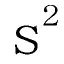
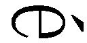
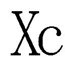
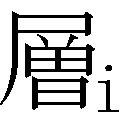
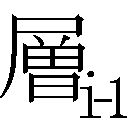
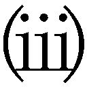
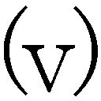
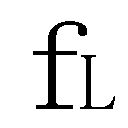

プロローグ アイデアのもつ力
001 母は才能のある画家で、水彩画を専門にしている。父は著名な音楽家で、ベル・シンフォニーの指揮者であり、クイーンズボロ・カレッジ音楽学部を創設し、学部長を務めていた。
002 トム・スイフト・ジュニアのシリーズは、１９５４年にGrosset and Dunlap社から刊行が始まった。ヴィクター・アップルトンというペンネームのもと複数の作者の手で書かれ、１９７１年まで続いた。10代の少年トム・スイフトと友人のバド・バークレーが、宇宙を駆けめぐり、未知の土地を探検し、悪いやつらをやっつけて、風変わりな機械を駆使する。たとえば、家くらいの大きさの宇宙船とか、宇宙ステーション、空飛ぶ実験室、円盤飛行機、電気水素肺、潜水シーコプター、追い払い器（水中なら水を追い払い、大きな泡を作り、そこで生活することができる）など。
003 プログラムの名前は、Select. Studentsで、３００項目の質問に答える。３０００校の大学について約２００万件のデータベースをもつソフトウェアで、生徒の興味や経歴、成績に応じて６から15校の大学を選び出す。まず自分たちで１万人くらいの生徒のデータを処理した後に、Harcourt, Brace, and Worldという出版社にプログラムを売った。
004 １９９０年にMIT Pressから出版されたThe Age of Intelligent Machinesは、米国出版者協会から、「ベスト・コンピュータ・サイエンス・ブック」に選ばれた。この本では、人工知能の発達を探り、インテリジェント・マシンがもたらす哲学的、社会的、経済的影響を予測している。シェリー・タークル、ダグラス・ホフスタッター、マーヴィン・ミンスキー、シーモア・パパート、ジョージ・ギルダーらの思想家が書いたＡＩに関する23の文章が補足として収められている。この本の全文は〈www.KurzweilAI.net/aim〉で読める。
005 Douglas R. Hofstadter, Gödel, Escher,Bach: An Eternal Golden Braid (New York: Basic Books, 1979).〔『ゲーデル、エッシャー、バッハ──あるいは不思議の環』ダグラス・Ｒ・ホフスタッター著／野崎昭弘他訳／白揚社〕
第１章 六つのエポック
001 トランストピア・サイト〈www.transtopia.org/faq.html#1.11〉には、「特異点論者」とは「マーク・プラスによって『特異点の概念を信ずる人』であると初めて定義された」とある。またこのようにも定義されている。「『特異点活動家』または『特異点の友』のこと。特異点をもたらすよう行動する人 [Mark Plus, 1991; Singularitarian Principles, Eliezer Yudkowsky, 2000]」。万人に受け入れられた定義はなく、トランスヒューマニストの多くも元来の意味では──「活動家」または「友人」というよりも「特異点という概念の信奉者」という点で──特異点論者である。
エリーザー・Ｓ・ユドコウスキーは、The Singularitarian Principles, version1.0.2 (January 1, 2000), 〈yudkowsky.net〉で別の定義を提案している。「特異点論者とは、人間を超えた知能をテクノロジーを用いて創造することが望ましいと考え、その目的に向かって努力する人のことだ。特異点と呼ばれる未来の友であり、擁護者、代理人である」
わたしの考えはこうだ。特異点を前進させる人。特に、特異点において、さまざまな手法を用い、人間の言説のあらゆる領域で、知識が建設的に発展することを目指す人──たとえば、民主化を進展させ、全体主義者や原理主義者の教義やイデオロギーと闘い、音楽、絵画、文学、科学、テクノロジーなどの多様な形態において知識を生みだす人。特異点論者とは、今世紀に到来する変化を理解し、それが自分自身の生活にもたらす影響についてよく考えたことのある人のことである。
002 コンピューティングの年間成長率が２倍になる点については、次章で検討する。単位原価あたりのトランジスタの数は２年で２倍になっているが、トランジスタの速度自体も徐々に速くなってきており、その他のレベルでの技術革新や改善も多々見られる。単位原価あたりのコンピューティングの全体的な能力は、最近では、毎年２倍になっている。とりわけ、チェスのコンピュータ・マシンにもたせることのできる毎秒あたりのコンピューティング量は、１９９０年代を通じて、毎年２倍になっていた。
003 スタニスラフ・ウラムが伝えたジョン・フォン・ノイマンの言葉。"Tribute to John von Neumann", Bulletin of the AmericanMathematical Society 64.3, pt.2 (May 1958): 1-49.
004 第２章の注016を参照。
005 会議は、２００３年２月19日から21日まで、カリフォルニア州モンテレーで開かれた。幹細胞研究、バイオテクノロジー、ナノテクノロジー、クローニング、遺伝子組み換え食品などが議題に取り上げられた。
006 インターネットの規模をノード（サーバー）の数で測ると、１９８０年代には毎年倍増していたが、１９８５年では数万にすぎなかった。ところが１９９５年にはノード数が数千万にふくれあがった。２００３年１月のインターネット・ソフトウェア・コンソーシアムの調査によると〈www.isc.org/ds/host-count-history.html〉、ウェブホスト（ウェブサイトを開いているサーバー）の数は１億７２００万台にも上っている。この数は、ノードの総数のうちの一部でしかない。
007 ひじょうにおおまかに言うと、人間原理では、物理の基礎定数と人間の存在とが適合しているはずだ、とされている。そうでなければ、われわれ人間がここに存在して、定数を知ることはなかったことになる。人間原理という説が立てられたきっかけのひとつに、重力定数や電磁結合定数などの、定数の研究がある。これらの定数の値が、限られた狭い範囲に収まっていなかったら、知的生命がこの宇宙に存在することはありえなかっただろう。その一例として、電磁結合定数がもっと強かったなら、電子と他の原子とが結合することはなかっただろう。定数が弱かったなら、電子は軌道内にとどまることができなかっただろう。要するに、この定数ひとつをとっても、ごく狭い範囲からはみ出していたら、分子が形成されることはなかったのだ。こうした理由で、人間原理を唱える人々は、この宇宙は、知的生命が進化できるように絶妙に調整されていると考える（ヴィクター・ステンガーなど、この説に反対する人々は、調整といってもたいしたことはない、と言っている。実際には補償のメカニズムが働き、異なった条件においても、より幅の広い生命が形成されるようになっている、というのがその説明だ）。
多重宇宙を仮定する複数の現代宇宙論（注008と009を参照）との絡みでも、人間原理が登場する。これらの理論には、それぞれ独自の法則がある。思考する者の存在が法則によって許されている宇宙においてのみ、われわれがこうして存在し、このような問いを提示することができる。
話題を呼んだ重要な本のひとつがこれだ。John Barrow and Frank Tipler, The Anthropic CosmologicalPrinciple (New York: Oxford University Press, 1988). また、Steven Weinberg, "A DesignerUniverse?"を〈www.physlink.com/Education/essay_weinberg.cfm〉で読んでみてほしい。
008 宇宙論の中には、ビッグ・バンは一度ではなく何度も起き、その結果、多重宇宙が作られた（並行宇宙、もしくは「泡」）とするものもある。それぞれの泡には、それぞれに異なる物理定数や力があり、これらのうちのいくつか（あるいは最低ひとつ）の泡には、炭素ベースの生命が存在する。以下を参照。Max Tegmark, "Parallel Universes", Scientific American (May2003): 41-53〔「日経サイエンス」２００３年８月号に収載〕; Martin Rees, "Exploring Our Universe and Others", ScientificAmerican (December 1999): 78-83; Andrei Linde, "The Self-Reproducing Inflationary Universe", ScientificAmerican (November 1994): 48-55.
009 「多世界」あるいは多重宇宙の理論は量子力学の解釈のひとつとして作られ、量子力学で提議された問題を解決し、その後、人間原理と結びついた。クウェンティン・スミスはこうまとめている。
量子力学の伝統的解釈、すなわちコペンハーゲン解釈には、閉じた宇宙における一般相対性時空幾何学には適用できない、という深刻な問題がある。閉じた宇宙の量子状態は、時空の振幅がさまざまに変化する波動関数として記述することができる。ある任意の時点で観察された宇宙の状態の確率は、その点における波動関数の振幅を２乗したものになる。宇宙が、さまざまな確率をもつ多数の点の重ね合わせから、そのうちのひとつの点──宇宙が実際にはそうである点──へと移行するには、測定器を導入し、それにより波動関数を崩壊させ、宇宙をその一点に確定しなければならない。しかしこれは不可能だ。宇宙の外にはなにも存在しないため、外部の測定器というものはなく、それを用いて波動関数を崩壊させることはできない。
ひとつの解決方法が考えられる。コペンハーゲン解釈の中心となっている外部からの観測や測定といった概念に頼らない量子力学解釈を構築することだ。閉じた系に固有の量子力学を定式化することも可能だろう。
こうした解釈は、ヒュー・エヴェレットが１９５７年に発表した論文「量子力学の相対状態の定式化（Relative State Formulation of Quantum Mechanics）」で展開されている。波動関数で表される重ね合わせのそれぞれの点は、観測者（もしくは測定器）のひとつの状態と、観測されている系のひとつの状態とを同時に含んでいるとされる。したがって、「観測（または相互作用）が繰り返されるにつれ、観測者の状態は多数の異なる状態へと『分岐』する。分岐のそれぞれは、測定の異なる結果と、それに対応する対象系の固有状態を表している。全ての枝は、任意の観測が繰り返されたあとの重ね合わせの中に、同時に存在する」。
それぞれの枝は因果的に互いに独立していて、観測者が「分離」のプロセスに気づくことは決してない。それぞれの観測者の目には、世界は、実際のものと同じように見える。
この考えを宇宙全体に当てはめると、宇宙は、内部のさまざまな部分において観測に似た相互作用が行われた結果、つねに、多数の異なる、因果的に独立した枝へと分割している、ということになる。それぞれの枝は、別々の世界と見なすことができ、その世界ひとつひとつは、絶えず、複数の世界へとさらに分離していく。
これらの複数の枝──複数の宇宙──には生命に適したものと適さないもののどちらもあるとするならば、とスミスは議論を続ける。「ここで、強い人間原理と量子力学の多世界解釈とを結びつけて、この小論の冒頭で述べた見かけの問題を解決する方法を述べることができる。現実にあるものが、知性体の存在する世界であって、生命のない多数の世界のどれかではない、という問題をはらむように見える事実は、実際には事実ではなかったことがわかる。生命のある世界も生命のない世界もどちらとも現実であるのなら、われわれのこの世界が現実にあることと、予測されて当然のものであるということは、驚くことでもなんでもない」Quentin Smith, "The Anthropic Principle and Many-Worlds Cosmologies",Australasian Journal of Philosophy 63.3 (September 1985). この論文は〈www.faculty.umb.edu/gary_zabel/Courses/Parallel%20Universes/Texts/the_anthropic_principle_and_many-worlds_cosmologies.htm〉で読める。
010 一般的なニューロン間結合のリセットタイムはおよそ５ミリ秒で、毎秒２００回のデジタル制御のアナログ処理が可能になる。ニューロンの情報処理には多くの非線形性があることを考慮に入れても、これは、現在の電子回路よりも１００万倍程度も遅い。電子回路では、１ナノ（10憶分の１）秒以下でスイッチの切り換えができる。
011 ロスアラモス国立研究所では、世界でただひとつとされている天然原子炉跡（西アフリカ、ガボンのオクロにある）で放射性同位体の相対濃度を研究し、微細構造定数もしくはアルファ（光速はアルファに逆比例する）が20億年にわたり減少してきたことを発見した。それならば、光速がわずかに速度を増していることになる。もちろん、この結果は確証をとる必要があるが。"Speed of Light May Have Changed Recently", New Scientist,June 30, 2004, 〈www.newscientist.com/article/dn6092-speed-of-light-may-have-changed-recently.html〉を参照。
012 スティーヴン・ホーキングは、２００４年７月21日にダブリンで開かれた科学会議にて、30年前に発言して論議を呼んだブラックホールについての見解は間違いだったと述べた。ホーキングはそれまで、ブラックホールにのみ込まれた情報は取り戻すことはできない、と主張していた。この見解は、情報は保存されるとする量子論に反する。「ＳＦファンをがっかりさせてすまないが、情報が保存されるなら、ブラックホールを利用して別の宇宙へ旅行する可能性はゼロになる」とホーキングはこのたび説明した。「ブラックホールに飛び込めば、あなたの質量エネルギーはこちらの宇宙に戻ってくる。ただし、その形はめちゃくちゃになっている。あなたがどんなものだったのかという情報は含まれているが、認識不可能な状態となっている」Dennis Overbye, "About Those Fearsome Black Holes? Never Mind", New York Times, July 22, 2004を参照。
013 事象の地平線とは、特異点（ブラックホールの中心点、密度と圧力が無限大）を取り囲む球面領域の外側の境界線、外辺部のことである。事象の地平線の内部では、重力の影響がひじょうに強く、光でさえそこから逃れることはできない。ただし、量子効果によって、表面から放射が起き、粒子－｜反粒子のペアが形成され、片方がブラックホールに落ち込み、もう片方が放射される（いわゆるホーキング放射）。こうした由来によって、この領域は「ブラックホール」と呼ばれている。これは、ジョン・ホイーラー教授の命名による。ブラックホールはもともと、ドイツの宇宙物理学者クルト・シュヴァルツシルトが、アインシュタインの一般相対性理論に基づき１９１６年に予測したものだが、銀河の中心に実際に存在することは、最近になってようやく実験的に証明された。さらにくわしく知りたい人は、以下を参照のこと。Kimberly Weaver, "The Galactic Odd Couple", 〈www.scientificamerican.com〉, June 10, 2003; Jean-Pierre Lasota, "Unmasking Black Holes", ScientificAmerican (May 1999): 41-47; Stephen Hawking, A Brief History of Time: From the Big Bang to Black Holes (NewYork: Bantam, 1988).〔『ホーキング、宇宙を語る──ビッグバンからブラックホールまで』Ｓ・Ｗ・ホーキング著／林一訳／早川書房〕
014 Joel Smoller and Blake Temple, "Shock-Wave Cosmology Inside a BlackHole", Proceedings of the National Academy of Sciences 100.20 (September30, 2003): 11216-18.
015 Vernor Vinge, "First Word", Omni (January 1983): 10.
016 Hans Moravec, Mind Children: TheFuture of Robot and Human Intelligence (Cambridge,Mass.: Harvard University Press, 1988).
017 Vernor Vinge, "The Coming Technological Singularity: How to Survive in the Post-Human Era", VISION-21 Symposium, １９９３年３月、ＮＡＳＡルイス研究所およびオハイオ航空宇宙研究所の主催。
018 Ray Kurzweil, The Age of Spiritual Machines: When Computers Exceed Human Intelligence (New York: Viking, 1999).
019 Hans Moravec, Robot: MereMachine to Transcendent Mind (New York: Oxford University Press, 1999).
020 Damien Broderickの二つの作品。The Spike: Accelerating into the Unimaginable Future (Sydney, Australia: Reed Books, 1997) およびThe Spike: How Our Lives Are Being Transformed by Rapidly AdvancingTechnologies, rev. ed. (New York: Tor/Forge, 2001).
021 ジョン・スマートの概説のうち、"What Is the Singularity"が以下で読める。〈www.kurzweilai.net/what-is-the-singularity〉. テクノロジーの加速度的進化、特異点、その他の関連する問題についてのジョン・スマートの文章は以下に集められている。〈www.accelerationwatch.com〉および〈www.Accelerating.org〉。
ジョン・スマートは、「アクセラレーティング・チェンジ」会議を主宰している。この会では、「人工知能と知能の増幅」に関する問題を扱っている。
022 人間の脳を模倣したものを電子回路上で走らせると、生物的な脳よりもずっと速く作動する。人間の脳は超並列処理（約１００兆の桁数でのニューロン間結合があり、全て同時に作動することが可能）を行うことができるが、結合のリセットタイムは、現在の電子工学のものよりも極端に遅い。
023 第２章の注016を参照。
024 １９５０年にMind: A Quarterly Review of Psychology and Philosophy上に発表された論文で、コンピュータ理論家のアラン・チューリングが有名な疑問を提示した。「機械は考えることができるのか？ コンピュータが考えることができるとすれば、人間はどうやってそれを見抜くことができるか？」という２つの疑問だ。２番目の問いにたいする答えが、チューリングテストである。現在では、テストは以下のように定義されている。専門の委員が、離れた場所にいる調査相手に、愛や、時事問題、数学、哲学、相手の個人的な過去などについて多岐にわたる質問をし、相手がコンピュータか人間かを判断する。チューリングテストは、人間の知能があるかどうかを測るものであり、テストに不合格となっても、知能がないというわけではない。チューリングの元の論文は以下にある〈www.abelard.org/turpap/turpap.htm〉。テストについての議論は以下を参照。Stanford Encyclopedia of Philosophy, 〈plato.stanford.edu/entries/turing-test〉.
人間と完全に同等のレベルの知能を実際にもっていない限り、適切に設定されたチューリングテストに機械が合格できるようなトリックやアルゴリズムはない。Ray Kurzweil, "A Wager on the Turing Test: Why IThink I Will Win", 〈www.kurzweilai.net/a-wager-on-the-turing-test-why-i-think-i-will-win〉を参照。
025 John H. Byrne, "Propagation of the Action Potential", Neuroscience Online.「神経内での活動電位の伝達速度は、毎秒１００メートル（毎時５８０マイル）から毎秒10分の１メートル以下（毎時0.6マイル）までの間で変わる」
Kenneth R. Koehler, "The Action Potential",〈www.ucblueash.edu/koehler/biophys/4d.html〉を参照。「哺乳類の運動ニューロンの伝達速度は、10～１２０メートル／秒であるが、無髄の感覚ニューロンでは５～25メートル／秒である（無髄ニューロンでは継続的に発火し跳躍伝導はない。イオンが漏れれば事実上完全な回路ができるが、伝達率は遅くなる）」
026 Science誌に発表された２００２年の研究では、β－｜カテニンタンパク質が人間の大脳皮質を水平方向に拡大させる働きをしていることに注目している。このタンパク質は、大脳皮質の表面を折りたたんだり溝を刻んだりするのに主要な役割を担っている。折りたたまれることによって、脳のこの部分の表面積が増し、ニューロンがさらに多く入るゆとりができる。このタンパク質を過剰に生産するマウスは、大脳皮質のしわが増え、折りたたみが多くなり、対照群のマウスがもつなめらかで平坦な大脳皮質よりも、表面積がかなり広くなる。Anjen Chenn and Christopher Walsh, "Regulation of Cerebral Cortical Size by Control of Cell Cycle Exit in Neural Precursors", Science 297(July 2002): 365-69.
２００３年に、人間とチンパンジーとアカゲザルの大脳皮質における遺伝子発現プロフィールの比較研究が行われたが、脳の組織化と認知に関連する遺伝子の中では、たった91個の遺伝子にしか発現の違いが見られなかった。中でも、これらの違いの９割がアップレギュレーション（作用がより活発になる）に関与していたということに、当の研究者らも驚かされた。M. Cacares et al., "Elevated Gene Expression Levels DistinguishHuman from Non-human Primate Brains", Proceedings of the National Academy ofSciences 100.22 (October 28, 2003): 13030-35を参照。
ところが、カリフォルニア大学アーヴァイン校医学部の研究者らは、脳の中の特定の領域にある灰白質と知能指数との関係が、脳全体の大きさと知能指数との関係よりも強く、灰白質の中でも知能指数に関係するのはほんの６パーセントの部分にすぎないことを発見した。さらに、知能に関わる領域は脳の全体に散らばって存在しているので、ただひとつの「知能の中心」というもの──たとえば側頭葉がそうだというように──は、なさそうだということもわかった。
"Human Intelligence Determined by Volume and Location of Gray MatterTissue in Brain", University of California-Irvine news release (July 19, 2004),〈today.uci.edu/iframe.php?p=/news/release_detail_iframe.asp?key=1187〉.
２００４年の研究では、人間の神経系の遺伝子は、人間以外の霊長類と比べて加速度的に進化していることが明らかになった。また、全ての霊長類の神経系遺伝子は、他の哺乳類と比べて加速度的に進化していることもわかった。Steve Dorus et al., "Accelerated Evolution of Nervous System Genesin the Origin of Homo sapiens"：‥ 1027-40. 研究チームのリーダー、ブルース・ラーンは、この結果について、「人類が認知能力を進化させてきたのは、突然変異が何度か偶発的に起こったからではない。より複雑な認知能力を指向して、ひじょうに集中した選択がなされたことにより、突然変異がおびただしく起こったことによる」と述べている。Catherine Gianaro, University of Chicago Chronicle 24.7(January 6, 2005).
筋肉繊維の遺伝子ＭＹＨ１６に起きたひとつの突然変異によって、人類がより大きな脳をもつようになった、と言われている。この変異によって大昔の人間のあごの力が弱くなったため、他の類人猿ほどの大きなあごの筋肉と骨がいらなくなり、脳の大きさを制限されることがなくなった。Stedman et al., "Myosin Gene Mutation Correlates with AnatomicalChanges in the Human Lineage", Nature 428 (March 25, 2004): 415-18.
027 Robert A. Freitas Jr., "Exploratory Design in Medical Nanotechnology: A Mechanical Artificial Red Cell", Artificial Cells, BloodSubstitutes, and Immobil. Biotech. 26 (1998): 411-30; 〈www.foresight.org/Nanomedicine/Respirocytes.html〉 を参照。ナノメディシン・アートギャラリーのイメージも見てほしい。〈www.foresight.org/Nanomedicine/Gallery/Species/Respirocytes.html〉.
028 フォグレットは、ナノテクノロジーのパイオニアでラトガーズ大学教授のＪ・ストーズ・ホールが考えた概念。ホールの説明から抜粋してみよう。「ナノテクノロジーを支えているのは、小さくて自己複製するロボットという概念です。この概念を単純に拡張すると、汎用フォグというアイデアに至ります。こんなものがほしいという物体を原子を使って組み立てるより、小さなロボットたち［フォグレット］が腕と腕をつなげて、中身も形もその物体そのものを作ったらどうでしょう。前衛的なデザインのコーヒーテーブルに飽きたら、ロボットたちが並び方を少し変えるだけで、優美なアン女王朝様式のテーブルが現れます」J. Storrs Hall, "What I Want to Be When I Grow Up, Is a Cloud", Extropy,Quarters 3 and 4, 1994. こちらも参照。J. Storrs Hall, "Utility Fog: TheStuff That Dreams Are Made Of", Nanotechnology: Molecular Speculations on Global Abundance, B. C. Crandall ed. (Cambridge, Mass: MITPress 1996).
029 Sherry Turkle ed., "Evocative Objects: Things We Think With" (The MIT Press, 2007).
030 第２章の「コンピューティングの指数関数的成長」の図17を参照。コンピューティングのコストパフォーマンスが21世紀の終わりまで二重の指数関数的成長をとげると予測すると、１０００ドル分で買えるコンピューティングでは、毎秒10の60乗回の計算（cps）が行われる。第２章で論じるが、人間の脳の機能を模倣するのに必要とされるコンピューティング量を３通りの分析手法で予測したところ、およそ10の15乗cpsとなった。もう少し保守的に見積もり、あらゆるシナプスと樹状突起の非線形性をシミュレートすることも考慮に入れ、人間の脳をニューロモーフィックに模倣すると、10の19乗cpsとなった。さらに保守的な数字をとると、約10の10乗人のコンピューティング能力は10の29乗cpsとなる。よって、２０９９年あたりに１０００ドルで購入できるコンピューティング能力10の60乗cpsは、10の31乗人（１０００万×１兆×１兆）の人口に相当する。
031 注028を参照。
第２章 テクノロジー進化の理論
001 John Smart, "Understanding Evolutionary Development: A Challenge for Futurists" の抄録。2004年８月３日ワシントンD. C. で開かれたWorld Futurist Societyの年次総会で発表。
002 進化における画期的な事象は複雑さの増大の表れである、という見解はセオドア・モディスによるもの。Theodore Modis, "Forecasting the Growth of Complexity and Change", Technological Forecasting and Social Change 69.4 (2002), 〈www.growth-dynamics.com/articles/TedWEB.htm〉.
003 ファイルの圧縮は、データの転送（インターネットで音楽ファイルや文書ファイルを送る場合など）とデータの保存のいずれにおいても、重要となる。ファイルが小さいほど、転送時間が短くなり、保存スペースが小さくて済む。情報理論の父とよく称される、数学者クロード・シャノンが、データ圧縮の基本理論を次の論文で定義している。"A Mathematical Theory of Communication", The Bell SystemTechnical Journal 27 (July-October 1948):379-423, 623-56. データの圧縮が可能になるのは、データに冗長性（反復）があったり、文字の組み合わせが出現する可能性が存在したりするという要因があるからだ。たとえば、音声ファイルに無音があれば、圧縮ファイルでは、無音が続く長さを示す値で置き換えることができる。文書ファイルに文字の組み合わせがあれば、コード化された識別名で置き換えることができる。
冗長性は、可逆（ロスレス）圧縮で取り除くことができる、とシャノンは説明している。可逆圧縮とは、情報が失われることは一切ない、ということだ。損失のない圧縮にも限界はあり、シャノンはそれをエントロピー率と名づけて定義した（圧縮するとデータの「エントロピー」が増す。この場合の「データ」とは、あらかじめ決められていて予測可能なデータ構造とは違い、データに実際ある情報の量のこと）。データを圧縮すると、データから冗長性が取り除かれる。損失のない圧縮では、データを失うことなく、これができる（つまり、まったくのもとのデータを復元できる）。反対に、画像ファイルやストリーミング方式のビデオファイルや音声ファイルで用いられる非可逆（ロッシー）圧縮では、圧縮すると情報が失われる。ただし、人間の感覚ではほとんど捉えられない程度の損失にすぎない。
ほとんどのデータ圧縮技術では、符号を使う。ソースの基本的な単位（あるいは記号）を符号アルファベットに写像したものだ。たとえば、文書ファイル中の全てのスペースは、ひとつの符号名とスペースの個数に置き換えることができる。圧縮アルゴリズムを用いて写像を行い、符号アルファベットを使った新しいファイルを作成する。圧縮ファイルはもとのファイルよりも小さく、転送や保存がしやすい。
004 Murray Gell-Mann, "What Is Complexity?" in Complexityvol.1 (New York: John Wiley and Sons, 1995).
005 人間の遺伝コードは、圧縮の可能性を考えなければ、およそ60億（約10の10乗）ビットになる。よって、理論的に１キログラムの岩に保存可能な10の27乗ビットは、遺伝コードよりも10の17乗倍も大きい。
006 もちろん、人間も、莫大な数の粒子で構成されているのだから、その全ての粒子の特性について考えるのなら、同等の重さの岩に匹敵する量の情報をもつ。岩の場合と同じで、この情報の大半は、その人の状態を描写するのに必要なものではない。それでいて、人を描写するのには、岩を描写する際よりももっとたくさんの情報が必要になる。
007 第５章の注167に、遺伝的アルゴリズムのアルゴリズム記述がある。
008 人間もチンパンジーもゴリラもオランウータンも、みな、科学的には同じヒト科（Hominidae科）に分類される。人類の系統は、５００万年から７００万年前に類人猿から分岐したと考えられている。ヒト科の中のヒト属には、ホモ・エレクトスのような絶滅した種と、現生人類（ホモ・サピエンス）などが含まれる。
チンパンジーの手の指は、人間の指よりももっと長く、少し曲がっている。親指は、人間のものよりも短く、力は弱く、自由自在に動かすことは難しい。棒を振り回すことはできるが、取り落とすことが多い。親指が人差し指と重ならないので、ぎゅっと握ることはできない。現代人では、親指がもっと長く、他の４本の指が中心軸にたいして回転するので、全ての指の先を親指の先に合わせることができる。この特性は、完全拇指対向性という。このことや、他の変化によって、人類は、二とおりの新しいつかみ方ができるようになった。正確につかむことと、力を入れてつかむことだ。先行人類ですら、たとえば、３００万年ほど前にエチオピアに住んでいたルーシーと呼ばれるアウストラロピテクスでも、正確に速く岩を投げることができた。これ以降、投げたり棍棒を打ちつけたりといった手の能力が継続的に向上し、身体の他の部分もこれに関連して変化した結果、同じくらいの大きさや重さの動物よりもはっきりと優位に立つようになった、と科学者は言う。Richard Young, "Evolution of the Human Hand: TheRole of Throwing and Clubbing", Journal of Anatomy 202 (2003): 165-74; Frank Wilson, The Hand: How ItsUse Shapes the Brain, Language, and Human Culture(New York: Pantheon, 1998)〔『手の五〇〇万年史──手と脳と言語はいかに結びついたか』フランク・ウィルソン著／藤野邦夫他訳／新評論〕を参照。
009 複雑系と創発系に関わる概念とテクノロジーの発展には、サンタフェ研究所がパイオニア的な役割を果たしてきた。カオスと複雑系についてのパラダイムを構築した研究者の筆頭には、スチュアート・カウフマンがあげられる。その著書、At Home in the Universe: TheSearch for the Laws of Self-Organization and Complexity (Oxford: Oxford University Press, 1995)〔『自己組織化と進化の論理──宇宙を貫く複雑系の法則』スチュアート・カウフマン著／米沢富美子監訳／日本経済新聞社〕では、「カオスの縁に位置する秩序に向かう力」を考察している。
ジョン・タイラー・ボナーは、著書Evolution of Complexity by Means of Natural Selection (Princeton: Princeton University Press, 1998) の中で、「卵子が精巧なおとなの人間になるとは、どういうことなのか。バクテリアが、何百万年もかけて、象にまで進化できたというのは、どういうことなのか」と問うている。
ジョン・ホランドも、サンタフェ研究所で複雑系という新しい分野の先陣に立つ思想家だ。著書Hidden Order: How Adaptation Builds Complexity(Reading, Mass.: Addison-Wesley, 1996) には、１９９４年にサンタフェ研究所で行った一連の講演が収められている。John H. Holland. Emergence: FromChaos to Order (Reading, Mass.: Addison-Wesley, 1998) および Mitchell Waldrop, Complexity: TheEmerging Science at the Edge of Order and Chaos(New York: Simon & Schuster, 1992)〔『複雑系』Ｍ・ミッチェル・ワールドロップ著／田中三彦他訳／新潮社〕も参照。
010 熱力学の第二法則を用いれば、燃料を燃やして作られる熱（エネルギー）を全て仕事に使う、といった完璧な機関といったものが存在しない理由を説明できる。いくらかの熱が、どうしても環境中に失われてしまうのだ。これと同じ自然の原理から、熱は、熱い鍋から冷たい空気へと流れるのであって、その逆ではないことになる。さらに、閉鎖（「孤立」）系は自然と、時間の経過とともにさらに無秩序になる──つまり、秩序から無秩序に移行する傾向がある、と仮定される。たとえば、氷のかけらの中の分子は、とりうる配列に収まっている。そのため、コップ一杯の氷のかけらは、それが室温に置かれて水になったときよりも、少ないエントロピー（無秩序）をもっている。コップの水のほうが、コップ１杯の氷よりも、分子がとりうる配列の種類が多い。運動の自由が大きいと、エントロピーも大きくなる。エントロピーは、「生じやすさ」という側面から捉えることもできる。ある状態に到達しうる場合の数が多ければ多いほど、「生じやすさ」も大きくなる。よって、たとえるなら、レンガを乱雑に積んだもののほうが、きれいに積んだものよりも、「生じやすさ」が大きい（エントロピーも大きい）。
011 マックス・モアは、「前進しつつあるテクノロジーは、互いに結びつき、発達を促し合い、進歩をいっそう加速させる」という見解を示している。Max More, "Track 7 Tech Vectors to Take Advantage of TechnologicalAcceleration", ManyWorlds, August 1, 2003.
012 さらにくわしいことは、こちらを参照。J. J. Emerson et al., "Extensive Gene Traffic on the Mammalian X Chromosome", Science 303.5657 (January 23, 2004): 537-40,〈www.sciencemag.org/content/303/5657/537.short〉; Nicholas Wade, "Y Chromosome Depends on Itself to Survive", New York Times, June 19, 2003; and Bruce T. Lahn and David C. Page, "Four Evolutionary Strata on theHuman X Chromosome", Science 286.5441 (October 29, 1999): 964-67, 〈http://inside.wi.mit.edu/page/Site/Page%20PDFs/Lahn_and_Page_strata_1999.pdf〉.
おもしろいことに、女の２つ目のＸ染色体は、Ｘ不活化と呼ばれるプロセスにおいてスイッチが切られ、ひとつのＸ染色体の遺伝子だけが発現する。研究では、父親からきたＸ染色体のスイッチが切られる細胞と、母親からきたＸ染色体のスイッチが切られる細胞とがあるという。
013 Human Genome Project, "Insights Learned from the Sequence", 〈www.ornl.gov/sci/techresources/Human_Genome/project/journals/insights.shtml〉. ヒトゲノムの配列は決定されたが、そのほとんどはタンパク質をコードしているわけではない（いわゆるジャンクＤＮＡ）。よって研究者らは、ヒトのＤＮＡにある30億の塩基対の中でどのくらいの遺伝子が特定できるかという議論をまだ続けている。今のところ遺伝子数は３万以下と見積もられているが、ヒトゲノムプロジェクトの終了前には、10万とも見積もられていた。これについては以下を参照。"How Many Genes Are in the Human Genome?" 〈www.ornl.gov/sci/techresources/Human_Genome/faq/genenumber.shtml〉 およびElizabeth Pennisi, "A Low Number Wins the GeneSweep Pool", Science 300.5625 (June 6, 2003): 1484.
014 ナイルズ・エルドリッジと故スティーヴン・ジェイ・グールドが、１９７２年にこの理論を提示した（N. Eldredge and S. J. Gould, "Punctuated Equilibria: An Alternative to Phyletic Gradualism", T. J. M. Schopf, ed., Models in Paleobiology [San Francisco: Freeman, Cooper], pp.82-115に所収）。古生物学者と進化生物学者の間でこの説をめぐり激しい論争が始まり、まだ収束はしていないが、断続平衡説は受け入れられつつある。この説では、種は、数百万年にわたり比較的安定した状態にある、とされる。この安定は、とつぜんの大きな変化で破られ、その結果、新たな種が生まれ、古い種が滅びる（エリザベス・ヴルバはこれを「交代動向（ターンオーバー・パルス）」と命名）。影響は生態系全体に及び、関連のない数々の種も巻き込まれる。エルドリッジとグールドが提唱したパターンでは、新たなものの見方が必要となる。「なぜなら、偏見の中で、目に入らないことほど狭量なものはないからだ。静止状態はどうしても、進化のない状態と見なされてしまい、研究課題として取り上げられないのがつねだった。だが、古生物学的な現象全体の中でもっともよくある状態を、見る価値のないつまらないものだと決めつけるのは、おかしいではないか！」S. J. Gould and N. Eldredge, "Punctuated Equilibrium Comes of Age", Nature366 (November 18, 1993): 223-27.
こちらも参照のこと。K. Sneppen et al., "Evolution As a Self-Organized Critical Phenomenon", Proceedings of the National Academy of Sciences 92.11 (May 23, 1995): 5209-13; Elisabeth S. Vrba, "Environment and Evolution: Alternative Causes of the Temporal Distribution of Evolutionary Events", South African Journal of Science 81 (1985): 229-36.
015 ただし、生物進化はその後も人間と関わり続ける。癌やウィルス性の病気などが、その進行過程で進化を武器に人間を苦しめるのだ（癌細胞やウィルスが、化学療法薬や抗ウィルス療法などの特定の対応策を妨げるように進化するから）。しかし、人知によって、生物進化の知恵を出し抜くことができる。十分に根本的なレベルで病気のプロセスを攻撃したり、一度に数個の直交的（独立した）手段を用いる「カクテル」方式で病気をたたけばよい。
016 パラダイム・シフトの率を、新しい通信テクノロジーを採用するまでにかかる時間で測った値は、現時点では、９年ごとに２倍になっている（つまり、大量使用される──米国の人口の１／４が使うと定義──までの時間が半減している）。
017 １９６７－｜99年のインテルのデータ。Gordon E. Moore, "Our Revolution"を参照。２０００－｜16年の国際半導体技術ロードマップ（ＩＴＲＳ）はこちらを参照。〈www.itrs.net〉
018 ＩＴＲＳ ＤＲＡＭコストとは、製造時のビットあたりのコスト（パッケージ価格、マイクロセント）である〔マイクロセントとは、１ドルの１億分の１。トランジスタなどの電子部品のコストを計算する単位に用いられる〕。１９７１－｜２０００年のデータは、VLSI Research Inc. より。２００１年以降のデータは、上記ＩＴＲＳより。
019 インテルとデータクエストの報告書（２００２年12月）。Gordon E. Moore, "Our Revolution" 〔注017〕を参照。
020 Randall Goodall, D. Fandel, and H. Huffet, "Long-Term Productivity Mechanisms of the Semiconductor Industry", シリコン材料科学テクノロジー第９回国際シンポジウム、２００２年５月12－｜17日、フィラデルフィア。
021 １９７６－｜99年のデータは、E. R. Berndt, E. R. Dulberger, and N. J. Rappaport, "Price and Quality of Desktop and Mobile Personal Computers: A Quarter Century of History", July 17, 2000 による。２００１－｜16年のデータは、ITRS, 2002 Update, On-Chip Local Clock in Table 4c: Performance and Package Chips: Frequency On-Chip Wiring Levels -- Near-Term Years, p.167による。
022 インテル、Microprocessor Quick Reference Guide,Intel Research, 〈www.intel.com/pressroom/kits/quickrefyr.htm〉.
023 Gordon Moore, "No Exponential Is Forever ... but We Can Delay'Forever'" 国際固体回路会議（ＩＳＳＣＣ）、２００３年２月10日にて発表。〈ftp://download.intel.com/research/silicon/Gordon_Moore_ISSCC_021003.pdf〉.
024 Steve Cullen, "Semiconductor Industry Outlook", InStat/MDR, report no.IN0401550SI, April 2004, 〈www.instat.com/abstract.asp?id=68&SKU=IN0401550SI〉.
025 World Semiconductor Trade Statistics.
026 米国商務省経済分析局、〈www.bea.gov/bea/dn/home/gdp.htm〉.
027 "25 Years of Computer History", 〈www.compros.com/timeline.html〉; Linley Gwennap, "Birth of a Chip", BYTE (Cover Story, December 1996) ; "The CDC 6000 Series Computer", 〈www.moorecad.com/standardpascal/cdc6400.html〉; "A Chronology of Computer History" ; Mark Brader, "A Chronology of Digital Computing Machines (to 1952) ", 〈www.davros.org/misc/chronology.html〉; Karl Kempf, "Electronic Computers Within the Ordnance Corps", November 1961, 〈http://ftp.arl.mil/~mike/comphist/61ordnance/index.html〉; Ken Polsson, "Chronology of Personal Computers", 〈www.islandnet.com/~kpolsson/comphist〉; the Machine Room; ハンス・モラヴェックのコンピュータのデータは〈www.frc.ri.cmu.edu/~hpm/book97/ch3/processor.list〉; Stan Augarten, Bit by Bit: An Illustrated History of Computers(New York: Ticknor and Fields, 1984); International Association of Electrical and Electronics Engineers (IEEE), Annals of the History of the Computer 9.2 (1987): 150-53 and 16.3 (1994): 20; Moravec, Mind Children, René Moreau, The Computer Comes of Age(Cambridge, Mass.: MIT Press, 1984).
028 Hans Moravec, "When Will Computer Hardware Match the Human Brain?" Journal of Evolution and Technology 1 (1998), 〈www.jetpress.org/volume1/moravec.pdf〉.
029 現在では、１０００ドルあたりのＭＩＰＳ数を、およそ４００日で倍増している。そのコストパフォーマンスが２０００ＭＩＰＳ／１０００ドルなので、コストパフォーマンスの増加率は、５ＭＩＰＳ／日、または１ＭＩＰＳ／約５時間ということになる。
030 "IBM Details Blue Gene Supercomputer", CNET News, May 8,2003.
031 Alfred North Whitehead, An Introduction to Mathematics(London: Williams and Norgate, 1911)〔『ホワイトヘッド著作集第２巻──数学入門』ホワイトヘッド著／大出晁訳／松籟社〕を参照。これは、ホワイトヘッドが、バートランド・ラッセルとともに、多大な意義をもつことになる３巻の著作、『プリンキピア・マテマティカ（Principia Mathematica）』を執筆していたのと同時期に書かれた〔『プリンキピア・マテマティカ序論』Ａ・Ｎ・ホワイトヘッド、Ｂ・ラッセル著／岡本賢吾他訳／哲学書房〕。
032 当初は15年かかると予測されていたが、「ヒトゲノムプロジェクトは、予定より２年半早く完了し、費用も、１９９１年度のドル価で27億となり、これも当初の支出予定額を大幅に下回った」。〈http://ornl.gov/sci/techresources/Human_Genome/project/50yr/press4_2003.shtml〉.
033 Human Genome Project Information, 〈www.ornl.gov/sci/techresources/Human_Genome/project/privatesector.shtml〉; Stanford Genome Technology Center, 〈http://sequence-www.stanford.edu/group/techdev/auto.html〉; National Human Genome Research Institute, 〈www.genome.gov〉; Tabitha Powledge, "How Many Genomes Are Enough?" Scientist, November 17, 2003.
034 データは、National Center for Biotechnology Information, "GenBank Statistics", revised May 4, 2004, 〈www.ncbi.nlm.nih.gov/Genbank/genbankstats.html〉 より。
035 ＳＡＲＳウィルスは、同定されてから31日以内に、ブリティッシュコロンビア癌研究機関と米国疾病制圧予防センター（ＣＤＣ）によって遺伝子が解明された。この２つの機関による配列は、２万９０００の塩基対のうち、10対しか異なっていなかった。この研究の結果、ＳＡＲＳウィルスはコロナウィルスの一種であると判明した。ＣＤＣ所長のジュリー・ガーバーディング博士は、この迅速な配列の解明は「歴史上かつてなかったほどの科学的な偉業」であるとした。K. Philipkoski, "SARS Gene Sequence Unveiled", Wired News,April 15, 2003, 〈www.wired.com/medtech/health/news/2003/04/58481〉.
これとは対照的なのが、１９８０年代に始まったＨＩＶウィルスの配列解明への努力だ。ＨＩＶ１ と ＨＩＶ２ は、それぞれ２００３年と２００２年に完全に配列解明が完了した。National Center for Biotechnology Information, 〈www.ncbi.nlm.nih.gov/genomes/framik.cgi?db=genome&gi=12171〉; the Los Alamos National Laboratoryが管理する HIV Sequence Database, 〈www.hiv.lanl.gov/content/sequence/HIV/mainpage.html〉.
036 Mark Brader, "A Chronology of Digital Computing Machines (to 1952) ",（注027参照）; Richard E. Matick, Computer Storage Systems and Technology (New York: John Wiley and Sons, 1977);University of Cambridge Computer Laboratory, EDSAC99, 〈www.cl.cam.ac.uk/UoCCL/misc/EDSAC99/statistics.html〉; Mary Bellis, "Inventors of the Modern Computer: The History of the UNIVAC Computer──J. Presper Eckert and John Mauchly", 〈http://inventors.about.com/library/weekly/aa062398.htm〉; "Initial Date of Operation of Computing Systems in the USA (1950-1958) ", 1968 OECDのデータを編集、〈http://members.iinet.net.au/~dgreen/timeline.html〉; Douglas Jones, "Frequently Asked Questions about the DEC PDP-8 computer";Programmed Data Processor-1 Handbook, Digital Equipment Corporation(1960-1963); John Walker, "Typical UNIVAC®1108 Prices: 1968", 〈www.fourmilab.ch/documents/univac/config1108.html〉, Jack Harper, "LISP 1.5 for the Univac 1100 Mainframe", 〈www.frobenius.com/univac.htm〉; Wikipedia, "Data General Nova" ; Darren Brewer, "Chronology of Personal Computers 1972-1974"; 〈www.pricewatch.com〉;〈http://sharkyextreme.com/guides/WMPG/article.php/10706_2227191_2〉; Byte誌の広告、１９７５年９月～98年３月； PC Computing誌の広告、１９７７年３月～２０００年４月。
037 Seagate, "Products", 〈www.seagate.com〉; Byte誌の広告、１９７７～98年; PC Computing誌の広告、１９９９年３月; Editors of Time-Life Books, Understanding Computers: Memory and Storage, rev. ed. (New York: Warner Books, 1990); "Historical Notes about the Cost of Hard Drive Storage Space", 〈http://ns1758.ca/winch/winchest.html〉; "IBM 305 RAMAC Computer with Disk Drive", 〈www.cedmagic.com/history/ibm-305-ramac.html〉; John C. McCallum, "Disk Drive Prices (1955-2004) ", 〈www.jcmit.com/diskprice.htm〉.
038 James DeRose, The Wireless Data Handbook (St. Johnsbury, Vt.: Quantrum, 1996); First Mile Wireless, 〈www.firstmilewireless.com〉; J. B. Miles, "Wireless LANs", Government Computer News18.28 (April 30, 1999); Office of Technology Assessment, "Wireless Technologies and the National Information Infrastructure", September 1995, 〈www.fas.org/ota/reports/9547.pdf〉; Signal Lake, "Broadband Wireless Network Economics Update", January 14, 2003, 〈www.signallake.com/publications/broadbandupdate.pdf〉; BridgeWave Communications communication, 〈www.bridgewave.com〉.
039 Internet Software Consortium 〈www.isc.org〉; ISC Domain Survey: Number of Internet Hosts, 〈www.isc.org/ds/host-count-history.html〉.
040 毎年12月の米国内のインターネット基幹通信回線の平均通信量を用いて、通年の通信量を見積った。A. M. Odlyzko, "Internet Traffic Growth: Sources and Implications", Optical Transmission Systems and Equipment for WDM Networking II; B. B. Dingel, W. Weiershausen, A. K. Dutta, and K.-I. Sato, eds., Proc. SPIE (The International Society for Optical Engineering) 5247 (2003): 1-15, 〈http://www.dtc.umn.edu/~odlyzko/doc/oft.internet.growth.pdf〉; ２００３－｜04年の値のデータは、A. M. Odlyzkoとのｅメールのやりとりから。
041 Dave Kristula, "The History of the Internet" (March 1997, update August 2001), 〈www.davesite.com/webstation/net-history.shtml〉; Robert Zakon, "Hobbes' Internet Timeline v8.0", 〈www.zakon.org/robert/internet/timeline〉; Converge! Network Digest, December 5, 2002; V. Cerf, "Cerf's Up", 2004.
042 H. C. Nathanson et al., "The Resonant Gate Transistor", IEEE Transactions on Electron Devices 14.3 (March 1967): 117-33; Larry J. Hornbeck, "128 x 128 Deformable Mirror Device", IEEE Transactions on Electron Devices 30.5 (April 1983): 539-43; J. Storrs Hall, "Nanocomputers and Reversible Logic", Nanotechnology5 (July 1994): 157-67; V. V. Aristov et al., "A New Approach to Fabrication of Nanostructures", Nanotechnology 6 (April 1995): 35-39; C. Montemagno et al., "Constructing Biological Motor Powered Nanomechanical Devices", Nanotechnology 10 (1999): 225-31; Celeste Biever, "Tiny 'Elevator' Most Complex Nanomachine Yet", NewScientis,March 18, 2004, 〈www.newscientist.com/article/dn4794-tiny-elevator-most-complex-nanomachine-yet.html〉.
043 ETC Group, "From Genomes to Atoms: The Big Down", pp.39,41.
044 国連アジア太平洋経済社会委員会（ＥＳＣＡＰ） "Regional Road Map Towards an Information Society in Asia and the Pacific", ST/ESCAP/2283, 〈www.unescap.org/publications/detail.asp?id=771〉; 西アジア経済社会委員会（ESCWA） "Regional Profile of the Information Society in Western Asia", October 8, 2003; John Enger, "Asia in the Global Information Economy: The Rise of Region-States, The Role of Telecommunications", 「中国・アジア地域における衛星およびケーブルテレビ国際会議」での発表、Communication Arts Research Institute, Fu Jen Catholic University, June 4-6, 1996.
045 "The 3 by 5 Initiative", Fact Sheet 274, December 2003を参照。
046 ベンチャーキャピタルの投資レベルはハイテク不況の間に確かに下がったが、２００３年の第Ⅱ四半期には、ソフトウェア企業だけで10億ドル近くの投資を集めた（PricewaterhouseCoopers news release, "Venture Capital Investments Stabilize in Q2 2003", July 29, 2003）。１９７４年には、全米の製造業界のうち42社が、ベンチャーキャピタルから合計２６４０万ドルの出資を受けた（１９７４年のドル価。１９９２年のドル価では８１００万ドル）。Samuel Kortum and Josh Lerner, "Assessing the Contribution of Venture Capital to Innovation", RAND Journal of Economics 31.4 (Winter2000): 674-92, 〈home.uchicago.edu/kortum/papers/rje_2000.pdf〉. Paul Gompers and Josh Lerner, The Venture Capital Cycle, (Cambridge, Mass.: MIT Press, 1999)〔『ベンチャーキャピタル・サイクル──ファンド設立から投資回収までの本質的理解』Ｐ・ゴンパース、Ｊ・ラーナー著／吉田和男監訳／シュプリンガー・フェアラーク東京〕. Paul Gompers, "Venture Capital", B. Espen Eckbo ed., Handbook of Corporate Finance: Empirical Corporate Finance, in the Handbooks in Finance series (Holland: Elsevier), chapter 11,2005も参照。
047 「ニューエコノミー」のテクノロジーが、いかにして「オールドエコノミー」の産業を大きく変革しているのかについては以下を参照。Jonathan Rauch, "The New Old Economy: Oil, Computers, and the Reinvention of the Earth", Atlantic Monthly, January 3, 2001.
048 米国商務省経済分析局 〈www.bea.gov〉、Table 1.1.6を選択。
049 米国商務省経済分析局および合衆国統計局より。
050 "The Global Economy: From Recovery to Expansion", Global Economic Prospects 2005: Trade, Regionalism and Prosperity(World Bank, 2004); "World Bank: 2004 Economic Growth Lifts Millions from Poverty", Voice of America News, 17 November 2004.
051 Mark Bils and Peter Klenow, "The Acceleration in Variety Growth", American Economic Review 91.2 (May 2001): 274-80, 〈www.klenow.com/Acceleration.pdf〉.
052 労働統計局、主要部門の多要素生産性指数、製造部門、全就業者・１時間あたりの生産高（１９９６＝１００）、〈http://data.bls.gov/PDQ/outside.jsp?survey=mp〉（JavaScriptが必要。 "Manufacturing"と "Output Per Hour All Persons" を選び、１９４９年から開始）。
053 George M. Scalise, Semiconductor Industry Association, Productivity and Cyclicality in Semiconductors: Trends, Implications, and Questions──Report of a Symposium (2004) (National Academies Press, 2004), p.40, 〈www.nap.edu/openbook/0309092744/html/index.html〉.
054 国連は２０００年のグローバル株式市場資本総額の合計を、37兆ドルと推定している。United Nations, "Global Finance Profile", Report of the High-Level Panel of Financing for Development, June 2001, 〈www.un.org/reports/financing/profile.htm〉.
将来の成長率の見通しが年複利で２パーセントだけでも上がり（現在の予測よりも）、年間の割引率（将来価値を現在価値に割り引くための比率）が６パーセントになるとして、20年間の将来の（付加的な）成長を複利で計算し、かつ割引もすると、現在価値が３倍になる。この後の会話で指摘されるように、この分析には、将来の成長が拡大すると認識したために割引率が上がる可能性が考慮に入っていない。
第３章 人間の脳のコンピューティング能力を実現する
001 Gordon E. Moore, "Cramming More Components onto Integrated Circuits", Electronics 38.8 (April 19, 1965): 114-17, 〈ftp://download.intel.com/research/silicon/moorespaper.pdf〉.
002 上記論文におけるムーアの当初予測は、素子の数が毎年２倍になるというものだった。１９７５年に、２年ごとに２倍になると修正された。それでも、コストパフォーマンスは２年で２倍以上になる。素子が小さくなると動作が速くなるからだ（電子の移動距離が短くなるから）。全体のコストパフォーマンス（トランジスタの１サイクルあたりのコスト）は、約13か月ごとに半分になっている。
003 パオロ・ガルジーニの発言は、Ann Steffora Mutschler, "Moore's Law Here to Stay", ElectronicsWeekly.com,July 14, 2004に引用されている。Tom Krazit, "Intel Prepares for Next 20 Years of Chip Making", Computerworld,October 25, 2004 も参照。
004 Michael Kanellos, "'High-rise' Chips Sneak on Market", CNET News.com, July 13, 2004.
005 Benjamin Fulford, "Chipmakers Are Running Out of Room: The Answer Might Lie in 3-D", Forbes.com, July 22, 2002.
006 ＮＴＴのニュースリリース "Three-Dimensional Nanofabrication Using Electron Beam Lithography", February 2, 2004, 〈www.ntt.co.jp/news/news04e/0402/040202.html〉.
007 László Forró and Christian Schönenberger, "Carbon Nanotubes, Materials for the Future", Europhysics News 32.3 (May/June 2001). ナノチューブの概要については次も参照。 〈www.research.ibm.com/nanoscience/nanotubes.html〉.
008 Michael Bernstein, American Chemical Society news release, "High-Speed Nanotube Transistors Could Lead to Better Cell Phones, Faster Computers", April 27, 2004, 〈www.eurekalert.org/pub_releases/2004-04/acs-nt042704.php〉.
009 わたしの見積もりでは、ナノチューブベースのトランジスタとそれを支える回路と接続には、およそ10ナノメートルの立方体（トランジスタはこれの一部分）、すなわち10の３乗立方ナノメートルが必要となる。これは余裕を見込んだ数字だ。単層のナノチューブの直径は、たったの１ナノメートルなのだから。１インチ＝２・５４センチメートル＝２・５４×10の７乗ナノメートル。よって、１立方インチ＝２・５４の３乗×10の21乗＝1.6×10の22乗立方ナノメートルとなる。したがって、１立方インチには1.6×10の19乗個のトランジスタが載りうる。コンピュータ１台にはおよそ10の７乗個のトランジスタが必要なので（人間のニューロン間結合ひとつにおける計算を行うよりも、さらに複雑な装置だ）、約10の12乗（１兆）台の並列コンピュータを支えることができる。
毎秒10の12乗回の計算を行うナノチューブトランジスタをベースとするコンピュータ（バークの概算に基づく）は、１立方インチのナノチューブ回路では速度がおよそ10の12乗cps〔10の12乗×10の12乗〕となる。Bernstein, "High-Speed Nanotube Transistors" も参照。
人間の脳を機能的に模倣するには10の16乗cpsが必要だと見積もると（本章での後ほどの議論を参照）、先に出た数値は、１億（10の８乗）人の脳に相当する。もっと保守的な見積もりをして、ニューロモーフィックなシミュレーション（すべてのニューロンのサブシステムの非線形性をシミュレートすること。本章での次の議論を参照）には10の19乗cpsが必要だとすると、１立方インチのナノチューブ回路は、10万（10の５乗）人の脳に相当することになる。
010 Henk W. Ch. Postma et al., "Carbon Nanotube Single-Electron Transistors at Room Temperature", Science 293.5527 (July 6, 2001): 76-129. 「ナノチューブ内での電子輸送を初めて測定したのは、ほんの４年前だ。今は、単一分子デバイスで、なにが可能でなにが不可能かを探っているところだ。次の段階では、これらの要素を結びつけて複雑な回路にする方法を考えることになる」と、論文執筆者のひとり、Cees Dekkerが語っている。このDekkerの発言は、the American Association for the Advancement of Science news release, "Nano-transistor Switches with Just One Electron May Be Ideal for Molecular Computers, Science Study Shows", 〈www.eurekalert.org/pub_releases/2001-07/aaft-nsw062901.php〉 に記載されている。
011 ＩＢＭの研究チームは、ナノチューブ製造におけるひとつの問題を解決した。炭素のすすを熱してチューブを作る際、トランジスタに適した半導体チューブの他にも、使い道のない金属のチューブが大量にできる。この研究チームは、両方のタイプのナノチューブを全て回路に取り込み、その後、電気パルスを与えることで、好ましくないほうのチューブを破壊した。これは、原子間力顕微鏡を使って好ましいチューブをひとつひとつ選ぶよりももっと効率のいいやり方だ。Mark K. Anderson, "Mega Steps Toward the Nanochip", Wired News,April 27, 2001, 〈www.wired.com/science/discoveries/news/2001/04/43324〉. この論文は、Phillip G. Collins, Michael S. Arnold, and Phaedon Avouris, "Engineering Carbon Nanotubes and Nanotube Circuits Using Electrical Breakdown", Science 292.5517 (April 27, 2001): 706-9にも言及している。
012 「カーボンナノチューブは、原子レベルで観察するとくるくると巻いた金網のように見える。人間の髪の数十万分の１ほどの細さしかないが、ひじょうに強い」カリフォルニア大学バークレー校のプレスリリース "Researchers Create First Ever Integrated Silicon Circuit with Nanotube Transistors", January 5, 2004, 〈www.berkeley.edu/news/media/releases/2004/01/05_nano.shtml〉. これは、Yu-Chih Tseng et al., "Monolithic Integration of Carbon Nanotube Devices with Silicon MOS Technology", Nano Letters 4.1 (2004): 123-27 にも言及している。
013 R. Colin Johnson, "IBM Nanotubes May Enable Molecular-Scale Chips", EETimes,April 26, 2001, 〈http://eetimes.com/article/showArticle.jhtml?articleId=10807704〉.
014 Avi Aviram and Mark A. Ratner, "Molecular Rectifiers", Chemical Physics Letters (November 15, 1974): 227-83. この論文は、Charles M. Lieber, "The Incredible Shrinking Circuit", Scientific American(September 2001) に引用されている。アヴィラムとラトナーが説明した単一分子整流器は、どちらの方向にも電流を優先的にとおすことができた。
015 Will Knight, "Single Atom Memory Device Stores Data", NewScientist,September 10, 2002, 〈www.newscientist.com/article/dn2775-single-atom-memory-device-stores-data.html〉. 同論文は、R. Bennewitz et al., "Atomic Scale Memory at a Silicon Surface", Nanotechnology 13 (July 4, 2002): 499-502にも言及している。
016 彼らのトランジスタは、燐化インジウムとガリウム砒素からできている。イリノイ大学アーバナ－｜シャンペーン校のニュースリリース "Illinois Researchers Create World's Fastest Transistor-Again".
017 Michael R. Diehl et al., "Self-Assembled Deterministic Carbon Nanotube Wiring Networks", Angewandte Chemie International Edition 41.2 (2002): 353-56; C. P. Collier et al., "Electronically Configurable Molecular-Based Logic Gates", Science 285.5426 (July 1999): 391-94.
018 パデュー大学のチームがデザインした「ロゼットナノチューブ」には、炭素、窒素、水素、酸素が含まれている。ロゼット〔バラの花に似た環状の文様〕が自己集合するのは、内部が疎水性で、外部が親水性だからだ。内部を水から守るために、ロゼットは積み重なってナノチューブになる。「われわれのロゼットナノチューブがもつ物理的および化学的な特性を、これまでにない調整手法を用いてほとんど自在に修正することができる」と研究チームを率いるヒッカム・フェニーリ教授は言う。R. Colin Johnson, "Purdue Researchers Build Made-to-Order Nanotubes", EETimes, October 23, 2002; H. Fenniri et al., "Entropically Driven Self-Assembly of Multichannel Rosette Nanotubes", Proceedings of the National Academy of Sciences 99, suppl. 2 (April 30, 2002): 6487-92; パデュー大学ニュースリリース "Adaptable Nanotubes Make Way for Custom-Built Structures, Wires".
同様の研究がオランダでも行われた。Gaia Vince, "Nano-Transistor Self-Assembles Using Biology", NewScientist,November 20, 2003, 〈www.newscientist.com/article/dn4406-nanotransistor-selfassembles-using-biology.html〉.
019 Liz Kalaugher, "Lithography Makes a Connection for Nanowire Devices", June 9, 2004, nanotechweb.org. これは、Song Jin et al., "Scalable Interconnection and Integration of Nanowire Devices Without Registration", Nano Letters 4.5 (2004): 915-19にも言及している。
020 Chao Li et al., "Multilevel Memory Based on Molecular Devices", Applied Physics Letters 84.11 (March 15, 2004):1949-51.
021 Gary Stix, "Nano Patterning", Scientific American (February 9, 2004); Michael Kanellos, "IBM Gets Chip Circuits to Draw Themselves", CNETNews.com,December 7, 2003. 以下も参照。〈www.nanopolis.net/news_ind.php?type_id=3〉.
022 ＩＢＭは、必要に応じて自動的にメモリや加速装置を追加するなどして、自己再構成するチップを研究している。「将来は、使っているチップが、買ったときのチップとは違ったものになっているかもしれない」とＩＢＭシステムズ・アンド・テクノロジー・グループのチーフ・テクノロジスト、バーナード・メイヤーソンは語る。ＩＢＭのプレスリリース "IBM Plans Industry's First Openly Customizable Microprocessor", March 31, 2004.
023 BBC News, "'Nanowire' Breakthrough Hailed", April 1, 2003. 発表された論文は以下。Thomas Scheibel et al., "Conducting Nanowires Built by Controlled Self-Assembly of Amyloid Fibers and Selective Metal Deposition", Proceedings of the National Academy of Sciences 100.8 (April 15, 2003): 4527-32.
024 デューク大学のプレスリリース "Duke Scientists 'Program' DNA Molecules to Self Assemble into Patterned Nanostructures", 〈www.eurekalert.org/pub_releases/2003-09/du-ds092403.php〉. これは、Hao Yan et al., "DNA-Templated Self-Assembly of Protein Arrays and Highly Conductive Nanowires", Science 301.5641 (September 26, 2003): 1882-84にも言及している。以下も参照。 〈www.phy.duke.edu/~gleb/Pdf_FILES/DNA_science.pdf〉.
025 前述と同じ
026 解答の手順の例として、巡回セールスマン問題と呼ばれるものがある。仮想の旅行者が同じ都市を２度以上訪れないようにして、複数の都市を旅して回る最適なルートを見つけたい。ルートで結ばれている都市は限られているので、正しい旅程を見つけるのは簡単ではない。
巡回セールスマン問題を解くために、南カリフォルニア大学の数学者、レナード・エーデルマンは、次のようなステップを実行した。
１．それぞれの都市を示す特有のコードをもったＤＮＡの短い鎖を生成する。
２．これらの鎖（ひとつの都市につき１本）を、ＰＣＲ法を用いて何兆倍にも複製する。
３．次に、ＤＮＡの液体（ひとつの都市につき１種類）全種類を１本の試験管に入れて混ぜる。このステップでは、ＤＮＡの鎖が互いに結びつこうとする親和力を利用する。何本もの長い鎖が自動的に形成される。この長い鎖の１本１本が、複数の都市をとおるありうるルートを示す。それぞれの都市を表す短い鎖がランダムに結びつくため、正解（都市の順路）を表す鎖ができるという数学的な確実性はない。しかし、鎖が膨大な数だけできるので、正解を表す鎖が少なくとも１本──おそらくは数百万本──は形成されることは、事実上間違いない。
以降のステップでは、特別に設計された酵素を用いて、間違った解答を表す何兆本もの鎖を排除し、正解を表す鎖だけを残す。
４．「プライマー」と呼ばれる分子を用いて、起点の都市から始まっていないＤＮＡの鎖と、終点の都市で終わっていないＤＮＡの鎖を破壊する。残りの鎖をＰＣＲを用いて複製する。
５．酵素の反応を利用して、都市の総数よりも大きい数の経由地点をもつＤＮＡの鎖を排除する。
６．酵素の反応を利用して、１番目の都市を含まない鎖を破壊する。それぞれの都市について、同じことを行う。
７．ここまでくると、残っている鎖は、それぞれ正解を表している。残った鎖を複製し（ＰＣＲを用いて）、数十億本までに増やす。
８．電気泳動法という技術を用い、正解の鎖がもつＤＮＡ配列を読み出す（ひとまとまりにして）。読み出されたデータは、それぞれに異なった線のセットに見える。これが、正しい都市の順序を表している。
L. M. Adleman, "Molecular Computation of Solutions to Combinatorial Problems", Science 266 (1994): 1021-24を参照。
027 Charles Choi, "DNA Computer Sets Guinness Record." 次も参照。Y. Benenson et al., "DNA Molecule Provides a Computing Machine with Both Data and Fuel", Proceedings of the National Academy of Sciences 100.5 (March 4, 2003): 2191-96. これは以下で閲覧可能。〈www.pubmedcentral.nih.gov/articlerender.fcgi?tool=pubmed&pubmedid=12601148〉. Y. Benenson et al., "An Autonomous Molecular Computer for Logical Control of Gene Expression", Nature 429.6990 (May 27, 2004): 423-29. 〈www.wisdom.weizmann.ac.il/~udi/ShapiroNature2004.pdf〉で閲覧可能。
028 スタンフォード大学のニュースリリース "'Spintronics' Could Enable a New Generation of Electronic Devices, Physicists Say", 〈www.eurekalert.org/pub_releases/2003-08/su-ce080803.php〉. これは、Shuichi Murakami, Naoto Nagaosa, and Shou-Cheng Zhang, "Dissipationless Quantum Spin Current at Room Temperature", Science 301.5638 (September 5, 2003): 1348-51にも言及している。
029 Celeste Biever, "Silicon-Based Magnets Boost Spintronics", NewScientist,March 22, 2004, 〈www.newscientist.com/article/dn4801-siliconbased-magnets-boost-spintronics.html〉. この論文は、Steve Pearton, "Silicon-Based Spintronics", Nature Materials 3.4 (April 2004): 203-4にも言及している。
030 Will Knight, "Digital Image Stored in Single Molecule", NewScientist,December 1, 2002, 〈www.newscientist.com/article/dn3129-digital-image-stored-in-single-molecule.html〉. この論文は、Anatoly K. Khitrin, Vladimir L. Ermakov, and B. M. Fung, "Nuclear Magnetic Resonance Molecular Photography", Journal of Chemical Physics 117.15 (October 15,2002): 6903-6にも言及している。
031 ロイター "Processing at the Speed of Light", Wired News, 〈www.wired.com/news/technology/0,1282,61009,00.html〉.
032 現在のところ、素因数分解できる最大の数は、５１２ビットのものである。ＲＳＡセキュリティ社による。
033 Stephan Gulde et al., "Implementation of the Deutsch-Jozsa Algorithm on an Ion-Trap Quantum Computer", Nature 421 (January 2, 2003): 48-50.
034 コンピューティングのコストパフォーマンスは現在のところ毎年２倍になっているため、１０００倍になるには２倍が10回繰り返される〔２の10乗＝10の24乗〕、すなわち10年を要する。だが、２倍になるまでの時間自体も（ゆっくりではあるが）減少しているので、実際の値は８年となる。
035 １０００倍ずつ増加していくこと自体も、多少速い率で起きている。注034を参照。
036 Hans Moravec, "Rise of the Robots", Scientific American(December 1999): 124-35, および〈www.frc.ri.cmu.edu/~hpm/project.archive/robot.papers/1999/SciAm.scan.html〉. モラヴェックは、カーネギーメロン大学ロボット研究所の教授。モラヴェックの可動ロボット研究室では、カメラとソナーとその他のセンサー類を使ってロボットに３Ｄの空間認識を与える方法を探索している。モラヴェックは１９９０年代に、ロボットの世代が受け継がれていくことについてこう語っている。「従来とは違う意味で、基本的に、わたしたちの子孫となるだろう。究極的には、彼らは独立していて、わたしたち人間が想像も理解もできないようなことを行うだろう。ちょうど、人間の子どもたちのようにね」（Nova Online interview with Hans Moravec, October 1997, 〈www.pbs.org/wgbh/nova/robots/moravec.html〉）。モラヴェックの著書『電脳生物たち』〔１章注016参照〕と、『シェーキーの子どもたち』〔１章注019参照〕では、現在と将来のロボットの世代がもつ性能を探究している。
筆者は、モラヴェックのロボット工学事業を行うシーグリッド社に出資し、取締役を務めていることをお断りしておく。
037 モラヴェックが用いている毎秒命令数と、一般に使われている毎秒計算数（cps）とは、わずかに違う概念だが、こうした桁単位での概算を行う分には、十分に近い。モラヴェックは、生物学的なモデルには頼らずに、彼自身のロボットのビジョンに必要な数学的な技法を開発したが、類似性（モラヴェックのアルゴリズムと、生物が実行しているアルゴリズムの間の）が、その後に認められた。機能的には、モラヴェックのコンピューティングは、ニューロンの領域で実践されているものを再現したものであり、ゆえに、モラヴェックのアルゴリズムに基づいたコンピューティングの概算は、人間の脳と機能的に同等な変換を達成するのに必要なものであると判断しても差し支えない。
038 Lloyd Watts, "Event-Driven Simulation of Networks of Spiking Neurons", seventh Neural Information Processing Systems Foundation Conference, 1993; Lloyd Watts, "The Mode-Coupling Liouville-Green Approximation for a Two-Dimensional Cochlear Model", Journal of the Acoustical Society of America 108.5 (November 2000): 2266-71. ワッツは、オーディエンス社の創設者。この会社は、人間の聴覚系の各領域を機能的にシミュレートしたものを、音声処理のアプリケーションに適用することを専門としている。自動音声認識システムのために音声を前処理する手法の確立も目指す。くわしい情報はこちら。〈www.lloydwatts.com/neuroscience.shtml〉.
筆者は、オーディエンス社の顧問であることをお断りしておく。
039 U. S. Patent Application 20030095667, U. S. Patent and Trademark Office, May 22, 2003.
040 メドトロニック・ミニメド社の閉ループ人工膵臓は、現在、ヒト臨床試験の最中で、肯定的な結果が出てきている。同社は、この装置は５年以内には市場に導入されると発表している。メドトロニック社のニュースリリース "Medtronic Supports Juvenile Diabetes Research Foundation's Recognition of Artificial Pancreas as a Potential 'Cure' for Diabetes", March 23, 2004. こうした装置には、グルコース・センサーと、インシュリン・ポンプ、それに、インシュリンのレベルを監視する自動フィードバック機構が必要だ（International Hospital Federation, "Progress in Artificial Pancreas Development for Treating Diabetes"）。ロシュ社も競争に参加し、２００７年までに人工膵臓の開発を目指している。〈www.roche.com〉.
041 個々のニューロンやニューロン間結合をもとにして作られたモデルやシミュレーションも数多くある。トマソ・ポッジョはこう書いている。「ニューロンを、単一の閾値素子というより、何千もの論理ゲートに相当するものをもつチップのようなもの、と捉える見方もある」２００５年１月、トマソ・ポッジョから筆者への個人的な書簡。次も参照。T. Poggio and C. Koch, "Synapses That Compute Motion", Scientific American 256 (1987): 46-52.
C. Koch and T. Poggio, "Biophysics of Computational Systems: Neurons, Synapses, and Membranes", Synaptic Function, G. M. Edelman, W. E. Gall, and W. M. Cowan, eds. (New York: John Wiley and Sons, 1987), pp.637-97に所収。
詳細なニューロンレベルのモデルとシミュレーションが、ペンシルヴァニア大学ニューロン工学研究所で、脳機能のニューロンレベルでのリバースエンジニアリングにより作られている。研究所のリーダー、レイフ・フィンケル博士はこう言う。「現在、視覚皮質の小さな部分を細胞レベルでシミュレートするモデルを作っている。とても細かいコンピュータ・シミュレーションで、本物のニューロンの基本的な操作を、割合正確に反映している。［同僚のクヮベナ・ボアヘンは］網膜を正確にモデル化して、本物の網膜にかなり近い出力スパイクを出すチップをもっている」
ニューロンレベルでのこれらのモデル、またはその他のモデルを検討すると、ニューロンの１処理あたり10の３乗回の計算という概算が妥当な上限値だとわかる（１回の処理は、ひとつの樹状突起における信号の伝達とリセット）。ほとんどのシミュレーションでは、これよりかなり低い値を用いている。
042 ブルージーン・コンピュータの第二世代、ブルージーン／Ｌの開発計画は、２００１年後半に発表された。現在のスーパーコンピュータより15倍も速く20倍も小さい新しいスーパーコンピュータが、国家核安全保障局のローレンス・リヴァモア国立研究所とＩＢＭの共同で構築された。２００２年、ＩＢＭは、オープンソースのリナックスを、新しいスーパーコンピュータのＯＳに選んだと発表。２００３年には、このスーパーコンピュータ用の革新的なプロセッサ・チップ（チップ上に完全なシステムがある）が製造開始された。「ブルージーン／Ｌは、システムオンチップという概念でなにができるかを表すシンボルです。このチップの９割以上が、われわれの研究所の標準的な技術から作られました」とプロジェクトのマネジャーのひとり、ポール・コテウスは語る（Timothy Morgan, "IBM's Blue Gene/L Shows Off Minimalist Server Design", The Four Hundred）。２００４年６月には、ブルージーン／Ｌの試作システムが、トップテン・スーパーコンピュータのリストに初登場した。ＩＢＭのプレスリリース "IBM Surges Past HP to Lead in Global Supercomputing", 〈www.research.ibm.com/bluegene〉.
043 このタイプのネットワークは、ピア・ツウ・ピア、多対多、あるいは「マルチホップ」などとも呼ばれる。こうしたネットワークでは、ノードは他の全てのノードかサブセットと結びつけられていて、メッシュ状につながったノードの間をとおってそれぞれの目的地に向かう複数の経路がある。こうしたネットワークは改変性が高く、自己組織化型である。「メッシュ型ネットワークの特徴は、全体をまとめる中心的なデバイスが存在しないことだ。その代わりに、それぞれのノードに無線通信装置がついていて、他のノードへの中継ポイントとして働く」Sebastian Rupley, "Wireless: Mesh Networks", PC Magazine, July 1, 2003; Robert Poor, "Wireless Mesh Networks", Sensors Online,February 2003, 〈www.sensorsmag.com/networking-communications/standards-protocols/wireless-mesh-networks-968〉; Thomas Krag and Sebastian Büettrich, "Wireless Mesh Networking", O'Reilly Wireless DevCenter,January 22, 2004.
044 25社以上の企業を創設し、50以上の特許をもつカーヴァー・ミードは、脳と神経系をモデルにした回路をもつ、ニューロモーフィック・エレクトロニック・システムという新たな分野を開拓中だ。Carver A. Mead, "Neuromorphic Electronic Systems", IEEE Proceedings 78.10 (October 1990): 1629-36を参照。ミードの研究は、コンピュータのタッチパッドや、デジタル補聴器で使われる内耳チップにつながった。ミードが１９９９年に始めたフォヴィオン社は、映画の特性をまねたアナログのイメージセンサーを製造している。
045 Edward Fredkin, "A Physicist's Model of Computation", Proceedings of the Twenty-sixth Recontre de Moriond, Texts of Fundamental Symmetries (1991): 283-97.
046 Gene Frantz, "Digital Signal Processing Trends", IEEE Micro20.6 (November/December 2000): 52-59, 〈http://csdl.computer.org/comp/mags/mi/2000/06/m6052abs.htm〉.
047 ２００４年、インテルは、シングルプロセッサがますます高速化し、大量の熱を発生することで「熱の壁」（もしくは「性能の壁」）に直面したため、「正しい方向に舵をとり」、デュアルコア（チップに複数のプロセッサを搭載する）アーキテクチャへと転換する、と発表した。
048 R. Landauer, "Irreversibility and Heat Generation in the Computing Process", IBM Journal of Research and Development 5 (1961): 183-91.
049 Charles H. Bennett, "Logical Reversibility of Computation", IBM Journal of Research and Development 17 (1973): 525-32; Charles H. Bennett, "The Thermodynamics of Computation-a Review", International Journal of Theoretical Physics 21 (1982): 905-40; Charles H. Bennett, "Demons, Engines, and the Second Law", Scientific American 257 (November 1987): 108-16.
050 Edward Fredkin and Tommaso Toffoli, "Conservative Logic", International Journal of Theoretical Physics 21 (1982): 219-53. Fredkin, "A Physicist's Model of Computation".
051 Knight, "Digital Image Stored in Single Molecule". 先の注030を参照。
052 ひとりあたり10の19乗cpsが１００億（10の10乗）人集まると、全人類の脳は10の29乗cpsになる。10の42乗cpsは、これよりも10兆倍（10の13乗）大きい。
053 Fredkin, "Physicist's Model of Computation". 先の注045と050を参照。
054 このようなゲートは相互作用ゲートである。たとえば入力が２つ、出力が４つで、万能、可逆的な論理ゲートや、ファインマン・ゲートと呼ばれる入力が２つ、出力が３つで可逆的、万能論理ゲートがある。
055 注053同論文p.8
056 C. L. Seitz et al., "Hot-Clock nMOS", Proceedings of the 1985 Chapel Hill Conference on VLSI (Rockville, Md.: Computer Science Press, 1985), pp.1-17, 〈http://authors.library.caltech.edu/26956/〉; Ralph C. Merkle, "Reversible Electronic Logic Using Switches", Nanotechnology 4 (1993): 21-40; S. G. Younis and T. F. Knight, "Practical Implementation of Charge Recovering Asymptotic Zero Power CMOS", Proceedings of the 1993 Symposium on Integrated Systems (Cambridge, Mass.: MIT Press, 1993), pp.234-50.
057 Hiawatha Bray, "Your Next Battery", Boston Globe, November 24, 2003.
058 Seth Lloyd, "Ultimate Physical Limits to Computation", Nature406 (2000): 1047-54.
コンピューティングの限界についての初期の研究は、ハンス・Ｊ・ブレマーマンが１９６２年に行っている。Hans J. Bremermann, "Optimization Through Evolution and Recombination", M. C. Yovits, C. T. Jacobi, C. D. Goldstein, eds., Self-Organizing Systems (Washington, D. C.: Spartan Books, 1962), pp.93-106に所収。
１９８４年には、ロバート・Ａ・フレイタス・ジュニアが、ブレマーマンの研究をもとに次のような研究を行った。Robert A. Freitas Jr., "Xenopsychology", Analog 104 (April1984): 41-53.
059 π×最大のエネルギー（10の17乗㎏×㎡／）／（6.6×10の-34乗）ジュール・秒＝約５×10の50乗cps
060 ５×10の50乗cpsは、５×10の21乗（50億×１兆）個の人類文明に相当する（文明ひとつあたり10の29乗cps）。
061 １人あたり10の16乗cpsで１００億人（10の10乗）の人間がいれば、人類文明は10の26乗cpsになる。よって、５×10の50乗cpsは、５×10の24乗（５兆×１兆）個の人類文明に相当する。
062 この概算では、過去１万年の間、たえず１００億人の人間がいた、との保守的な〔人数の過大評価〕仮定をもとにしているが、実際は明らかにそうではない。実際の人口はこれまで徐々に増えてきて、２０００年に約61億人に達した。１年は３×10の７乗秒で、１万年は３×10の11乗秒である。よって、人類文明が10の26乗cpsだとすると、１万年間の人類の思考は、ほんの３×10の37乗回の計算にしか相当しない。究極のラップトップは、１秒間に５×10の50乗回の計算を行う。よって、１万年の間に行われた１００億人の思考を究極のラップトップでシミュレートするには、約10の-13乗秒、すなわち１万分の１ナノ秒しかかからない。
063 Anders Sandberg, "The Physics of the Information Processing Superobjects: Daily life Among the Jupiter Brains", Journal of Evolution & Technology 5 (December 22, 1999), 〈www.transhumanist.com/volume5/Brains2.pdf〉.
064 先の注062を参照。10の42乗cpsは、10の50乗cpsの10の-8乗倍にあたる。よって、注062の結論として述べた１万分の１ナノ秒は、10マイクロ秒になる。
065 ドレクスラーの出版物や特許の一覧は以下で閲覧可能。〈http://e-drexler.com/〉.
066 １０００ドル（＄１００）で10の26乗cpsが買えて、使える資金が＄10の12乗とすると、２０４０年代半ばには、１年間で10の35乗cpsが手に入ることになる。これと、人類文明における生物的思考の全て10の26乗cpsとの比をとると、10の９乗（10億）となる。
067 １９８４年、ロバート・Ａ・フレイタスは、システムのコンピューティング能力に基づいた、「感覚指数（センティエンス・クォティエント）」（ＳＱ）の対数目盛りを提案した。-70から50にわたる目盛りでは、人間の脳の指数は13になる。クレイ１スーパーコンピュータは９だ。フレイタスのＳＱは、単位質量あたりのコンピューティング量によって決まる。アルゴリズムが単純で速度の速いコンピュータなら、ＳＱは高くなる。この節でコンピューティングを論じる際にわたしが用いた基準は、フレイタスのＳＱをもとにし、コンピューティングの有用性も考慮に入れようとしたものだ。よって、実際に作動しているコンピューティングと同等の、より単純なコンピューティング・システムがあれば、コンピューティング効率は、同等の（単純なほうの）コンピューティングをベースとして考える。さらにわたしの基準では、コンピューティングは「有用」でなくてはならない。Freitas Jr., "Xenopsychology. "
068 面白い挿話をひとつ。小さい石の側面に彫刻をしたのが、コンピュータ記憶装置の初期の形態だと言えるだろう。文字のもっとも初期の形式、紀元前３０００年あたりにメソポタミアで発達した楔形文字では、石に絵の印をつけて情報を保存していた。農業に関わる記録が石に楔形文字で記され、盆の上に、縦や横に並べられた。これらの印をつけられた石たちは、まさに、最初のスプレッドシートだった。こうした楔形文字を描いた石のひとつが、わたしの歴史的なコンピュータのコレクションのなかに、大切な資料として加えられている。
069 １０００（10の３乗）ビットは、１個の石の中の原子がもつ理論的な記憶容量（10の27乗cpsビットと推測）の10の-24乗倍にあたる。
070 １cps（10の３乗cps）は、１個の石の中の原子がもつ理論的なコンピューティング能力（10の42乗cps と推測）の10の-42乗倍にあたる。
071 Edgar Buckingham, "Jet Propulsion for Airplanes", NACA report no.159, in Ninth Annual Report of NACA-1923 (Washington, D. C.: NACA, 1924), pp.75-90.
072 Belle Dum, "Microscopy Moves to the Picoscale", PhysicsWeb June 10, 2004. 同論文は、Stefan Hembacher, Franz J. Giessibl, and Jochen Mannhart, "Force Microscopy with Light-Atom Probes", Science 305.5682 (July 16, 2004): 380-83にも言及している。アウクスブルク大学の物理学者が開発したこの新しい「高調波」力顕微鏡は、探針に１個の炭素原子を用い、解像度は従来の走査型トンネル顕微鏡の３倍以上は高い。この顕微鏡の仕組みはこうだ。探針のタングステンの先端がサブナノメートルの振幅で振動させられると、先端のタングステン原子と炭素原子の相互作用から、基本となる正弦波のパターンの中により高い高調波の成分が生みだされる。これらの信号を測定し、先端の原子の超高解像度の画像を手に入れた。幅はたったの77ピコメートル（ピコメートルはナノメートルの１０００分の１）だった。
073 Henry Fountain, "New Detector May Test Heisenberg's Uncertainty Principle", New York Times, July 22, 2003.
074 Mitch Jacoby, "Electron Moves in Attoseconds", Chemical and Engineering News 82.25 (June 21, 2004): 5. これは、Peter Abbamonte et al., "Imaging Density Disturbances in Water with a 41.3-Attosecond Time Resolution", Physical Review Letters 92.23 (June 11, 2004): 237-401にも言及している。
075 S. K. Lamoreaux and J. R. Torgerson, "Neutron Moderation in the Oklo Natural Reactor and the Time Variation of Alpha", Physical Review D 69 (2004): 121701-6; Eugenie S. Reich, "Speed of Light May Have Changed Recently", New Scientist, June 30, 2004, 〈www.newscientist.com/article/dn6092-speed-of-light-may-have-changed-recently.html〉.
076 Charles Choi, "Computer Program to Send Data Back in Time", UPI, October 1, 2002; Todd Brun, "Computers with Closed Timelike Curves Can Solve Hard Problems", Foundation of Physics Letters 16 (2003): 245-53.
第４章 人間の知能のソフトウェアを実現する
001 Lloyd Watts, "Visualizing Complexity in the Brain", D. Fogel and C. Robinson, eds., Computational Intelligence: The Experts Speak (Piscataway, N. J.: IEEE Press/Wiley, 2003) に所収。〈http://www.lloydwatts.com/wcci.pdf〉.
002 J. G. Taylor, B. Horwitz, and K. J. Friston, "The Global Brain: Imaging and Modeling", Neural Networks 13, special issue (2000): 827.
003 Neil A. Busis, "Neurosciences on the Internet", 〈www.neuroguide.com〉; "Neuroscientists Have Better Tools on the Brain", Bio IT Bulletin; "Brain Projects to Reap Dividends for Neurotech Firms", Neurotech Reports.
004 Robert A. Freitas Jr., Nanomedicine 〈www.nanomedicine.com〉, vol.1, Basic Capabilities, section 4.8.6, "Non-invasive Neuroelectric Monitoring" (Georgetown, Tex.: Landes Bioscience, 1999), pp.115-16.
005 第３章でこの問題を分析している。「人間の脳のコンピューティング能力」の節を参照。
006 １９８２年にわたしが創設した、音声認識の研究開発を手がけるカーツワイル応用インテリジェンス社。同社は現在、スキャンソフト社（前カーツワイル・コンピュータ・プロダクツ社）の一部となっている。
007 Lloyd Watts, U. S. Patent Application, U. S. Patent and Trademark Office, 20030095667, May 22, 2003, "Computation of Multi-sensor Time Delays. " 要約「第一の信号を第一のセンサーが受け取ったときと、第二の信号を第二のセンサーが受け取ったときとの間の、時間の遅れの判定内容が示される。第一の信号が分析され、周波数の異なる複数の第一信号チャネルが導かれる。第二の信号が分析され、周波数の異なる複数の第二信号チャネルが導かれる。第一信号チャネルのうちのひとつで、最初に起こる第一の特性が検出される。第二信号チャネルのうちのひとつで、二回目に起こる第二の特性が検出される。第一の特性と第二の特性を照合し、第一の時間と第二の時間を比較し、時間の遅れを判定する」。
008 圧縮されたゲノムの量は、マイクロソフト・ワードのオブジェクト・コードよりも少なく、ソースコードよりさらに少ない。ワード２００３のシステム要件を参照。２００３年10月20日現在。
009 Wikipedia.
010 ゲノム中の情報量の分析については、わたしは３０００万から１億バイトと推算しており、したがって10の９乗ビットより少ない。
011 Marie Gustafsson and Christian Balkenius, "Using Semantic Web Techniques for Validation of Cognitive Models against Neuroscientific Data", AILS 04 Workshop, SAIS/SSLS Workshop (Swedish Artificial Intelligence Society; Swedish Society for Learning Systems), April 15-16, 2004, Lund, Sweden, 〈http://lup.lub.lu.se/luur/download?func=downloadFile&recordOId=531328&fileOId=625000〉.
012 第３章の議論を参照。有用な文献の中で、ニューロンごとにモデル化したところ、ニューロンが数千個の論理ゲートをもつチップのようになった、とトマソ・ポッジョとクリストフ・コッホが書いている。次を参照。T. Poggio and C. Koch, "Synapses That Compute Motion", Scientific American 256 (1987): 46-52. 次も参照。C. Koch and T. Poggio, "Biophysics of Computational Systems: Neurons, Synapses, and Membranes", in Synaptic Function, G. M. Edelman, W. E. Gall, and W. M. Cowan, eds. (New York: John Wiley and Sons, 1987), pp.637-97.
013 Carver Mead, Analog VLSI and Neural Systems (Reading, Mass.: Addison-Wesley, 1986).〔『アナログＶＬＳＩと神経システム』Ｃ・ミード著／臼井支朗・米津宏雄訳／トッパン〕
014 自己組織化型ニューラル・ネットのアルゴリズム的記述については第５章の注165を参照。自己組織化型遺伝的アルゴリズムの記述については第５章の注167を参照。
015 次を参照。Gary Dudley et al., "Autonomic Self-Healing Systems in a Cross-Product IT Environment", proceedings of the IEEE International Conference on Autonomic Computing, New York City, May 17-19, 2004, 〈http://csdl.computer.org/comp/proceedings/icac/2004/2114/00/21140312.pdf〉; "About IBM Autonomic Computing"; Ric Telford, "The Autonomic Computing Architecture", April 14, 2004.
016 Christine A. Skarda and Walter J. Freeman, "Chaos and the New Science of the Brain", Concepts in Neuroscience 1.2 (1990): 275-85.
017 C. Geoffrey Woods, "Crossing the Midline", Science 304.5676 (June 4, 2004): 1455-56; Stephen Matthews, "Early Programming of the Hypothalamo-Pituitary-Adrenal Axis", Trends in Endocrinology and Metabolism13.9 (November 1, 2002): 373-80; Justin Crowley and Lawrence Katz, "Early Development of Ocular Dominance Columns", Science 290.5495 (November 17, 2000): 1321-24; Anna Penn et al., "Competition in the Retinogeniculate Patterning Driven by Spontaneous Activity", Science 279.5359 (March 27, 1998): 2108-12; M. V. Johnston et al., "Sculpting the Developing Brain", Advances in Pediatrics 48 (2001): 1-38; P. La Cerra and R. Bingham, "The Adaptive Nature of the Human Neurocognitive Architecture: An Alternative Model", Proceedings of the National Academy of Sciences 95 (September 15, 1998): 11290-94.
018 ニューラル・ネットとは、自己組織化を行い問題を解決することのできる、ニューロンの単純なモデルだ。ニューラル・ネットのアルゴリズム的な記述については第５章の注165を参照。遺伝的アルゴリズムとは、有性生殖と制御された突然変異率を用いた進化モデルだ。遺伝的アルゴリズムの詳細な記述については、第５章の注167を参照。マルコフモデルは、いくつかの点でニューラル・ネットに似た、数学的技法の産物だ。
019 Manuel Trajtenberg, Economic Analysis of Product Innovation: The Case of CT Scanners (Cambridge, Mass.: Harvard University Press, 1990); P-M. L. Robitaille, A. M. Abduljalil, and A. Kangarlu, "Ultra High Resolution Imaging of the Human Head at 8 Tesla: 2K x 2K for Y2K", Journal of Computer Assisted Tomography24.1 (January-February 2000): 2-8.
020 Seong-Gi Kim, "Progress in Understanding Functional Imaging Signals", Proceedings of the National Academy of Sciences 100.7 (April 1, 2003): 3550-52. 次も参照。Seong-Gi Kim et al., "Localized Cerebral Blood Flow Response at Submillimeter Columnar Resolution", Proceedings of the National Academy of Sciences 98.19 (September 11, 2001):10904-9.
021 K. K. Kwong et al., "Dynamic Magnetic Resonance Imaging of Human Brain Activity During Primary Sensory Stimulation", Proceedings of the National Academy of Sciences 89.12 (June 15, 1992):5675-79.
022 C. S. Roy and C. S. Sherrington, "On the Regulation of the Blood Supply of the Brain", Journal of Physiology 11 (1890): 85-105.
023 M. I. Posner et al., "Localization of Cognitive Operations in the Human Brain", Science 240.4859 (June 17, 1988):1627-31.
024 F. M. Mottaghy et al., "Facilitation of Picture Naming after Repetitive Transcranial Magnetic Stimulation", Neurology 53.8 (November 10, 1999): 1806-12.
025 Daithí Ó hAnluain, "TMS: Twilight Zone Science?" Wired News, April 18, 2002, 〈www.wired.com/medtech/health/news/2002/04/51699〉
026 Lawrence Osborne, "Savant for a Day", New York Times Magazine,June 22, 2003.
027 Bruce H. McCormick, "Brain Tissue Scanner Enables Brain Microstructure Surveys", Neurocomputing 44-46 (2002): 1113-18; Bruce H. McCormick, "Design of a Brain Tissue Scanner", Neurocomputing26-27 (1999): 1025-32; Bruce H. McCormick, "Development of the Brain Tissue Scanner", Brain Networks Laboratory Technical Report, Texas A&M University Department of Computer Science, College Station, Tex., March 18, 2002.
028 Leif Finkel et al., "Meso-scale Optical Brain Imaging of Perceptual Learning", University of Pennsylvania grant 2000-01737 (2000).
029 E. Callaway and R. Yuste, "Stimulating Neurons with Light", Current Opinions in Neurobiology 12.5 (October 2002): 587-92.
030 B. L. Sabatini and K. Svoboda, "Analysis of Calcium Channels in Single Spines Using Optical Fluctuation Analysis", Nature 408.6812 (November 30, 2000): 589-93.
031 John Whitfield, "Lasers Operate Inside Single Cells", News@nature.com,October 6, 2003.メイザーの研究室〈http://mazur-www.harvard.edu/research/〉. Jason M. Samonds and A. B. Bonds, "From Another Angle: Differences in Cortical Coding Between Fine and Coarse Discrimination of Orientation", Journal of Neurophysiology 91 (2004): 1193-1202.
032 Freitas Jr., Nanomedicine, vol.2A, Biocompatibility,section 15.6.2, "Bloodstream Intrusiveness" (2003), pp.157-59.
033 Freitas Jr., Nanomedicine, vol.1, Basic Capabilities, section 7.3, "Communication Networks" (1999), pp.186-88.
034 Freitas Jr., Nanomedicine, vol.1, Basic Capabilities, section 9.4.4.3, "Intercellular Passage" (1999), pp.320-21.
035 Keith L. Black, M. D., and Nagendra S. Ningaraj, "Modulation of Brain Tumor Capillaries for Enhanced Drug Delivery Selectively to Brain Tumor", Cancer Control 11.3 (May/June 2004): 165-73, 〈www.moffitt.usf.edu/pubs/ccj/v11n3/pdf/165.pdf〉.
036 Freitas Jr., Nanomedicine, vol.1, Basic Capabilities, section 4.1, "Nanosensor Technology" (1999), p.93.
037 Conference on Advanced Nanotechnology 〈www.foresight.org/Conferences/AdvNano2004/index.html〉, NanoBioTech Congress and Exhibition 〈www.nanobiotec.de〉, NanoBusiness Trends in Nanotechnology, and NSTI Nanotechnology Conference and Trade Show 〈www.nsti.org〉.
038 Peter D. Kramer, Listening to Prozac (New York: Viking, 1993).
039 ルドゥーの研究は、威嚇刺激を処理する脳の領域を対象としている。中心的な役割を果たすのは扁桃体である。脳の底部にある、アーモンドの形をした、ニューロンの集まった領域だ。扁桃体には威嚇刺激の記憶が蓄えられ、恐怖に関わる反応を制御する。
ＭＩＴの脳研究者トマソ・ポッジョは、「シナプスの可塑性は学習のハードウェア的な基盤のひとつではあるが、学習は記憶だけではない、ということを強調しておくのは大事だ」と指摘している。次を参照。T. Poggio and E. Bizzi, "Generalization in Vision and Motor Control", Nature 431 (2004): 768-74. 次も参照。E. Benson, "The Synaptic Self", APA Online, November 2002, 〈www.apa.org/monitor/nov02/synaptic.html〉.
040 Anthony J. Bell, "Levels and Loops: The Future of Artificial Intelligence and Neuroscience", Philosophical Transactions of the Royal Society of London B 354.1352 (December 29, 1999): 2013-20, 〈www.cnl.salk.edu/~tony/ptrsl.pdf〉.
041 Peter Dayan and Larry Abbott, Theoretical Neuroscience: Computational and Mathematical Modeling of Neural Systems (Cambridge, Mass.: MIT Press, 2001).
042 D. O. Hebb, The Organization of Behavior: A Neuropsychological Theory (New York: Wiley, 1949).〔『行動の機構』Ｄ・Ｏ・ヘッブ著／白井常訳／岩波書店〕
043 Michael Domjan and Barbara Burkhard, The Principles of Learning and Behavior, 3d ed. (Pacific Grove, Calif.: Books/Cole, 1993).
044 J. Quintana and J. M. Fuster, "From Perception to Action: Temporal Integrative Functions of Prefrontal and Parietal Neurons", Cerebral Cortex 9.3 (April-May) 1999: 213-21; W. F. Asaad, G. Rainer, and E. K. Miller, "Neural Activity in the Primate Prefrontal Cortex During Associative Learning", Neuron 21.6 (December 1998): 1399-1407.
045 G. G. Turrigiano et al., "Activity-Dependent Scaling of Quantal Amplitude in Neocortical Neurons", Nature 391.6670 (February 26, 1998): 892-96; R. J. O'Brien et al., "Activity-Dependent Modulation of Synaptic AMPA Receptor Accumulation", Neuron 21.5 (November 1998): 1067-78.
046 出典は "A New Window to View How Experiences Rewire the Brain", Howard Hughes Medical Institute (December 19, 2002)。以下も参照。J. T. Trachtenberg et al., "Long-Term in Vivo Imaging of Experience-Dependent Synaptic Plasticity in Adult Cortex", Nature 420.6917 (December 2002): 788-94; Karen Zita and Karel Svoboda, "Activity-Dependent Synaptogenesis in the Adult Mammalian Cortex", Neuron 35.6 (September 2002): 1015-17.
047 〈http://whyfiles.org/184make_memory/4.html〉 を参照。ニューロンのスパインと記憶についての詳細は、次を参照。J. Grutzendler et al., "Long-Term Dendritic Spine Stability in the Adult Cortex", Nature 420.6917 (December. 19-26, 2002): 812-16.
048 S. R. Young and E. W. Rubel, "Embryogenesis of Arborization Pattern and Typography of Individual Axons in N. Laminaris of the Chicken Brain Stem", Journal of Comparative Neurology 254.4 (December 22, 1986): 425-59.
049 Scott Makeig, "Swartz Center for Computational Neuroscience Vision Overview", 〈www.sccn.ucsd.edu/VisionOverview.html〉.
050 D. H. Hubel and T. N. Wiesel, "Binocular Interaction in Striate Cortex of Kittens Reared with Artificial Squint", Journal of Neurophysiology28.6 (November 1965): 1041-59.
051 Jeffrey M. Schwartz and Sharon Begley, The Mind and the Brain: Neuroplasticity and the Power of Mental Force (New York: Regan Books, 2002). 次も参照。C. Xerri, M. Merzenich et al., "The Plasticity of Primary Somatosensory Cortex Paralleling Sensorimotor Skill Recovery from Stroke in Adult Monkeys", The Journal of Neurophysiology, 79.4 (April 1980): 2119-48. 次も参照。S. Begley, "Survival of the Busiest", Wall Street Journal,October 11, 2002.
052 Paula Tallal et al., "Language Comprehension in Language-Learning Impaired Children Improved with Acoustically Modified Speech", Science 271 (January 5, 1996): 81-84. ポーラ・タラルは、ラトガーズ大学の理事兼神経科学教授、分子・行動神経科学センター（ＣＭＢＮ）の共同所長、サイエンティフィック・ラーニング・コーポレーション（ＳＣＩＬ）の共同創設者で取締役。次も参照。Paula Tallal, "Language Learning Impairment: Integrating Research and Remediation", New Horizons for Learning 4.4 (August-September 1998); A. Pascual-Leone, "The Brain That Plays Music and Is Changed by It", Annals of the New York Academy of Sciences 930 (June 2001): 315-29. 注051も参照。
053 F. A. Wilson, S. P. Scalaidhe, and P. S. Goldman-Rakic, "Dissociation of Object and Spatial Processing Domains in Primate Prefrontal Cortex", Science 260.5116 (June 25, 1993): 1955-58.
054 C. Buechel, J. T. Coull, and K. J. Friston, "The Predictive Value of Changes in Effective Connectivity for Human Learning", Science 283.5407 (March 5, 1999): 1538-41.
055 脳の細胞がさまざまな刺激に反応して一時的および永続的な結合を形成する劇的な画像を撮影した。ここで示されたニューロン間の構造の変化は、記憶を保存する際に起こるものだと長く考えられていた。"Pictures Reveal How Nerve Cells Form Connections to Store Short- and Long-Term Memories in Brain", University of California, San Diego, November 29, 2001; M. A. Colicos et al., "Remodeling of Synaptic Action Induced by Photoconductive Stimulation", Cell 107.5 (November 30, 2001) 605-16.
056 S. Lowel and W. Singer, "Selection of Intrinsic Horizontal Connections in the Visual Cortex by Correlated Neuronal Activity", Science 255.5041 (January 10, 1992): 209-12.
057 K. Si et al., "A Neuronal Isoform of CPEB Regulates Local Protein Synthesis and Stabilizes Synapse-Specific Long-Term Facilitation in Aplysia", Cell115.7 (December 26, 2003): 893-904; K. Si, S. Lindquist, and E. R. Kandel, "A Neuronal Isoform of the Aplysia CPEB Has Prion-Like Properties", Cell 115.7 (December 26, 2003): 879-91. これらの研究では、ＣＰＥＢが、シナプスの中でプリオン変形のような形状の変化を経験することで、長期記憶の形成と保存を助けているかもしれない、ということがわかった（プリオンは、ＢＳＥや他の神経学的疾患と関係するタンパク質の断片）。研究では、このタンパク質はプリオン様でいながらも好ましい作用を行うとされている。これは、プリオンの機能をもつタンパク質は毒性であるか、少なくとも正常に機能しない、とする広く浸透していた考え方に反している。このプリオンのメカニズムは、癌の維持や器官の発達などにおいてもなんらかの役割を果たしているのではないか、とコロンビア大学の生理学、細胞生物物理学、精神医学、生化学、分子生物物理学の教授で、２０００年のノーベル医学生理学賞受賞者のエリック・Ｒ・カンデルは推測している。
058 M. C. Anderson et al., "Neural Systems Underlying the Suppression of Unwanted Memories", Science 303.5655 (January 9, 2004): 232-35. 研究の結果から、トラウマ的な記憶を克服する新たな道が開けるという希望がもたらされるかもしれない。Keay Davidson, "Brain Is Built to Forget, Reserch Says: MRIs in Stanford Study Show Active Suppression of Memories", San Francisco Chronicle, January 9, 2004.
059 Dieter C. Lie et al., "Neurogenesis in the Adult Brain: New Strategies for CNS Diseases", Annual Review of Pharmacology and Toxicology 44 (2004): 399-421.
060 H. van Praag, G. Kempermann, and F. H. Gage, "Running Increases Cell Proliferation and Neurogenesis in the Adult Mouse Dentate Gyrus", Nature Neuroscience 2.3 (March 1999): 266-70.
061 Minsky and Papert, Perceptrons.
062 Kurzweil, The Age of Spiritual Machines, p.79.
063 基底関数は、非線形関数で、線形的に結合して（複数の加重基底関数を足し合わせることで）、どのような非線形関数にも近づけることのできるものだ。Pouget and Snyder, "Computational Approaches to Sensorimotor Transformations", Nature Neuroscience 3.11 Supplement (November 2000): 1192-98.
064 T. Poggio, "A Theory of How the Brain Might Work", in Proceedings of Cold Spring Harbor Symposia on Quantitative Biology 4 (Cold Spring Harbor, N. Y.: Cold Spring Harbor Laboratory Press, 1990), 899-910. 次も参照。T. Poggio and E. Bizzi, "Generalization in Vision and Motor Control", Nature 431(2004): 768-74.
065 R. Llinas and J. P. Welsh, "On the Cerebellum and Motor Learning", Current Opinion in Neurobiology 3.6 (December 1993): 958-65; E. Courchesne and G. Allen, "Prediction and Preparation, Fundamental Functions of the Cerebellum", Learning and Memory 4.1 (May-June 1997): 1-35; J. M. Bower, "Control of Sensory Data Acquisition", International Review of Neurobiology 41 (1997): 489-513.
066 J. Voogd and M. Glickstein, "The Anatomy of the Cerebellum", Trends in Neuroscience 21.9 (September 1998): 370-75; John C. Eccles, Masao Ito, and János Szentágothai, The Cerebellum as a Neuronal Machine (New York: Springer-Verlag, 1967); Masao Ito, The Cerebellum and Neural Control (New York: Raven, 1984).
067 N. Bernstein, The Coordination and Regulation of Movements(New York: Pergamon Press, 1967).
068 U. S. Office of Naval Research press release, "Boneless, Brainy, and Ancient", September 26, 2001; 同リリースによると、タコの腕は、「地上はもちろん、海中、宇宙空間で使われる次世代のロボットアームの基本となる可能性が十分にある」。
069 S. Grossberg and R. W. Paine, "A Neural Model of Cortico-Cerebellar Interactions During Attentive Imitation and Predictive Learning of Sequential Handwriting Movements", Neural Networks 13.8-9 (October-November 2000): 999-1046.
070 Voogd and Glickstein, "Anatomy of the Cerebellum"; Eccles, Ito, and Szentágothai, Cerebellum as a Neuronal Machine; Ito, Cerebellum and Neural Control; R. Llinas, in Handbook of Physiology, vol.2, The Nervous System, V. B. Brooks, ed. (Bethesda, Md.: American Physiological Society, 1981), pp.831-976.
071 J. L. Raymond, S. G. Lisberger, and M. D. Mauk, "The Cerebellum: A Neuronal Learning Machine?" Science 272.5265 (May 24, 1996): 1126-31; J. J. Kim and R. F. Thompson, "Cerebellar Circuits and Synaptic Mechanisms Involved in Classical Eyeblink Conditioning", Trends in Neuroscience 20.4 (April 1997): 177-81.
072 シミュレーションには、顆粒細胞１万個と、ゴルジ細胞９００個、苔状繊維細胞５００個、プルキンエ細胞20個、細胞核６個が使われた。
073 J. F. Medina et al., "Timing Mechanisms in the Cerebellum: Testing Predictions of a Large-Scale Computer Simulation", Journal of Neuroscience 20.14 (July 15, 2000): 5516-25; Dean Buonomano and Michael Mauk, "Neural Network Model of the Cerebellum: Temporal Discrimination and the Timing of Motor Responses", Neural Computation 6.1 (1994): 38-55.
074 Medina et al., "Timing Mechanisms in the Cerebellum."
075 Mead, Analog VLSI and Neural Systems.〔『アナログＶＬＳＩと神経システム』〕
076 Lloyd Watts, "Visualizing Complexity in the Brain", in Computational Intelligence: The Experts Speak, D. Fogel and C. Robinson, eds. (Hoboken, N. J.: IEEE Press/ Wiley, 2003), pp.45-56, 〈http://www.lloydwatts.com/wcci.pdf〉.
077 前述と同じ
078 以下を参照。〈www.lloydwatts.com/neuroscience.shtml〉; NanoComputer Dream Team, "The Law of Accelerating Returns, Part II", 〈http://nanocomputer.org/index.cfm?content=90&Menu=19〉.
079 〈http://info.med.yale.edu/bbs/faculty/she_go.html〉.
080 Gordon M. Shepherd, ed., The Synaptic Organization of the Brain,4th ed. (New York: Oxford University Press, 1998), p.vi.
081 図はロイド・ワッツより〈http://www.lloydwatts.com/neuroscience.shtml〉。ワッツの図は以下を改変したもの。E. Young, "Cochlear Nucleus" in G. Shepherd ed., The Synaptic Organization of the Brain, 4th ed. (New York: Oxford University Press, 2003 [初版は1998]), pp.121-58；D. Oertel in D. Oertel, R. Fay, and A. Popper, eds., Integrative Functions in the Mammalian Auditory Pathway, pp.1-5; John Casseday, T. Fremouw, and E. Covey, "Inferior Colliculus" 同書所収; J. LeDoux, The Emotional Brain (New York: Simon & Schuster, 1997)〔『エモーショナル・ブレイン──情動の脳科学』ジョセフ・ルドゥー著／松本元・川村光毅他訳／東京大学出版会〕; J. Rauschecker and B. Tian, "Mechanisms and Streams for Processing of 'What' and 'Where' in Auditory Cortex", Proceedings of the National Academy of Sciences 97.22: 11800-11806.
モデル化された脳の各領域の役割は以下のとおり。
蝸牛：‥聴覚の感覚器官。３万本の繊維が、あぶみ骨の運動を、音の周波数別で時間的な信号に変換する。
ＭＣ：‥多極細胞。周波数ごとのエネルギーを計測する。
ＧＢＣ：‥小球叢状細胞。スパイクを、聴覚神経から外側上オリーブ複合体（ＬＳＯとＭＳＯも含む）へと中継する。両耳のレベル比較のために、信号のタイミングと振幅を符号化する。
ＳＢＣ：‥球形叢状細胞。音の到達時間を一時的に敏感に捉えさせ、両耳間の時間差計算（両耳への音の到達時間の差は、音がどこからくるのかを判定するのに用いられる）の前処理とする。
ＯＣ：‥蛸細胞。過渡特性を検出する。
ＤＣＮ：‥背側蝸牛神経核。周波数スペクトルのエッジを検出し、ノイズのレベルを調整する。
ＶＮＴＢ：‥台形体腹側核。信号をフィードバックし、蝸牛の外有毛細胞の機能を調節する。
ＶＮＬＬ，ＰＯＮ：‥外側毛帯腹側核、オリーブ周囲核。ＯＣからの過渡特性を処理する。
ＭＳＯ：‥上オリーブ内側核。両耳間時間差を計算する。
ＬＳＯ：‥上オリーブ外側核。これもまた両耳間レベル差に関わる。
ＩＣＣ：‥下丘中心核。音の複数の表現を主に統合する場所。
ＩＣｘ：‥下丘外側核。音の定位をさらに精密にする。
ＳＣ：‥上丘。聴覚と視覚が合流する場所。
ＭＧＢ：‥内側膝状体。視床の聴覚部。
ＬＳ：‥大脳辺縁系。感情、記憶、なわばり行動などに関連する多くの構造からなる。
ＡＣ：‥聴覚皮質。
082 E. Young, "Cochlear Nucleus", 注080参照。pp.121-58.
083 Tom Yin, "Neural Mechanisms of Encoding Binaural Localization Cues in the Auditory Brainstem", in D. Oertel, R. Fay, and A. Popper, eds., Integrative Functions in the Mammalian Auditory Pathway (New York: Springer-Verlag, 2002), pp.99-159.
084 John Casseday, Thane Fremouw, and Ellen Covey, "The Inferior Colliculus: A Hub for the Central Auditory System", in Oertel, Fay, and Popper, eds., Integrative Functions in the Mammalian Auditory Pathway,pp.238-318.
085 M. S. Humayun et al., "Human Neural Retinal Transplantation", Investigative Ophthalmology and Visual Science 41.10 (September 2000): 3100-3106.
086 Information Science and Technology Colloquium Series, May 23, 2001, 〈http://isandtcolloq.gsfc.nasa.gov/spring2001/speakers/poggio.html〉.
087 Kah-Kay Sung and Tomaso Poggio, "Example-Based Learning for View-Based Human Face Detection", IEEE Transactions on Pattern Analysis and Machine Intelligence 20.1 (1998): 39-51, 〈http://portal.acm.org/citation.cfm?id=275345&dl=ACM&coll=GUIDE〉.
088 Maximilian Riesenhuber and Tomaso Poggio, "A Note on Object Class Representation and Categorical Perception", Center for Biological and Computational Learning, MIT, AI Memo 1679 (1999), 〈ftp://publications.ai.mit.edu/ai-publications/pdf/AIM-1679.pdf〉.
089 K. Tanaka, "Inferotemporal Cortex and Object Vision", Annual Review of Neuroscience 19 (1996): 109-39; Anuj Mohan, "Object Detection in Images by Components", Center for Biological and Computational Learning, MIT, AI Memo 1664 (1999); Anuj Mohan, Constantine Papageorgiou, and Tomaso Poggio, "Example-Based Object Detection in Images by Components", IEEE Transactions on Pattern Analysis and Machine Intelligence 23.4 (April 2001); B. Heisele, T. Poggio, and M. Pontil, "Face Detection in Still Gray Images", Artificial Intelligence Laboratory, MIT, Technical Report AI Memo 1687 (2000). 以下も参照。Bernd Heisele, Thomas Serre, and Stanley Bilesch, "Component-Based Approach to Face Detection", Artificial Intelligence Laboratory and the Center for Biological and Computational Learning, MIT (2001).
090 D. Van Essen and J. Gallant, "Neural Mechanisms of Form and Motion Processing in the Primate Visual System", Neuron 13.1 (July 1994): 1-10.
091 Shimon Ullman, High-Level Vision: Object Recognition and Visual Cognition (Cambridge, Mass.: MIT Press, 1996); D. Mumford, "On the Computational Architecture of the Neocortex. II. The Role of Corticocortical Loops", Biological Cybernetics 66.3 (1992): 241-51; R. Rao and D. Ballard, "Dynamic Model of Visual Recognition Predicts Neural Response Properties in the Visual Cortex", Neural Computation 9.4 (May 15, 1997): 721-63.
092 B. Roska and F. Werblin, "Vertical Interactions Across Ten Parallel, Stacked Representations in the Mammalian Retina", Nature 410.6828 (March 29, 2001): 583-87; University of California, Berkeley, news release, "Eye Strips Images of All but Bare Essentials Before Sending Visual Information to Brain, UC Berkeley Research Shows", March 28, 2001, 〈www.berkeley.edu/news/media/releases/2001/03/28_wers1.html〉.
093 ハンス・モラヴェックとスコット・フリードマンは、モラヴェックの研究をベースとしたロボット工学の会社、シーグリッド 〈www.Seegrid.com〉 を設立した。
094 M. A. Mahowald and C. Mead, "The Silicon Retina", Scientific American 264.5 (May 1991): 76-82.
095 具体的には、低域フィルターが一方の受容体（光受容体など）に取りつけられる。この受容体に、近隣の受容体の信号が掛け合わされる。これを両方向について行い、それぞれの操作の結果をゼロから引くと、運動の方向を反映した出力が得られる。
096 バーガーについては、次を参照。〈www.usc.edu/dept/engineering/CNE/faculty/Berger.html〉.
097 "The World's First Brain Prosthesis", New Scientist 177.2386 (March 15, 2003): 4, 〈www.newscientist.com/article/dn3488-worlds-first-brain-prosthesis-revealed.html〉.
098 Charles Choi, "Brain-Mimicking Circuits to Run Navy Robot", UPI, June 7, 2004.
099 Giacomo Rizzolatti et al., "Functional Organization of Inferior Area 6 in the Macaque Monkey. II. Area F5 and the Control of Distal Movements", Experimental Brain Research 71.3 (1998): 491-507.
100 M. A. Arbib, "The Mirror System, Imitation, and the Evolution of Language", in Kerstin Dautenhahn and Chrystopher L. Nehaniv, eds., Imitation in Animals and Artifacts (Cambridge, Mass.: MIT Press, 2002).
101 Marc D. Hauser, Noam Chomsky, and W. Tecumseh Fitch, "The Faculty of Language: What Is It, Who Has It, and How Did It Evolve?" Science 298 (November 2002): 1569-79.
102 Daniel C. Dennett, Freedom Evolves (New York: Viking, 2003).〔『自由は進化する』ダニエル・Ｃ・デネット著／山形浩生訳／ＮＴＴ出版〕
103 Sandra Blakeslee, "Humanity? Maybe It's All in the Wiring", New York Times, December 11, 2003.
104 Antonio R. Damasio, Descartes' Error: Emotion, Reason and the Human Brain(New York: Putnam, 1994).〔『生存する脳──心と脳と身体の神秘』アントニオ・Ｒ・ダマシオ著／田中三彦訳／講談社〕
105 M. P. Maher et al., "Microstructures for Studies of Cultured Neural Networks", Medical and Biological Engineering and Computing 37.1 (January 1999): 110-18; John Wright et al., "Towards a Functional MEMS Neurowell by Physiological Experimentation", Technical Digest, ASME, 1996 International Mechanical Engineering Congress and Exposition, Atlanta, November 1996, DSC (Dynamic Systems and Control Division), vol.59, pp.333-38.
106 W. French Anderson, "Genetics and Human Malleability", Hastings Center Report 23.20 (January/February 1990): 1.
107 Ray Kurzweil, "A Wager on the Turing Test: Why I Think I Will Win", KurzweilAI.net, April 9, 2002.
108 ロバート・Ａ・フレイタス・ジュニアは、将来のナノテクをベースとした脳のアップロード・システムを提唱している。これは、実質的に瞬時に行われる。フレイタスによれば（２００５年１月の個人的なやりとり）、「〈www.nanomedicine.com/NMI/7.3.1.htm〉に提示された生体内の人工神経繊維ネットワークは、10の18乗ビット／秒（bps）のデータ・トラフィックを扱うことができる。これは、リアルタイムで脳の状態を監視するのに十分な容量がある。人工神経繊維ネットワークの体積は30㎤で、４から６ワットの廃熱を発生する。いずれの値も、１４００㎤、25ワットの人間の脳に安全に設置できるほど十分に小さい。信号は、ほぼ光速に近い速さで、最大数メートル伝わる。よって、脳の中のニューロンから信号が発信されてから、アップロードを媒介する外部のコンピュータ・システムに至るまでの移動時間は、約０．００００１ミリ秒で、ニューロン発火のサイクルタイムの最小約５ミリ秒よりずっと短い。平均約２ミクロンの間隔で配置されたニューロン監視化学センサーは、約５ミリ秒の時間枠内で起こる適切な化学的事象を捉えることができる。たとえばこの５ミリ秒は、神経ペプチドが２ミクロンの距離を拡散する時間にほぼ等しいからだ 〈www.nanomedicine.com/NMI/Tables/3.4.jpg〉。このように、人間の脳の状態は、おそらくは瞬時に監視できる。少なくとも、『重要なことはなにも見逃してはいない』と言える程度の、人間の神経反応の時間尺度においては」。
{kind=link}
109 M. C. Diamond et al., "On the Brain of a Scientist: Albert Einstein", Experimental Neurology 88 (1985): 198-204.
第５章 ＧＮＲ
001 Samuel Butler (1835-1902), "Darwin Among the Machines", Christ Church Press, June 13, 1863 (republished by Festing Jones in 1912 in The Notebooks of Samuel Butler).
002 Peter Weibel, "Virtual Worlds: The Emperor's New Bodies", Ars Electronica: Facing the Future, Timothy Druckery, ed. (Cambridge, Mass.: MIT Press, 1999), pp.207-23に収載。
003 James Watson and Francis Crick, "Molecular Structure of Nucleic Acids: A Structure for Deoxyribose Nucleic Acid", Nature 171.4356 (April 23, 1953): 737-38, 〈www.nature.com/nature/dna50/watsoncrick.pdf〉.
004 Robert Waterston, "Scientists Reveal Complete Sequence of Human Genome" に引用されたもの。CBC News, April 14, 2003.
005 Raymond Kurzweil and Terry Grossman, M. D., Fantastic Voyage: Live Long Enough to Live Forever (New York: Rodale, 2004). 〈www.RayandTerry.com〉 も参照のこと。
006 Raymond Kurzweil, The 10% Solution for a Healthy Life: How to Eliminate Virtually All Risk of Heart Disease and Cancer (New York: Crown Books, 1993).
007 Kurzweil and Grossman, Fantastic Voyage.「レイとテリーの長生きプログラム（Ray & Terry's Longevity Program）」はこの本でくわしく紹介されている。
008 「生物学的年齢」の検査法はＨスキャン・テストと呼ばれ、聴覚反応時間、聴き取れる最高音、振動の触知、視覚反応時間、筋肉運動時間、肺活量（努力呼気）、意思による視覚反応時間、意思による筋肉運動時間、記憶力（どれくらいの長さのものを覚えていられるか）、ふたつのボタンを交互に押すのにかかる時間、視覚の遠近調節、以上の項目について調べる。筆者はこのテストをフロンティア・メディカル・インスティテュート（医療および長生きのためのグロスマンのクリニック）で行った。Ｈスキャン・テストの詳細はダラスのロンゲヴィティ研究所の診療・研究検査を参照のこと。
009 Kurzweil and Grossman, Fantastic Voyage, 10章: "Ray's Personal Program."
010 前述と同じ
011 Aubrey D. N. J. de Grey, "The Foreseeability of Real Anti-Aging Medicine: Focusing the Debate", Experimental Gerontology 38.9 (September 2003): 927-34; Aubrey D. N. J. de Grey, "An Engineer's Approach to the Development of Real Anti-Aging Medicine", Science of Aging, Knowledge, Environment 1 (2003); Aubrey D. N. J. de Grey et al., "Is Human Aging Still Mysterious Enough to Be Left Only to Scientists?" BioEssays 24.7 (July 2002): 667-76.
012 Aubrey D. N. J. de Grey ed., Strategies for Engineered Negligible Senescence: Why Genuine Control of Aging May Be Foreseeable, Annals of the New York Academy of Sciences, vol.1019 (New York: New York Academy of Sciences, June 2004).
013 細胞が遺伝子の発現を抑制する理由としては、異なる種類の細胞の機能を提供すること以外に、環境因子と発生プロセスの二つがあげられる。バクテリアのような単細胞有機体でも、環境因子によってタンパク質の合成をしたりやめたりできる。たとえば大腸菌は大気以外の周囲の環境に簡単に利用できる窒素源があるときには、大気の窒素ガスを直接固定する方式のタンパク質合成を低レベルに抑える。近年、イチゴの遺伝子を１８００個調査したところ、２００個が、異なる発生段階において発現を変化させることが判明した。E. Marshall, "An Array of Uses: Expression Patterns in Strawberries, Ebola, TB, and Mouse Cells", Science 286.5439 (1999): 445.
014 遺伝子には、タンパク質をコードする領域の他に、プロモーターとエンハンサーと呼ばれる配列があり、遺伝子発現の時期と場所をコントロールしている。プロモーターは、ふつうタンパク質をコードするＤＮＡの「上流」に隣接して存在し、転写の開始点を示す。エンハンサーはプロモーターの使用を促し、遺伝子の発現率を調整する。ほとんどの遺伝子は、エンハンサーがなければ発現できない。エンハンサーは「空間（細胞の種類）と時間において他と異なる転写をさせる主な要素」と呼ばれてきた。どの遺伝子も、自分と結合する複数の異なるエンハンサー領域をもつことができる（S. F. Gilbert, Developmental Biology, 6th ed. [Sunderland, Mass.: Sinauer Associates, 2000]）。
転写因子〔転写開始に関係するさまざまなタンパク質〕は、エンハンサーやプロモーターと結合することにより、遺伝子の発現を始めたり、抑えたりする。転写因子についての新たな知識が、遺伝子発現についての理解を変えた。ギルバートの著書の「発生の中心となる遺伝子の作用──特異的遺伝子の発現」の章にはこう書いてある。「もはや遺伝子そのものが単独でタンパク質合成をコントロールするとは考えられていない。むしろ遺伝子は、タンパク質合成を導く一方で、タンパク質合成に導かれもするのだ。ナタリー・アンガーは１９９２年にこう書いている。『一連の発見により、ＤＮＡはタンパク質という助言者や顧問の集団に囲まれた、ある種の政治家のような存在であることが示されている。この集団がＤＮＡを熱心にマッサージし、ひねり、ときには、その壮大な青写真がなんらかの意味をなす前に、ＤＮＡを作り変えてしまうのだ』と」
015 Bob Holmes, "Gene Therapy May Switch Off Huntington's", March 13, 2003, 〈www.newscientist.com/article/dn3493-gene-therapy-may-switch-off-huntingtons.html〉.「遺伝子を逆分析する強力なツールとして登場したＲＮＡ干渉は、人間の疾病に関連した数々の遺伝子、とりわけ癌や伝染病に関連した遺伝子の機能の研究に急速に適用されつつある」J. C. Cheng, T. B. Moore, and K. M. Sakamoto, "RNA Interference and Human Disease", Molecular Genetics and Metabolism 80.1-2 (October 2003): 121-28. RNA干渉は「ＤＮＡ配列の特定にかなり効果的なメカニズムだ」。L. Zhang, D. K. Fogg, and D. M. Waisman, "RNA Interference-Mediated Silencing of the S100A10 Gene Attenuates Plasmin Generation and Invasiveness of Colo 222 Colorectal Cancer Cells", Journal of Biological Chemistry 279.3 (January 16, 2004): 2053-62.
016 それぞれのチップは、特定の遺伝子に固有の配列を複製する合成オリゴヌクレオチドをもつ。「サンプルで発現した遺伝子を見きわめる際、研究者はｍＲＮＡをサンプルから取り出して相補的ＤＮＡ（ｃＤＮＡ）に転換し、蛍光染料で印をつける。それからサンプルをウェーハ上で働かせると、印がついたｃＤＮＡは合致する配列をもつオリゴヌクレオチドとくっつき、配列がわかっているウェーハの箇所を照らしだす。その後、自動スキャナーが、どのオリゴが連結し、どの遺伝子が発現したかを判定する……」E. Marshall, "Do-It-Yourself Gene Watching", Science 286.5439 (October 15, 1999): 444-47.
017 前述と同じ
018 J. Rosamond and A. Allsop, "Harnessing the Power of the Genome in the Search for New Antibiotics", Science 287.5460 (March 17, 2000): 1973-76.
019 T. R. Golub et al., "Molecular Classification of Cancer: Class Discovery and Class Prediction by Gene Expression Monitoring", Science 286.5439 (October 15, 1999): 531-37.
020 前述と同じ。A. Berns, "Cancer: Gene Expression in Diagnosis", Nature 403 (February 3, 2000): 491-92にて報告。別の研究では、研究対象の遺伝子の１パーセントは、老化した筋肉で発現率が低下することが判明した。このような遺伝子はエネルギーと細胞を作るタンパク質を生成していたもので、老化に伴う衰えを考えれば、発現率低下は納得できる。発現率が上昇した遺伝子はストレスタンパク質を生成する。このタンパク質は、損傷を受けたＤＮＡやタンパク質の修復に利用される。J. Marx, "Chipping Away at the Causes of Aging", Science 287.5462 (March 31, 2000): 2390.
もうひとつの例によれば、肝転移が結腸直腸癌の一般的な原因だ。このような転移の治療では、その遺伝子のプロファイルによって反応が異なる。発現のプロファイリングは適切な治療法を決定する優れた方法である。J. C. Sung et al., "Genetic Heterogeneity of Colorectal Cancer Liver Metastases", Journal of Surgical Research 114.2 (October 2003): 251.
最後の例では、研究者がホジキン病のリード－｜スターンバーグ細胞の分析に苦労しているが、それは病んだ組織の中にその細胞がめったにないからだ。しかし今では発現のプロファイリングが、この細胞が継承した形質を解き明かすカギを提供している。J. Cossman et al., "Reed-Sternberg Cell Genome Expression Supports a B-Cell Lineage", Blood 94.2 (July 15, 1999): 411-16.
021 T. Ueland et al., "Growth Hormone Substitution Increases Gene Expression of Members of the IGF Family in Cortical Bone from Women with Adult Onset Growth Hormone Deficiency──Relationship with Bone Turn-Over", Bone 33.4 (October 2003): 638-45.
022 R. Lovett, "Toxicologist Brace for Genomics Revolution", Science 289.5479 (July 28, 2000): 536-37.
023 体細胞への遺伝子導入は、一定期間、体内の細胞の一部に影響を及ぼす。また理論上は、卵細胞と精細胞（生殖細胞）の遺伝情報を変更して次世代に伝えることができる。そのような治療法は数々の倫理的な問題を引き起こすため、まだ試みられていない。
024 遺伝子はタンパク質をコードするが、タンパク質は人間の体にとって重要な機能を担っている。異常な遺伝子や突然変異した遺伝子によってコードされたタンパク質は、機能がうまく作用せず、遺伝性疾患や遺伝病の原因となる。遺伝子療法の目標は、欠陥のある遺伝子を取り替えて正常なタンパク質が作れるようにすることだ。その方法はいくつもある。もっとも一般的な方法は、ベクターと呼ばれる運び屋を使って、治療のために交換する遺伝子を患者のターゲット細胞に挿入するやり方だ。「現在、もっとも一般的なベクターは人間の正常なＤＮＡを運ぶよう遺伝子を改造したウィルスだ。ウィルスは、自分の遺伝子を中に収めて人間の細胞まで運び、病気にかからせるように進化した。科学者はこの能力を利用してウィルスのゲノムを操作し、疾病の原因となる遺伝子を除去し、治療用の遺伝子を導入しようと試みてきた」（Human Genome Project, "Gene Therapy", 〈www.ornl.gov〉）。遺伝子療法は重要な研究分野であり、現在は論文審査つきの専門学術誌が６誌、専門団体が４団体ある。
025 K. R. Smith, "Gene Transfer in Higher Animals: Theoretical Considerations and Key Concepts", Journal of Biotechnology99.1 (October 9, 2002): 1-22.
026 Anil Ananthaswamy, "Undercover Genes Slip into the Brain", March 20, 2003, 〈www.newscientist.com/article/dn3520-undercover-genes-slip-into-the-brain.html〉.
027 A. E. Trezise et al., "In Vivo Gene Expression: DNA Electrotransfer", Current Opinion in Molecular Therapeutics5.4 (August 2003): 397-404.
028 Sylvia Westphal, "DNA Nanoballs Boost Gene Therapy", May 12, 2002, 〈www.newscientist.com/article/dn2257-dna-nanoballs-boost-gene-therapy.html〉.
029 L. Wu, M. Johnson, and M. Sato, "Transcriptionally Targeted Gene Therapy to Detect and Treat Cancer", Trends in Molecular Medicine 9.10 (October 2003): 421-29.
030 S. Westphal, "Virus Synthesized in a Fortnight", November 14, 2003, 〈www.newscientist.com/article/dn4383-virus-synthesised-in-a-fortnight.html〉.
031 G. Chiesa, "Recombinant Apolipoprotein A-I (Milano) Infusion into Rabbit Carotid Artery Rapidly Removes Lipid from Fatty Streaks", Circulation Research 90.9 (May 17, 2002): 974-80; P. K. Shah et al., "High-Dose Recombinant Apolipoprotein A-I (Milano) Mobilizes Tissue Cholesterol and Rapidly Reduces Plaque Lipid and Macrophage Content in Apolipoprotein e-Deficient Mice", Circulation103.25 (June 26, 2001): 3047-50.
032 S. E. Nissen et al., "Effect of Recombinant Apo A-I Milano on Coronary Atherosclerosis in Patients with Acute Coronary Syndromes: A Randomized Controlled Trial", JAMA 290.17 (November 5, 2003): 2292-2300.
033 臨床試験第２相の研究で、「著しく上昇したＨＤＬコレステロール値と減少したＬＤＬコレステロール値」が報告された。M. E. Brousseau et al., "Effects of an Inhibitor of Cholesterol Ester Transfer Protein on HDL Cholesterol", New England Journal of Medicine350.15 (April 8, 2004): 1505-15. ２００３年後半に第３相の包括的臨床試験が始まった。
034 O. J. Finn, "Cancer Vaccines: Between the Ideas and the Reality", Nature Reviews: Immunology 3.8 (August 2003): 630-41; R. C. Kennedy and M. H. Shearer, "A Role for Antibodies in Tumor Immunity", International Reviews of Immunology 22.2 (March-April 2003): 141-72.
035 T. F. Greten and E. M. Jaffee, "Cancer Vaccines", Journal of Clinical Oncology 17.3 (March 1999):1047-60.
036 "Cancer 'Vaccine' Results Encouraging", BBCNews, January 8, 2001. このニュースはE. M. Jaffee et al., "Novel Allogeneic Granulocyte-Macrophage Colony-Stimulating Factor-Secreting Tumor Vaccine for Pancreatic Cancer: A Phase I Trial of Safety and Immune Activation", Journal of Clinical Oncology19.1 (January 1, 2001): 145-56について報告している。
037 John Travis, "Fused Cell Hold Promise of Cancer Vaccines", March 4, 2000, 〈www.sciencenews.org〉. この記事はD. W. Kufe, "Smallpox, Polio, and Now a Cancer Vaccine?" Nature Medicine 6 (March 2000): 252-53について言及している。
038 J. D. Lewis, B. D. Reilly, and R. K. Bright, "Tumor-Associated Antigens: From Discovery to Immunity", International Reviews of Immunology 22.2 (March-April 2003): 81-112.
039 T. Boehm et al., "Antiangiogenic Therapy of Experimental Cancer Does Not Induce Acquired Drug Resistance", Nature 390.6658 (November 27, 1997): 404-7.
040 Angiogenesis Foundation, "Understanding Angiogenesis", 〈www.angio.org〉; L. K. Lassiter and M. A. Carducci, "Endothelin Receptor Antagonists in the Treatment of Prostate Cancer", Seminars in Oncology (October 2003): 678-88.
041 I. B. Roninson, "Tumor Cell Senescence in Cancer Treatment", Cancer Research 63.11 (June 1, 2003): 2705-15; B. R. Davies et al., "Immortalization of Human Ovarian Surface Epithelium with Telomerase and Temperature-Sensitive SV40 Large T Antigen", Experimental Cell Research 288.2 (August 15, 2003):390-402.
042 R. C. Woodruff and J. N. Thompson Jr., "The Role of Somatic and Germline Mutations in Aging and a Mutation Interaction Model of Aging", Journal of Anti-Aging Medicine 6.1 (Spring 2003): 29-39参照。注011と注012も参照。
043 Aubrey D. N. J. de Grey, "The Reductive Hotspot Hypothesis of Mammalian Aging: Membrane Metabolism Magnifies Mutant Mitochondrial Mischief", European Journal of Biochemistry 269.8 (April 2002): 2003-9; P. F. Chinnery et al., "Accumulation of Mitochondrial DNA Mutations in Ageing, Cancer, and Mitochondrial Disease: Is There a Common Mechanism?" Lancet 360.9342 (October 26, 2002): 1323-25; A. D. de Grey, "Mitochondrial Gene Therapy: An Arena for the Biomedical Use of Inteins", Trends in Biotechnology 18.9(September 2000): 394-99.
044 「アルツハイマー病などの神経変性障害にたいして『ワクチンを接種する』というのは、従来のメカニズムや治療に関する考え方とはかけ離れているが、アルツハイマーと多発性硬化症の治療ワクチンは、それぞれ動物実験や臨床試験で効果が実証されている。しかし、この方法は恩恵が期待できる半面、望ましくない炎症反応を誘発する危険性もある」（H. L. Weiner and D. J. Selkoe, "Inflammation and Therapeutic Vaccination in CNS Diseases", Nature 420.6917 [December 19-26, 2002]: 879-84）これらの研究で、点鼻方式のワクチンだとアルツハイマー病による脳の退化を遅らせることができると明らかになった。H. L. Weiner et al., "Nasal Administration of Amyloid-beta Peptide Decreases Cerebral Amyloid Burden in a Mouse Model of Alzheimer's Disease", Annals of Neurology 48.4 (October 2000): 567-79.
045 S. Vasan, P. Foiles, and H. Founds, "Therapeutic Potential of Breakers of Advanced Glycation End Product-Protein Crosslinks", Archives of Biochemistry and Biophysics 419.1 (November 1, 2003): 89-96; D. A. Kass, "Getting Better Without AGE: New Insights into the Diabetic Heart", Circulation Research 92.7 (April 18, 2003): 704-6.
046 S. Graham, "Methuselah Worm Remains Energetic for Life", October 27, 2003, 〈www.scientificamerican.com/article.cfm?id=methuselah-worm-remains-e〉.
047 ロン・ワイスのプリンストン大学のホームページには、"Genetic Circuit Building Blocks for Cellular Computation, Communications, and Signal Processing", Natural Computing, an International Journal 2.1 (January 2003): 47-84など、彼が執筆した論文が一覧になっている。
048 S. L. Garfinkel, "Biological Computing", Technology Review(May-June 2000).
049 前述と同じ。ＭＩＴメディアラボのサイトに掲載されている研究一覧も参照。〈www.media.mit.edu/research/index.html〉.
050 次のように説明できるかもしれない。「哺乳類では、Ｘ染色体はメスの胚に２本、オスの胚に１本ある。メスの発生の初期段階では、Ｘ染色体のうち１本とその遺伝子の大半はふつう抑制されたり不活化されたりする。そうしてメスとオスの遺伝子発現の量は等しくなる。しかしクローン動物では、Ｘ染色体１本は、ドナーの細胞核内ですでに不活化している。それを再プログラムし、その後再び不活化しなければならないので、エラーを引き起こすおそれがある」CBC News online staff, "Genetic Defects May Explain Cloning Failures", May 27, 2002. この記事はF. Xue et al., "Aberrant Patterns of X Chromosome Inactivation in Bovine Clones", Nature Genetics 31.2 (June 2002): 216-20について報告している。
051 Rick Weiss, "Clone Defects Point to Need for 2 Genetic Parents", Washington Post, May 10, 1999, 〈www.geneticsandsociety.org/article.php?id=126〉.
052 A. Baguisi et al., "Production of Goats by Somatic Cell Nuclear Transfer", Nature Biotechnology 5 (May 1999): 456-61. この研究成果を生みだしたジェンザイム・トランスジェニックス・コーポレーション、ルイジアナ州立大学、タフツ大学医学部の提携に関するくわしい情報は以下のプレスリリースを参照。 "Genzyme Transgenics Corporation Announces First Successful Cloning of Transgenic Goat", April 27, 1999.
053 Luba Vangelova, "True or False? Extinction is Forever", Smithsonian, June 2003.
054 J. B. Gurdon and A. Coleman, "The Future of Cloning", Nature402.6763 (December 16, 1999): 743-46; Gregory Stock and John Campbell, eds., Engineering the Human Germline: An Exploration of the Science and Ethics of Altering the Genes We Pass to Our Children (New York: Oxford University Press, 2000).
055 スクリプス研究所によれば、「分化の方向が限定された細胞を脱分化させる、もしくは分化を反転させて多能性前駆細胞に戻すことができれば、臨床用途（非効率的な分化、同種異系細胞の拒絶反応、効率的な分離・拡張など）でＥＳ細胞と成人幹細胞を使用した際の障害の多くを克服できる。効率的に脱分化できるようになれば、損傷を受けた組織と器官の修復を目的として異なる種類の機能細胞を生成するうえで、健康で、大量にあり、簡単に手に入る成人細胞が利用されることは十分考えられる」。
ある種類の分化した細胞から別の種類の分化した細胞への直接変換──分化転換と呼ばれるプロセス──は、病んだり傷ついたりした細胞・組織を取り替えるために同質遺伝子的な（患者自身の）細胞を生成するのに役に立つ。成人幹細胞は予想以上に多様な分化の可能性を秘めており、自分が存在する組織以外の組織にも寄与するかもしれない。したがって、成人幹細胞は立派な治療法になりうる。分化転換の最近の進展としては、核移植、細胞培養環境の操作、異所性発現の導入、細胞から抽出した分子の取り込みなどがあげられる。こうした技術は、同質遺伝子をもつ交換細胞を操作するという新しい道への扉を開ける。予測しなかった組織変成を避けるためには、細胞核を再プログラムする際に遺伝子のコントロールされた後成的修飾が必要だ。核の再プログラミングを支える分子プロセスを解明し、再プログラムされた細胞における変化の安定性を評価するために、多大な努力が続けられている。
これはP. Collas and Ann-Mari Hakelien, "Teaching Cells New Tricks", Trends in Biotechnology 21.8 (August 2003): 354-61からの引用。次も参照。P. Collas, "Nuclear Reprogramming in Cell-Free Extracts", Philosophical Transaction of the Royal Society of London, B358.1436 (August 29, 2003): 1389-95.
056 研究者は人間の肝細胞を膵臓細胞に変換する実験に成功した。Jonathan Slack et al., "Experimental Conversion of Liver to Pancreas", Current Biology 13.2 (January 2003): 105-15. 研究者は、細胞からの抽出物を使って、ある細胞が他の細胞のように振る舞うようプログラムし直した。たとえば、皮膚細胞は再プログラムされてＴ細胞の性質を示すようになった。Ann-Mari Hakelien et al., "Reprogramming Fibroblasts to Express T-Cell Functions Using Cell Extracts", Nature Biotechnology 20.5 (May 2002): 460-66; Ann-Mari Hakelien and P. Collas, "Novel Approaches to Transdifferentiation", Cloning Stem Cells 4.4 (2002): 379-87. 次も参照。David Tosh and Jonathan M. W. Slack, "How Cells Change Their Phenotype", Nature Reviews Molecular Cell Biology 3.3 (March 2002): 187-94.
057 転写因子の説明については、注014を参照のこと。
058 R. P. Lanza et al., "Extension of Cell Life-Span and Telomere Length in Animals Cloned from Senescent Somatic Cells", Science 288.5466 (April 28, 2000): 665-69. J. C. Ameisen, "On the Origin, Evolution, and Nature of Programmed Cell Death: A Timeline of Four Billion Years", Cell Death and Differentiation 9.4 (April 2002): 367-93; Mary-Ellen Shay, "Transplantation Without a Donor", Dream: The Magazine of Possibilities(Children's Hospital, Boston) Fall 2001も参照のこと。
059 ２０００年、国立衛生研究所と若年性糖尿病基金のプロジェクトである免疫寛容ネットワーク（Immune Tolerance Network）は、膵島移植の効果を測定する多施設臨床試験を実施すると発表した。
臨床試験の研究概要（James Shapiro, "Campath-1H and One-Year Temporary Sirolimus Maintenance Monotherapy in Clinical Islet Transplantation"）によると、「この治療法は、膵島が無制限に供給できたとしても、Ⅰ型糖尿病の全患者に適しているわけではない。癌になるかもしれない長期的なリスク、生命を脅かす感染症、拒絶反応抑制剤の副作用などがあるからだ。免疫寛容（拒絶反応予防の薬を長期間にわたって服用しなくて済む移植が可能な状態）が、事前のリスクを最小限に抑えて達成できるのであれば、膵島移植は糖尿病の初期段階で安全に行えるし、いずれは子どもの糖尿病患者にも行えるだろう」。
060 "Lab Green Steaks Nearing Menu", NewScientist.comには、問題の専門的な考察も掲載されている。
061 主要機器の大きさが半分になるまでの期間は、容積あたり５年かかる。
062 ロバート・Ａ・フレイタス・ジュニアの分析によると、人間の赤血球のうち10パーセントをロボット型レスピロサイトに取り替えれば、約４時間息をしないでいられるようになる。現在の人間が赤血球を総動員して息を止めていられるのはおよそ１分で、それが２４０倍になるのだ。10パーセントを取り替えるだけでこれだけの効果が上がるのだから、レスピロサイトは赤血球の何千倍も効率がいいのだ。
063 ナノテクノロジーは「製品と副産物を分子単位でコントロールすることにより、物質の構造を完全かつ安価にコントロールする手段であり、分子機械を含む分子マニュファクチャリングの製品とプロセスの総体だ」（Eric Drexler and Chris Peterson, Unbounding the Future: The Nanotechnology Revolution [New York: William Morrow, 1991]）。以下は同書からの引用。
テクノロジーは、数千年もかけて、物質構造をより強力にコントロールする方向へと進んでいる……。マイクロ波管、レーザー、超伝導体、衛星、ロボットなど、過去の最先端技術は工場からぽつりぽつりと姿を現した。最初は値段も高く、用途も限られていた。しかし分子マニュファクチャリングはコンピュータ、つまり幅広い用途をもつ柔軟な技術に近い。それに分子マニュファクチャリングは、コンピュータのように従来の工場から姿を現すことはない。分子マニュファクチャリングは工場に取って代わり、工場が生産していたものを代わりに生産したり、改善したりするだろう。これはまるで新しく、かつ根本的にこれまでのものとは異なるものであり、20世紀のちょっとした小道具がもうひとつ増えるだけではないのだ。20世紀科学のトレンドから生まれるものだが、技術、経済、環境問題のこれまでの流れを断ち切るだろう（第１章）。
ドレクスラーとピーターソンは、革命の効果が及ぶであろう範囲を挙げている。「新聞のように安価でアスファルトのように堅牢な」高効率の太陽電池、生分解するまでの６時間で風邪ウィルスを殺せる分子メカニズム、ボタンを押すだけで体内の悪性細胞を破壊する免疫マシン、ポケット大のスーパーコンピュータ、化石燃料利用の中止、宇宙旅行、失われた種の復元などだ。E. Drexler, Engines of Creation (New York: Anchor Books, 1986)〔『創造する機械：‥ナノテクノロジー』Ｋ・エリック・ドレクスラー著／相澤益男訳／パーソナルメディア／１９９２年〕も参照のこと。フォアサイト研究所 〈www.foresight.org〉 は、ナノテクノロジーに関する有用な「ＦＡＱ（よくある質問）」や、他の情報をウェブサイトに掲載している。役に立つその他のウェブサイトは、国家ナノテクノロジーイニシアティブ 〈www.nano.gov〉、〈http://nanotechweb.org〉、ラルフ・マークル博士のナノテクノロジーのページ 〈www.zyvex.com/nano〉、それにインターネットニュースサイトのNanotechnology 〈www.iop.org/EJ/journal/0957-4484〉 などがある。筆者のウェブサイト 〈www.kurzweilAI.net〉でもナノテクノロジーに関するさまざまな情報を提供している。
064 Richard P. Feynman, "There's Plenty of Room at the Bottom", American Physical Society annual meeting, Pasadena, California, 1959.
065 John von Neumann, Theory of Self-Reproducing Automata, A. W. Burks, ed. (Urbana: University of Illinois Press, 1966).〔『自己増殖オートマトンの理論』Ｊ・フォン・ノイマン著／高橋秀俊監訳／岩波書店／１９７５年〕
066 マシンの動的複製についてのもっとも総合的な研究は以下。Robert A. Freitas Jr. and Ralph C. Merkle, Kinematic Self-Replicating Machines (Georgetown, Tex.: Landes Bioscience, 2004).
067 Drexler, Engines of Creation; Drexler, Nanosystems: Molecular Machinery, Manufacturing, and Computation (New York: Wiley Interscience, 1992).
068 第３章のナノチューブ回路の考察も参照のこと。その注９では、ナノチューブ回路の可能性の分析に言及している。
069 K. Eric Drexler and Richard E. Smalley, "Nanotechnology: Drexler and Smalley Make the Case for and Against 'Molecular Assemblers'", Chemical and Engineering News, November 30, 2003.
070 Ralph C. Merkle, "A Proposed 'Metabolism' for a Hydrocarbon Assembler", Nanotechnology 8 (December 1997): 149-62, 〈http://iopscience.iop.org/0957-4484/8/4/001〉 or 〈www.zyvex.com/nanotech/hydroCarbonMetabolism.html〉. 以下も参照。Ralph C. Merkle, "Binding Sites for Use in a Simple Assembler", Nanotechnology 8 (1997): 23-28, Ralph C. Merkle, "A New Family of Six Degree of Freedom Positional Devices", Nanotechnology 8 (1997): 47-52, Ralph C. Merkle, "Casing an Assembler", Nanotechnology 10 (1999): 315-22, 〈www.zyvex.com/nanotech/casing.html〉; Robert A. Freitas Jr., "A Simple Tool for Positional Diamond Mechanosynthesis, and Its Method of Manufacture", U. S. Provisional Patent Application No. 60/543,802, filed February 11, 2004 (このプロセスは〈www.MolecularAssembler.com/〉で解説されている); Ralph C. Merkle and Robert A. Freitas Jr., "Theoretical Analysis of a Carbon-Carbon Dimer Placement Tool for Diamond Mechanosynthesis", Journal of Nanoscience and Nanotechnology 3 (August 2003): 319-24; Robert A. Freitas Jr. and Ralph C. Merkle, "Merkle-Freitas Hydrocarbon Molecular Assembler", in Kinematic Self-Replicating Machines,section 4.11.3, pp.130-35, 〈www.molecularassembler.com/KSRM/4.11.3.htm〉.
071 Freitas Jr., Nanomedicine, vol.1, Basic Capabilities, section 6.3.4.5, "Chemoelectric Cells" (1999), pp.152-54; Freitas Jr., Nanomedicine, vol.1, section 6.3.4.4, "Glucose Engines", pp.149-52; Drexler, Nanosystems: Molecular Machinery, Manufacturing, and Computation,section 16.3.2, "Acoustic Power and Control", pp.472-76. 次も参照。Robert A. Freitas Jr. and Ralph C. Merkle, Kinematic Self-Replicating Machines,appendix B.4, "Acoustic Transducer for Power and Control", pp.225-33, 〈www.molecularassembler.com/KSRM/AppB.4.htm〉.
072 この提唱案のもっとも総合的な調査は以下。Freitas Jr. and Merkle, Kinematic Self-Replicating Machines,chapter 4, "Microscale and Molecular Kinematic Machine Replicators", pp.89-144.
073 Drexler, Nanosystems, p.441.
074 注072に同じ
075 T. R. Kelly, H. De Silva, and R. A. Silva, "Unidirectional Rotary Motion in a Molecular System", Nature 401.6749 (September 9, 1999): 150-52.
076 Carlo Montemagno and George Bachand, "Constructing Nanomechanical Devices Powered by Biomolecular Motors", Nanotechnology 10 (1999): 225-31; George D. Bachand and Carlo D. Montemagno, "Constructing Organic/Inorganic NEMS Devices Powered by Biomolecular Motors", Biomedical Microdevices 2.3 (June 2000): 179-84.
077 N. Koumura et al., "Light-Driven Monodirectional Molecular Rotor", Nature401.6749 (September 9, 1999): 152-55.
078 Berkeley Lab, "A Conveyor Belt for the Nano-Age", April 28, 2004, 〈www.lbl.gov/Science-Articles/Archive/MSD-conveyor-belt-for-nanoage.html〉.
079 "Study: Self-Replicating Nanomachines Feasible", June 2, 2004, 〈www.smalltimes.com〉.
080 W. U. Dittmer, A. Reuter, and F. C. Simmel, "A DNA-Based Machine That Can Cyclically Bind and Release Thrombin", Angewandte Chemie International Edition 43 (2004): 3550-53.
081 Shiping Liao and Nadrian C. Seeman, "Translation of DNA Signals into Polymer Assembly Instructions", Science 306 (December 17, 2004): 2072-74, 〈www.sciencemag.org/content/306/5704/2072.abstract〉.
082 Scripps Research Institute, "Nano-origami", February 11, 2004, 〈www.scripps.edu/news/press/021104.html〉.
083 Jenny Hogan, "DNA Robot Takes Its First Steps", May 6, 2004, 〈www.newscientist.com/article/dn4958-dna-robot-takes-its-first-steps.html〉. この記事はNadrian Seeman and William Sherman, "A Precisely Controlled DNA Biped Walking Device", Nano Letters 4.7 (July 2004): 1203-7 について報告している。
084 Helen Pearson, "Construction Bugs Find Tiny Work", Nature News,July 11, 2003.
085 Richard E. Smalley, "Nanofallacies: Of Chemistry, Love, and Nanobots", Scientific American 285.3 (September 2001): 76-77.
086 注101と102の参考文献を参照のこと。ドレクスラーが提唱している内容については彼のNanosystemsを参照。確認された実例は、Xiao Yan Chang, Martin Perry, James Peploski, Donald L. Thompson, and Lionel M. Raff, "Theoretical Studies of Hydrogen-Abstraction Reactions from Diamond and Diamond-like Surfaces", Journal of Chemical Physics 99 (September 15, 1993): 4748-58を参照。L. J. Lauhon and W. Ho, "Inducing and Observing the Abstraction of a Single Hydrogen Atom in Bimolecular Reaction with a Scanning Tunneling Microscope", Journal of Physical Chemistry 105 (2000): 3987-92; G. Allis and K. Eric Drexler, "Design and Analysis of a Molecular Tool for Carbon Transfer in Mechanosynthesis", Journal of Computation and Theoretical Nanoscience 2.1 (March 2005) も参照。
087 Lea Winerman, "How to Grab an Atom", Physical Review Focus,May 2, 2003. この記事はNoriaki Oyabu（大藪範昭）, "Mechanical Vertical Manipulation of Selected Single Atoms by Soft Nanoindentation Using a Near Contact Atomic Force Microscope", Physical Review Letters 90.17 (May 2, 2003): 176102について報告している。
088 Robert A. Freitas Jr., "Technical Bibliography for Research on Positional Mechanosynthesis", Foresight Institute Web site, December 16, 2003.
089 Ralph Merkle, "That's Impossible! How Good Scientists Reach Bad Conclusions", 〈www.zyvex.com/nano〉の３ページの方程式と解説を参照のこと。
090 「したがって、は典型的な原子の電子雲の直径である約0.3ナノメートルのわずか約５パーセントであり、ナノメカニカル構造体を組み立てて安定させるときも、ごくわずかな負荷にしかならない（沸点にある液体の大半で、それぞれの分子が平均的な位置から自由に動く範囲はたった約0.07ナノメートルだ）」。Freitas Jr., Nanomedicine, vol.1., Basic Capabilities, section 2.1, "Is Molecular Manufacturing Possible?", p.39.
091 Freitas Jr., Nanomedicine, vol.1, section 6.3.4.5, "Chemoelectric Cells", pp.152-54.
092 Montemagno and Bachand, "Constructing Nanomechanical Devices Powered by Biomolecular Motors."
093 フォアサイト研究所会長エリック・ドレクスラーからノーベル賞受賞者リチャード・スモーリーへの公開書簡。本件の全容はRay Kurzweil, "The Drexler-Smalley Debate on Molecular Assembly", 〈www.kurzweilai.net/the-drexler-smalley-debate-on-molecular-assembly〉 に掲載。
094 Drexler and Smalley, "Nanotechnology", 37-42.
095 A. Zaks and A. M. Klibanov, "Enzyme Catalysis in Organic Media at 100 Degree C", Science 224.4654 (June 15, 1984):1249-51.
096 Patrick Bailey, "Unraveling the Big Debate About Small Machines", BetterHumans,August 16, 2004.
097 Charles B. Musgrave et al., "Theoretical Studies of a Hydrogen Abstraction Tool for Nanotechnology", Nanotechnology 2 (October 1991): 187-95; Michael Page and Donald W. Brenner, "Hydrogen Abstraction from a Diamond Surface: Ab initio Quantum Chemical Study with Constrained Isobutane as a Model", Journal of the American Chemical Society 113.9 (1991): 3270-74; Chang, Perry, Peploski, Thompson, and Raff, "Theoretical Studies of Hydrogen-Abstraction Reactions from Diamond and Diamond-like Surfaces": 4748-58; J. W. Lyding, K. Hess, G. C. Abeln et al., "UHV-STM Nanofabrication and Hydrogen/Deuterium Desorption from Silicon Surfaces: Implications for CMOS Technology", Applied Surface Science 132 (1998): 221; 〈www.hersam-group.northwestern.edu/publications.html〉; E. T. Foley et al., "Cryogenic UHV-STM Study of Hydrogen and Deuterium Desorption from Silicon(100)", Physical Review Letters 80 (1998): 1336-39; L. J. Lauhon and W. Ho, "Inducing and Observing the Abstraction of a Single Hydrogen Atom in Bimolecular Reaction with a Scanning Tunneling Microscope", Journal of Physical Chemistry 105 (2000): 3987-92.
098 Stephen P. Walch and Ralph C. Merkle, "Theoretical Studies of Diamond Mechanosynthesis Reactions", Nanotechnology 9 (September 1998): 285-96; Fedor N. Dzegilenko, Deepak Srivastava, and Subhash Saini, "Simulations of Carbon Nanotube Tip Assisted Mechano-Chemical Reactions on a Diamond Surface", Nanotechnology 9 (December 1998): 325-30; Ralph C. Merkle and Robert A. Freitas Jr., "Theoretical Analysis of a Carbon-Carbon Dimer Placement Tool for Diamond Mechanosynthesis", Journal of Nanoscience and Nanotechnology 3 (August 2003): 319-24; Jingping Peng, Robert A. Freitas Jr., and Ralph C. Merkle, "Theoretical Analysis of Diamond Mechano Synthesis. Part I. Stability of C2 Mediated Growth of Nanocrystalline Diamond C(110) Surface", Journal of Computational and Theoretical Nanoscience 1 (March 2004): 62-70, 〈www.molecularassembler.com〉; David J. Mann, Jingping Peng, Robert A. Freitas Jr., and Ralph C. Merkle, "Theoretical Analysis of Diamond MechanoSynthesis. Part II. Stability of C2 Mediated Growth of Nanocrystalline Diamond C(110) Surface via Si/Ge-Triadamantane Dimer Placement Tools", Journal of Computational and Theoretical Nanoscience 1 (March2004): 71-80, 〈www.molecularassembler.com〉.
099 水素抽出ツールと炭素成長ツールには多数の研究者が関わった。Donald W. Brenner, Tahir Cagin, Richard J. Colton, K. Eric Drexler, Fedor N. Dzegilenko, Robert A. Freitas Jr., William A. Goddard III, J. A. Harrison, Charles B. Musgrave, Ralph C. Merkle, Michael Page, Jason K. Perry, Subhash Saini, O. A. Shenderova, Susan B. Sinnott, Deepak Srivastava, Stephen P. Walch, Carter T. Whiteなどがそうだ。
100 Ralph C. Merkle, "A Proposed 'Metabolism' for a Hydrocarbon Assembler", Nanotechnology 8 (December 1997): 149-62, 〈http://iopscience.iop.org/0957-4484/8/4/001〉 あるいは〈www.zyvex.com/nanotech/hydroCarbonMetabolism.html〉.
101 有用な参考文献は以下のとおり。Freitas Jr., "Technical Bibliography for Research on Positional Mechanosynthesis"; Wilson Ho and Hyojune Lee, "Single Bond Formation and Characterization with a Scanning Tunneling Microscope", Science 286.5445(November 26, 1999): 1719-22; Drexler, Nanosystems, chapter 8; Ralph Merkle, "Proposed 'Metabolism' for a Hydrocarbon Assembler"; Musgrave et al., "Theoretical Studies of a Hydrogen Abstraction Tool for Nanotechnology"; Page and Brenner, "Hydrogen Abstraction from a Diamond Surface": 3270-74; D. W. Brenner et al., "Simulated Engineering of Nanostructures", Nanotechnology7 (September 1996): 161-67, 〈www.zyvex.com/nanotech/nano4/brennerPaper.pdf〉; S. P. Walch, W. A. Goddard III, and Ralph Merkle, "Theoretical Studies of Reactions on Diamond Surfaces", Fifth Foresight Conference on Molecular Nanotechnology, 1997, 〈www.foresight.org/Conference/MNT05/Abstracts/Walcabst.html〉; Walch and Merkle, "Theoretical Studies of Diamond Mechanosynthesis Reactions": 285-96; Fedor N. Dzegilenko, Deepak Srivastava, and Subhash Saini, "Simulations of Carbon Nanotube Tip Assisted Mechano-Chemical Reactions on a Diamond Surface", Nanotechnology 9 (December 1998): 325-30; Lyding et al., "UHV-STM Nanofabrication and Hydrogen/Deuterium Desorption from Silicon Surfaces: 221; Foley et al., "Cryogenic UHV-STM Study of Hydrogen and Deuterium Desorption from Silicon(100)": 1336-39; M. C. Hersam, G. C. Abeln, and J. W. Lyding, "An Approach for Efficiently Locating and Electrically Contacting Nanostructures Fabricated via UHV-STM Lithography on Si(100)", Microelectronic Engineering 47 (1999): 235-37; Lauhon and Ho, "Inducing and Observing the Abstraction of a Single Hydrogen Atom in Bimolecular Reaction with a Scanning Tunneling Microscope": 3987-92.
102 Eric Drexler, "Drexler Counters". これはKurzweilAI.netで２００３年11月１日に最初に発表された。以下も参照。Drexler, Nanosystems, chapter 8; Ralph C. Merkle, "Foresight Debate with Scientific American"(1995), 〈www.foresight.org/SciAmDebate/SciAmOverview.html〉; Wilson Ho and Hyojune Lee, "Single Bond Formation and Characterization with a Scanning Tunneling Microscope", Science 286.5445 (November 26, 1999): 1719-22, 〈www.sciencemag.org/content/286/5445/1719.abstract〉; K. Eric Drexler, David Forrest, Robert A. Freitas Jr., J. Storrs Hall, Neil Jacobson, Tom McKendree, Ralph Merkle, and Christine Peterson, "On Physics, Fundamentals, and Nanorobots: A Rebuttal to Smalley's Assertion that Self-Replicating Mechanical Nanorobots Are Simply Not Possible: A Debate About Assemblers"(2001).
103 〈http://pubs.acs.org/〉 および 〈www.kurzweilAI.net〉 を参照のこと。
104 D. Maysinger et al., "Block Copolymers Modify the Internalization of Micelle-Incorporated Probes into Neural Cells", Biochimica et Biophysica Acta 1539.3 (June 20, 2001): 205-17; R. Savic et al., "Micellar Nanocontainers Distributes to Defined Cytoplasmic Organelles", Science 300.5619 (April 25, 2003): 615-18.
105 T. Yamada et al., "Nanoparticles for the Delivery of Genes and Drugs to Human Hepatocytes", Nature Biotechnology 21.8 (August 2003): 885-90. インターネットでは２００３年６月29日に発表。要約は以下。〈www.ncbi.nlm.nih.gov/pubmed/12833071〉.
106 Richard Grayson et al., "A BioMEMS Review: MEMS Technology for Physiologically Integrated Devices", IEEE Proceedings 92 (2004): 6-21; Richard Grayson et al., "Molecular Release from a Polymeric Microreservoir Device: Influence of Chemistry, Polymer Swelling, and Loading on Device Performance", Journal of Biomedical Materials Research 69A.3 (June 1, 2004): 504-12.
107 D. Patrick O'Neal et al., "Photo-thermal Tumor Ablation in Mice Using Near Infrared-Absorbing Nanoparticles", Cancer Letters 209.12 (June 25, 2004): 171-76.
108 国際エネルギー機関。Ｒ・Ｅ・スモーリーのＰＣＡＳＴ（米大統領科学技術諮問委員会）における発表。"Nanotechnology, the S&T Workforce, Energy and Prosperity", p.12, Washington, D. C., March 3, 2003.
109 Smalley, "Nanotechnology, the S&T Workforce, Energy and Prosperity."
110 "FutureGen──A Sequestration and Hydrogen Research Initiative", U. S. Department of Energy, Office of Fossil Energy, February 2003, 〈www.fossil.energy.gov〉.
111 Drexler, Nanosystems, pp.428, 433.
112 Barnaby J. Feder, "Scientist at Work /Richard Smalley: Small Thoughts for a Global Grid", New York Times,September 2, 2003.
113 国際エネルギー機関。注108と同様。
114 American Council for the United Nations University, Millennium Project Global Challenge 13, 〈http://www.acunu.org/millennium/ch-13.html〉.
115 "Wireless Transmission in Earth's Energy Future", Environmental News Service, November 19, 2002. この記事はJerome C. Glenn and Theodore J. Gordon in "2002 State of the Future", American Council for the United Nations University (August 2002) について報告している。
116 情報開示：‥筆者は同社の顧問であり、同社に出資している。
117 "NEC Unveils Methanol-Fueled Laptop", Associated Press, June 30, 2003. この記事はＮＥＣのプレスリリース、"NEC Unveils Notebook PC with Built-in Fuel Cell", June 30, 2003, 〈www.nec.co.jp/press/en/0306/3002.html〉 について報告している。
118 Tony Smith, "Toshiba Boffins Prep Laptop Fuel Cell", The Register,March 5, 2003, Yoshiko Hara, "Toshiba Develops Matchbox-Sized Fuel Cell for Mobile Phones", EE Times, June 24, 2004, 〈www.eetimes.com/electronics-news/4049340/Toshiba-develops-matchbox-sized-fuel-cell-for-mobile-phones〉. これらの記事は東芝のプレスリリース、"Toshiba Announces World's Smallest Direct Methanol Fuel Cell with Energy Output of 100 Milliwats" について報告している。
119 Karen Lurie, "Hydrogen Cars", ScienceCentral News, May 13, 2004.
120 Louise Knapp, "Booze to Fuel Gadget Batteries", Wired News,April 2, 2003, 〈www.wired.com/gadgets/miscellaneous/news/2003/04/58119〉; St. Louis University press release, "Powered by Your Liquor Cabinet, New Biofuel Cell Could Replace Rechargeable Batteries", March 24, 2003, 〈www.sciencedaily.com/releases/2003/03/030325072337.htm〉. これらの記事は２００３年にカリフォルニア州アナハイムで行われたアメリカ化学会全国大会で発表されたNick AkersとShelley Minteerの"Towards the Development of a Membrane Electrode Assembly" について言及している。
121 "Biofuel Cell Runs on Metabolic Energy to Power Medical Implants", Nature Online, November 12, 2002. この記事はN. Mano, F. Mao, and A. Heller, "A Miniature Biofuel Cell Operating in a Physiological Buffer", Journal of the American Chemical Society 124 (2002): 12962-63について報告している。
122 "Power from Blood Could Lead to 'Human Batteries'", FairfaxDigital,August 4, 2003, 〈www.smh.com.au/articles/2003/08/03/1059849278131.html〉. さらに、微生物燃料電池についてのくわしい情報は次のサイトで入手可。〈www.geobacter.org〉. 西澤松彦教授〔東北大学大学院工学研究科教授〕が率いるバイオＭＥＭＳシステム研究室は、微生物燃料電池を図解している。〈www.biomems.mech.tohoku.ac.jp〉. 次にあげる短い記事は、0.2ワットの発電が可能な毒性のない体内埋め込み型電源の研究について説明している。〈http://www.iol.co.za/index.php?set_id-1&click_id=31&art_id=qw111596760144B215〉.
123 Mike Martin, "Pace-Setting Nanotubes May Power Micro-Devices", NewsFactor,February 27, 2003.
124 「地球全体のエネルギーバランスを検討することにより、ついに地球全体で活動する全てのナノロボットの最大数が導きだせる。地表に降り注ぐ総日射量は約1.75×10の17乗ワットだ（法線入射では約１３７０ワット／㎡±0.4％）」Freitas Jr., Nanomedicine, vol.1, section 6.5.7, "Global Hypsithermal Limit", pp.175-76.
125 これは１００億人（10の10乗）が存在し、ナノロボットのための出力密度が１立方メートルあたり約10の７乗ワット、ナノロボットのサイズは１立方ミクロン、ナノロボット１台あたりの消費電力は約10ピコワット（10の-11乗ワット）とした場合だ。ヒプシサーマル・リミットが10の15乗ワットということは、人間ひとりあたり約10キログラムのナノロボット、つまりひとりあたり10の16乗cps台のナノロボットが割り当てられることになる。Freitas, Nanomedicine, vol.1, section 6.5.7, "Global Hypsithermal Limit", pp.175-76.
126 あるいは次の方策が考えられる。ナノテクノロジーの設計のエネルギー効率を最初からひじょうに高めて、回収すべき散逸エネルギーを減少させ、回収が不必要で、しかも実行不能なものにしてしまうことだ。ロバート・フレイタスは２００５年１月の私信にこう書いている。「ドレクスラーは、『原料となる分子を、信頼できる可逆に近いステップだけを用いて、複雑な製品構造に変換できる機械化学的な一連のプロセスが開発できれば』エネルギー散逸量は理論上わずか約0.1ＭＪ／㎏で済む（Nanosystemsの３９６ページ）、としている。ダイヤモンドで0.1ＭＪ／㎏は、大まかに言うと常温での熱雑音に相当する（つまり25℃でダイヤモンド原子１個あたりの熱雑音は約４ｚＪ）」
127 Alexis De Vos, Endoreversible Thermodynamics of Solar Energy Conversion (London: Oxford University Press, 1992), p.103.
128 R. D. Schaller and V. I. Klimov, "High Efficiency Carrier Multiplication in PbSe Nanocrystals: Implications for Solar Energy Conversion", Physical Review Letters 92.18 (May 7, 2004): 186601.
129 National Academies Press, Commission on Physical Science, Mathematics, and Applications, Harnessing Light: Optical Science and Engineering for the 21st Century (Washington, D. C.: National Academy Press, 1998), p.166.
130 Matt Marshall, "World Events Spark Interest in Solar Cell Energy Start-ups", Mercury News, August 15, 2004, 〈www.nanosolar.com/cache/merc081504.htm〉.
131 John Gartner, "NASA Spaces on Energy Solution", Wired News, June 22, 2004, 〈www.wired.com/science/discoveries/news/2004/06/63913〉.
132 "The Space Elevator Primer", Spaceward Foundation.
133 Kenneth Chang, "Experts Say New Desktop Fusion Claims Seem More Credible", New York Times, March 3, 2004. これはR. P. Taleyarkhan, "Additional Evidence of Nuclear Emissions During Acoustic Cavitation", Physical Review E: Statistical, Nonlinear, and Soft Matter Physics 69.3, pt.2 (March 2004): 036109について報告している。
134 パラジウム電極を使ってデスクトップ上常温核融合を実現するポンズとフライシュマンの手法もまだ健在だ。熱心な推進論者はこの技術を追求し続け、エネルギー省は２００４年に、この分野の近年の研究を改めて正式に検討していると発表した。Toni Feder, "DOE Warms to Cold Fusion", Physics Today (April 2004), 〈http://physicstoday.org/resource/1/phtoad/v57/i4/p27_s1?bypassSSO=1〉.
135 Akira Fujishima, Tata N. Rao, and Donald A. Tryk, "Titanium Dioxide Photocatalysis", Journal of Photochemistry and Photobiology C: Photochemistry Review 1 (June 29, 2000): 1-21; Prashant V. Kamat, Rebecca Huehn, and Roxana Nicolaescu, "A 'Sense and Shoot' Approach for Photocatalytic Degradation of Organic Contaminants in Water", Journal of Physical Chemistry B 106 (January 31, 2002): 788-94.
136 A. G. Panov et al., "Photooxidation of Toluene and p-Xylene in Cation-Exchanged Zeolites X, Y, ZSM-5, and Beta: The Role of Zeolite Physicochemical Properties in Product Yield and Selectivity", Journal of Physical Chemistry B 104 (June 22, 2000):5706-14.
137 Gabor A. Somorjai and Keith McCrea, "Roadmap for Catalysis Science in the 21st Century: A Personal View of Building the Future on Past and Present Accomplishments", Applied Catalysis A: General 222.1-2 (2001): 3-18, Lawrence Berkeley National Laboratory number 3. LBNL-48555, (publication 877). 次も参照。Zhao, Lu, and Millar, "Advances in mesoporous molecular sieve MCM-41", Industrial and Engineering Chemistry Research 35 (1996): 2075-90, 〈http://pubs.acs.org/doi/abs/101021./ie950702a〉.
138 NTSC/NSET report, National Nanotechnology Initiative: The Initiative and Its Implementation Plan, July 2000, 〈www.nano.gov〉.
139 Wei-xian Zhang, Chuan-Bao Wang, and Hsing-Lung Lien, "Treatment of Chlorinated Organic Contaminants with Nanoscale Bimetallic Particles", Catalysis Today 40 (May 14, 1998): 387-95.
140 R. Q. Long and R. T. Yang, "Carbon Nanotubes as Superior Sorbent for Dioxin Removal", Journal of the American Chemical Society 123.9 (2001): 2058-59.
141 Robert A. Freitas Jr., "Death is an Outrage!" これは２００２年11月16日にカリフォルニア州ニューポートビーチで開催されたthe Fifth Alcor Conference on Extreme Life Extensionで発表された。〈www.rfreitas.com/Nano/DeathIsAnOutrage.htm〉.
142 たとえば、２００３年６月にサンノゼで開催された第５回バイオＭＥＭＳ年次会議など。
143 ４冊シリーズで計画されているうちの最初の２冊。Freitas, Nanomedicine, vol.I; Nanomedicine, vol.IIA.
144 Robert A. Freitas Jr., "Exploratory Design in Medical Nanotechnology: A Mechanical Artificial Red Cell", Artificial Cell, Blood Substitutes, and Immobilization Biotechnology 26 (1998): 411-30, 〈http://informahealthcare.com/doi/abs/10.3109/10731199809117682〉.
145 Robert A. Freitas Jr., "Microbivores: Artificial Mechanical Phagocytes using Digest and Discharge Protocol", Zyvex preprint, March 2001, 〈www.rfreitas.com/Nano/Microbivores.htm〉; Robert A. Freitas Jr., "Microbivores: Artificial Mechanical Phagocytes", Foresight Update no.44, March 31, 2001, pp. 11-13, 〈www.imm.org/publications/reports/rep025/〉. フォアサイト研究所のウェブサイトのナノ医療アートギャラリーにあるマイクロビボーの画像も参照のこと。〈www.foresight.org/〉.
146 Freitas, Nanomedicine, vol.I Basic Capabilities, section 9.4.2.5 "Nanomechanisms for Natation", pp.309-12.
147 George Whitesides, "Nanoinspiration: The Once and Future Nanomachine", Scientific American 285.3 (September 16, 2001): 78-83.
148 「アインシュタインのブラウン運動に関する近似値によれば、常温で１秒経過すると、水の分子は平均で約50ミクロン（分子直径の約40万倍）拡散する。一方、その水に浸かっている１ミクロンのナノロボットは、同じ時間でわずか約0.7ミクロン（装置直径のわずか0.7倍）しか移動しない。つまり、移動する医療用ナノロボットにとって、ブラウン運動によって移動の誤差が生じたとしても、ごくわずかでしかない」次を参照。K. Eric Drexler et al., "Many Future Nanomachines: A Rebuttal to Whitesides' Assertion That Mechanical Molecular Assemblers Are Not Workable and Not a Concern", A Debate about Assemblers, Institute for Molecular Manufacturing, 2001, 〈www.imm.org/publications/sciamdebate2/whitesides/〉.
149 Tejal A. Desai, "MEMS-Based Technologies for Cellular Encapsulation", American Journal of Drug Delivery 1.1 (2003): 3-11. 要約は次のサイトで閲覧できる。〈www.ingentaconnect.com/content/adis/add/2003/00000001/00000001/art00001〉.
150 Douglas HofstadterのGödel, Escher, Bach: An Eternal Golden Braid（New York: Basic Books, 1979）より引用。
151 筆者はＦＡＴＫＡＴ（Financial Accelerating Transaction by Kurzweil Adaptive Technologies）〔カーツワイル応用技術を利用して加速する金融取引の意〕という会社を経営している。同社では、株式投資の意思決定に際してコンピュータ化したパターン認識システムで金融データを分析する。〈www.FatKat.com〉.
152 第２章のコンピュータ・メモリと電子機器の全体的なコストパフォーマンスの向上についての考察を参照のこと。
153 「急激に成長するＡＩ」については、マックス・モアが描いた次のシナリオを借用した。「優れた知能をもつ機械は、最初は人間のために活用されるが、やがて人間を置き去りにする」Max More, "Embrace, Don't Relinquish, the Future", 〈www.KurzweilAI.net/〉. ダミアン・ブロデリックの「種子となるＡＩ（Seed AI）」の描写も参照されたい。「自己改善型の種子となるＡＩは、ひじょうにゆっくりとながら、限られた機械の基板上で駆動できる。要点は、自己改善する性能を備えている限り、このＡＩはある時点で猛然と自己改善するところにある。構造上のいかなる障害をも打ち破って自身のためにより優れたハードウェアを設計し、さらには（製造プラントで道具を自由に使えるなら）組み立てさえするかもしれない」Damien Broderick, "Tearing Toward the Spike", presented at "Australia at Crossroads? Scenarios and Strategies for the Future" (April 31-May 2, 2000), これは2001年５月７日にKurzweilAI.net上に公開された。
154 David Talbot, "Lord of the Robots", Technology Review (April 2002).
155 へザー・ハーヴェンシュタインはこう書いている。「ＳＦ作家が、人間と機械の統合という概念を誇張しすぎたため、１９８０年代のＡＩは、そこまで発展できなかった失敗作と見なされ、イメージダウンの憂き目を見た」Heather Harvenstein, "Spring Comes to AI Winter: A Thousand Applications Bloom in Medicine, Customer Service, Education and Manufacturing", Computerworld, February 14, 2005. この失敗作というイメージは「ＡＩの冬」という定義へとつながった。それは「リチャード・ガブリエルの造語で、１９８０年代のＡＩブームが終わり（１９９０－｜94年ごろ？）、ＡＩＬｉｓｐ（プログラム用の高級言語）およびＡＩそのものにたいして熱が冷めた状況」である。ドゥエイン・レッティグはこう評した。「……企業は１９８０年代初頭のＡＩ大ブームに便乗し、10年以内に思考機械が実現すると約束され、大企業はその狂騒に何十億ドルも注ぎこんだ。当初の思惑どおりにことが運びそうもないと判明すると、ＡＩブームは破綻し、ＡＩと関係があることからＬｉｓｐへの興味も失われた。これがわたしたちがＡＩの冬と呼ぶ時代である」Duane Rettig quoted in "AI Winter", 〈http://c2.com/cgi/wiki?AiWinter〉.
156 １９５７年に作成されたＧＰＳシステム（General Problem Solver〔一般問題解決〕）コンピュータ・プログラムでは、ＧＰＳに問題の目標をさらに細かくいくつかの目標に分割させ、その小目標を達成すると全体目標の解に近づくかどうか、それぞれ確認させるルールを通じて、問題の解へと導くことができた。１９６０年代初めに、トマス・エヴァンズは「知能テストと大学入試から取り入れたＡ：‥Ｂ＝Ｃ：‥？という形式の幾何学の類推問題を解くプログラム」、ＡＮＡＬＯＧＹを作成した。Boicho Kokinov and Robert M. French, "Computational Models of Analogy-Making", in L. Nadel ed., Encyclopedia of Cognitive Science,vol.1 (London: Nature Publishing Group, 2003), pp.113-18. 以下も参照。A. Newell, J. C. Shaw, and H. A. Simon, "Report on a General Problem-Solving Program", Proceedings of the International Conference on Information Processing (Paris: UNESCO House, 1959), pp.256-64; Thomas Evans, "A Heuristic Program to Solve Geometric-Analogy Problems", in M. Minsky ed., Semantic Information Processing (Cambridge, Mass: MIT Press, 1968).
157 Sir Arthur Conan Doyle, "The Red-Headed League", 1890.
158 V. Yu et al., "Antimicrobial Selection by a Computer: A Blinded Evaluation by Infectious Diseases Experts", JAMA 242.12 (1979): 1279-82.
159 Gary H. Anthes, "Computerizing Common Sense", Computerworld,April 8, 2002.
160 Kristen Philipkoski, "Now Here's a Really Big Idea", Wired News,November 25, 2002, 〈www.wired.com/science/discoveries/news/2002/11/56374?currentPage=all〉. この記事はDarryl Macer, "The Next Challenge Is to Map the Human Mind", Nature 420 (November 14, 2002): 121について報告している。
161 Thomas Bayes, "An Essay Towards Solving a Problem in the Doctrine of Chances." ベイズの死（１７６１年）から２年たった１７６３年に発表された。
162 スパムベイズフィルターについては〈http://spambayes.sourceforge.net/〉を参照のこと。
163 Lawrence R. Rabiner, "A Tutorial on Hidden Markov Models and Selected Applications in Speech Recognition", Proceeding of the IEEE 77(1989): 257-86. マルコフモデルの数学上の取り扱いについては〈http://jedlik.phy.bme.hu/~gerjanos/HMM/node2.html〉を参照。
164 筆者が１９８２年に設立したカーツワイル・アプライド・インテリジェンス社（ＫＡＩ）は、１９９７年に１億ドルで売却され、今は上場企業となったスキャンソフト社（前身はカーツワイル・コンピュータ・プロダクツといい、筆者が最初に設立した会社で、１９８０年にゼロックスに売却された）の一部になっている。ＫＡＩは語彙数の多い音声認識システムを１９８７年に初めて発売した（商品名カーツワイル・ヴォイス・リポート、語彙数１万語）。
165 ここでニューラル・ネットのアルゴリズムの基本概要について述べる。さまざまなバリエーションが可能だが、このシステムの設計者は次にくわしく述べる必須パラメータを与える必要がある。
ニューラル・ネットで解を導くには次のステップを必要とする：‥
・入力を定義する。
・ニューラル・ネットのトポロジー（すなわちニューロンの各階層とニューロン間の結合）を定義する。
・ニューラル・ネットに問題例で学習させる。
・学習させたニューラル・ネットに新しい問題を解かせる。
・自分のニューラル・ネットの概要を情報公開する。
（最後のステップ以外の）各ステップを次にくわしく説明する：‥
問題の入力
ニューラル・ネットへの問題の入力は一連の数値からなる。この入力には次の種類が考えられる：‥
・画像パターン認識システムでは、画像のピクセル数を二次元に配列したもの。
・聴覚（音声）認識システムでは、音を表す数値を二次元に配列したもの。一方の次元では音のパラメータ（周波数成分）を表し、もう一方の次元では時系列におけるさまざまな時点を表す。
・任意のパターン認識システムでは、入力パターンを表す数値をｎ次元に配列したもの。
トポロジーを定義する
ニューラル・ネットを設定する場合、各ニューロンのアーキテクチャは次のもので構成されている：‥
・複数の入力部。それぞれ別のニューロンの出力部か、ある入力値に「結合」している。
・通常は単一の出力部をもつ。別のニューロン（ふつう高次層にある）の入力部か、最終出力につながっている。
最初のニューロン層を設定する
・ニューロンを最初の層（）に作る。それぞれのニューロンのために、ニューロンの複数の入力部のそれぞれを問題の入力における「各点数」（数値）と結合させる。このような結合はランダムに、もしくは進化アルゴリズム（後述の内容参照）によって決定される。
・初期「シナプス強度」（重み）を、作られたそれぞれの結合に付与する。この強度は最初は全て同一でもよいし、それぞれランダムに付与してもよいし、別の方法で決めてもよい（後述の内容参照）。
ニューロン層を追加する
全部でＭ層分のニューロン層を設定する。それぞれの層については、その層の中でニューロンを設定する。
：‥
・ニューロンをに作る。それぞれのニューロンのために、複数の入力部をその前ののニューロンの出力部に「結合」させる。
・初期「シナプス強度」を、作られたそれぞれの結合に付与する。この強度は最初はどれも同一でもよいし、それぞれランダムに付与してもよいし、別の方法で決めてもよい（後述の内容参照）。
・（最終層）の出力はニューラル・ネット全体の出力となる。
認識テスト
それぞれのニューロンが作用する仕組み
ニューロンが設定されたら各認識テストで次のことを行う：‥
・それぞれ強度（重み）をもったニューロンへの入力は、そのニューロンの入力部が結合しているもう一方のニューロン（または最初の入力）の出力にシナプス強度の数値を掛けることにより計算される。
・このニューロンへの重みづけされた全ての入力が合計される。
・合計値がこのニューロンの発火閾値を上回ったら、ニューロンは発火すると考えられ、その出力を１とする。それ以外の出力は０。
それぞれの認識テストで次のことを行う
からの各層：‥
その層に存在する各ニューロン向けに：‥
・重みづけされた入力（各重みづけ入力＝そのニューロンの入力部が結合しているもう一方のニューロン［または最初の入力］の出力にシナプス強度を掛けたもの）の合計値を出す。
・重みづけされた入力のこの合計値がこのニューロンの発火閾値を上回ったら、このニューロンの出力を１に、それ以外は出力を０に設定する。
ニューラル・ネットを教育する
・問題例で繰り返し認識テストを行う。
・認識テストが終わるごとに、全てのニューロン間のシナプス強度を調節して、このテストでのニューラル・ネットの成果が向上するようにする（その方法については後述の説明を参照のこと）。
・ニューラル・ネットの精度がもう上がらないというところまで（すなわち漸近線に達するまで）この学習を続ける。
設計時に決定すべき主な事項
これまで説明した基本概要において、ニューラル・ネットのアルゴリズムの設計者は最初に次を決めておかなければならない：‥
・入力値が表すもの。
・ニューロン層の数。
・各層におけるニューロンの数（各層のニューロン数は必ずしも同一でなくてもよい）。
・各層における各ニューロンへの入力数。入力数（ニューロン間の結合）は、ニューロンごとに、そして層ごとに違ってもよい。
・実際の「配線」（結合）。各層にあるそれぞれのニューロンにとって、これは他の層のニューロンの一覧表である。一方からの出力が他方のニューロンへの入力になる。これが設計の主要な分野となる。これを実施するにはいくつもの方法が考えられる。
 ニューラル・ネットをランダムにつなぐ。
ニューラル・ネットをランダムにつなぐ。
 進化アルゴリズム（後述の説明を参照）を使って最適な配線を決定する。
進化アルゴリズム（後述の説明を参照）を使って最適な配線を決定する。
システム設計者が最善と考えるように配線を決定する。
・各結合の初期シナプス強度（つまり重みの数値）を決める際にも、いくつもの方法が考えられる。
シナプス強度を同じ数値に設定する。
シナプス強度をランダムな数値に設定する。
進化アルゴリズムを使って最適な初期数値一式を設定する。
 システム設計者が最善と考えるように初期数値を設定する。
システム設計者が最善と考えるように初期数値を設定する。
・各ニューロンの発火閾値
・最終出力は次の種類が考えられる：‥
ニューロンの各ニューロンの出力
単一出力ニューロンの出力（の各出力はその単一ニューロンへの入力になる）
にある各ニューロンの出力の関数（すなわち総計）
複数の層にあるニューロンの出力の別の関数
・ニューラル・ネットが学習している間にあらゆる結合のシナプス強度が調節される仕組み。これは設計の際に決めるべき重要事項のひとつであり、活発な研究や考察が行われている。
上記の概略は「同期的」ニューラル・ネットを説明したものだ。この場合、それぞれの認識テストは、からまでの各層の出力を計算しながら進む。ニューロンが他のニューロンと関係なく単独で作用する本物の並列処理システムでは、ニューロンの作用は「非同期的」だ（つまり、単独で作用する）。この非同期的アプローチでは、それぞれのニューロンは常に入力をスキャンしており、重みづけされた入力が閾値（もしくは出力関数が指定した値）を超えると発火する。
166 脳のリバースエンジニアリングの詳細な考察については第４章参照。ある進展した事例について、Ｓ・Ｊ・ソープは次のように書いている。「霊長類の視覚系のリバースエンジニアリングを目指す長期プロジェクトになるはずの研究が、始まったばかりだ。今までに調査できたのは、比較的少ない層でできている前向き結合（フィードフォワード）アーキテクチャを含むごく単純なアーキテクチャだけだ……。今後は、霊長類と人類の視覚系に使われているコンピューティング上のしかけをできるだけ多く取り込むよう努力していくだろう。もっと端的に言えば、スパイキング・ニューロン・アプローチを取り入れれば、リアルタイムで非常に広大な神経回路網をシミュレーションできる高度なシステムの開発もいずれ可能になる」S. J. Thorpe et al., "Reverse Engineering of the Visual System Using Networks of Spiking Neurons", Proceedings of the IEEE 2000 International Symposium on Circuit and Systems IV (IEEE Press), pp.405-8, 〈www.sccn.ucsd.edu〉.
167 遺伝的（進化）アルゴリズムの基本概要については下記のとおり。さまざまなバリエーションが可能だが、このシステムの設計者は次にくわしく述べる必須パラメータと方法を与える必要がある。
進化アルゴリズム
Ｎ個の解に応じた「生物」（以下、解生物と略す）を作りだす。それぞれの解生物は次のものを有する：‥
・遺伝子コード：‥問題にたいする解の候補を示す数値の配列。この数値は必須パラメータ、解へ導くステップ、ルールなどを表す。
進化上の各世代について、次のことを行う：‥
・Ｎ個の解生物ひとつひとつにたいし、次のことを行う。
この解生物がもつ解（遺伝子コードによって表されている）を問題、もしくは模擬環境に当てはめる。
解を評価する。
・もっとも評価が高かったＬ個の解生物を選び、次世代へ生き延びさせる。
・生き延びられなかった残りの（Ｎ－｜Ｌ）個の解生物を排除する。
・生き延びたＬ個の解生物から、次のいずれかの方法によって新たな（Ｎ－｜Ｌ）個の解生物を作りだす：‥
生き延びたＬ個の解生物のコピーを作る。それぞれのコピーにはランダムに小さな変化をもたせる。
（「有性」生殖（交叉）や、それ以外の染色体の一部を混合させる方法を用いて）その遺伝子コードの一部を混合させて、解生物をさらに作りだす。
との両方をあわせて行う。
・進化を続けるかどうか決定する：‥
向上値＝（この世代での最高評価）－｜（前世代での最高評価）
向上値が向上閾値より小さかった場合はそこで終了となる。
・進化の最終世代で最高の評価を受けた解生物が、最適解を有している。その遺伝子コードによって定義された解を問題に当てはめる。
設計時に決定すべき主な事項
これまで説明した基本概要において、設計者は最初に次を決めておかなければならない：‥
・主要パラメータ
Ｎ
Ｌ
向上閾値
・遺伝子コードの数値はなにを表し、解は遺伝子コードからどのように計算して求められるのか。
・第１世代のＮ個の解生物を決定する方法。通常は、解を求める「合理的な」試みでありさえすればよい。この第１世代の解があまりに逸脱していると、その進化アルゴリズムは最適解がなかなか見つけられない。第１世代の解生物にそれなりの多様性をもたせることがしばしば重要となる。そうすることによって、進化プロセスがただ「局所的」最適解に至るのを防ぐことができる。
・解をどのように評価するか。
・生き延びた生物をどのように複製するか。
バリエーション
上記のバリエーションはいろいろ考えられる。たとえば
・それぞれの世代を生き延びる解生物の数（Ｌ）は一定である必要はない。生存ルールは、生存数を変更する余地を認める。
・それぞれの世代で新たに作りだされる解生物の数（Ｎ－｜Ｌ）は一定である必要はない。生殖ルールは集団規模によって異なってもよい。生殖は生存と関連しうるので、最適解をもつ生物が最も多産になる。
・進化を続けるべきかどうかという決定も変化しうる。最新世代が送りだした最高評価の解生物以外のことを考慮してもよい。最終２世代以前のトレンドを考慮に入れることもできる。
168 Sam Williams, "When Machines Breed", August 12, 2004, 〈www.salon.com/2004/08/12/evolvable_hardware/〉.
169 再帰探索の基本的な概要（アルゴリズム）は下記のとおり。さまざまなバリエーションが可能だが、このシステムの設計者は次にくわしく述べる必須パラメータと方法を与える必要がある。
再帰的アルゴリズム
「最高の一手を選べ」プログラム（関数）を定義する。関数は、「成功」（問題を解決した）値か「失敗」（問題を解決できなかった）値を戻し、「成功」値を戻すときには問題を解決したステップの結果も一緒に戻す。
「最高の一手を選べ」は次のことを行う：‥
・プログラムが継続している再帰探索をその時点で中止してもよいかを決める。本項と続く二項ではこの中止決定について説明する。
まず問題が解決したかどうか判断する。「最高の一手を選べ」は、おそらくはプログラムがそれ自体を呼び出したために呼び出されたのだろうから、満足のいく解が得られたと考えて差しつかえない。例をあげると：‥
ゲームの場合（たとえばチェス）は、その一手で勝てる（チェックメートなど）。
数学の定理を解く場合は、そのステップで定理が証明できる。
芸術制作プログラム（コンピュータ詩人やコンピュータ作曲家）の場合は、そのステップが、次の言葉や次の音符と一致する。
問題が満足いくように解決された場合、プログラムは「成功」値とその成功をもたらした一連のステップとともに戻る。
・問題が解決できなかった場合、解が望みなしかどうかを判断する。例をあげると：‥
ゲームの場合は、その手ではこちらが負けてしまう（相手がチェックメートとなる）。
数学の定理を解く場合、そのステップでは定理と合わない。
芸術制作プログラムの場合、そのステップでは次の言葉や音符と合わない。
この時点で望みなしと見なされると、プログラムは「失敗」値と一緒に戻る。
・広範囲で再帰探索を行うとき、問題が解決されず、しかし望みがなくもないと判断された場合、探索をやめるべきかどうかを決めることは設計上の重要事項であり、わたしたちがコンピュータに費やせる時間が限られていることも考慮している。例をあげると：‥
ゲームの場合、この手だとこちらがかなり「有利」になる、もしくはかなり「不利」になる。おそらくこの判断は簡単にはできず、本質的には設計に組み込むことになる。しかし、簡単な方法（駒の重要性を増やすなど）でよい結果が出せることもある。こちらがかなり有利だとプログラムが判断すれば、「最高の一手を選べ」はこちらが勝ったという判断に戻る（つまり、「成功」値とともに戻る）。逆に、こちらがかなり不利だと判断すれば、「最高の一手を選べ」はこちらが負けたという決定に戻る（つまり、「失敗」値とともに戻る）。
数学の定理を解く場合は、一連のステップによって証明できるかどうか、そのステップで決める。もし証明できそうでなければ、その選択はやめるべきであり、「最高の一手を選べ」は、このステップは定理に合わないという決定に戻る（つまり「失敗」値とともに戻る）。成功「のようなもの」など存在しない。定理を実際に解かなければ「成功」値と一緒に戻れない。それが数学の本質だ。
芸術制作プログラムの場合、一連のステップ（詩の場合は言葉、曲の場合は音符）が目指す次のステップに達するかどうかを、そのステップで決める。もし目指すものが得られそうにないなら、その選択はやめるべきであり、「最高の一手を選べ」は、このステップは目指す次のステップに合わないという決定に戻る（つまり「失敗」値とともに戻る）。
・「最高の一手を選べ」が（成功とも失敗とも決めなかったり、この時点でこの方法はやめるべきだという判断を下さなかったりしたために）戻ってこなかったら、再帰的循環から脱出しなかったことになる。この場合、この時点で取りうる次のステップを全て列挙する。ここで問題を正確に表現する必要が生じる：‥
ゲームの場合は、現段階での駒の配置から、「こちら」にとって可能な手を全て考える。ゲームのルールをそのまま成文化することも含まれる。
数学の定理を証明する場合は、この時点で適用できそうな公理や、前に証明された定理で使えそうなものをあげる。
サイバネティック芸術制作プログラムの場合は、使えそうな言葉、音符、文章の断片などの候補をあげる。
それぞれ考えられる次のステップは以下のとおり：‥
次のステップが実行された場合の状況を仮定する。ゲームなら仮定上の駒の配置。数学の定理を証明する場合は、このステップ（たとえば公理の適用）を証明に追加すること。芸術制作プログラムでは、言葉、音符、文章の断片を追加すること。
「最高の一手を選べ」を呼び出してこの仮定的状況を検証する。プログラムがそれ自体を呼び出しているので、もちろんここで再帰探索の登場となる。
前項の「最高の一手を選べ」の呼び出しが「成功」値とともに戻ってきたら、（現段階での）「最高の一手を選べ」の呼び出しから、「成功」値とともにもとに戻る。そうでなければ、他に可能なステップを考える。
可能性のある次のステップを全て検討しても「最高の一手を選べ」を呼び出して「成功」値とともに戻るステップが見つからなかった場合、（現段階の）「最高の一手を選べ」の呼び出しから「失敗」値とともにもとに戻る。
「最高の一手を選べ」の終了
初めの「最高の一手を選べ」の呼び出しが「成功」値とともに戻ってきた場合は、ステップの正しい結果も一緒に戻る：‥
ゲームの場合、この結果が示す最初のステップが取るべき次の手となる。
数学の定理の証明の場合、完了できた一連のステップが証明となる。
サイバネティック芸術制作プログラムの場合、その一連のステップが芸術作品となる。
初めの「最高の一手を選べ」が「失敗」値とともに戻ってきたら、もう一度設計図を書き直さなければならない。
設計時に決定すべき主な事項
これまで説明した基本的な概要において、再帰的アルゴリズムの設計者は最初に次のことを決めておかなければならない。
・再帰探索がうまくいくかどうかは、「最高の一手を選べ」において、再帰探索をいつ中止するかにかかっている。プログラムが明らかに成功を収めた場合や（チェスならチェックメート、数学や組み合わせ問題なら必要な解）、明らかに失敗だった場合、この決定は簡単だ。問題となるのは成功か失敗かはっきりしない場合である。はっきりした結果が出なくても、一連の探索は中止しなければならない。そうでなければプログラムは永遠に（少なくとも使っているコンピュータの保証期限が切れるまで）稼働し続ける。
・もうひとつ再帰探索アルゴリズムにとって重要な必要条件は、問題をわかりやすく成文化することだ。チェスのようなゲームでは容易だが、他の状況では問題を明確に定義するのはそう簡単ではない。
170 カーツワイル・サイバーアート〈www.KurzweilCyberArt.com〉にはサイバー詩人のさらにくわしい説明があり、プログラムの無料コピーをダウンロードできる。U. S. Patent No.6,647,395, "Poet Personalities", inventors: Ray Kurzweil and John Keklakを参照。
171 Ben Goertzel: The Structure of Intelligence (New York: Springler-Verlag, 1993); The Evolving Mind(Gordon and Breach, 1993); Chaotic Logic (Plenum, 1994); From Complexity to Creativity (Plenum, 1997). ベン・ゲルツェルの著作や随筆は、〈www.goertzel.org/work.html〉を参照のこと。
172 KurzweilAI.netは、１００人もの「偉大な思想家」による数多くの記事や「加速する知能」に関する特集記事を提供している。同サイトでは本書で取り上げた分野の最新の展開について、日刊と週刊のメールマガジンを無料で発行している。
173 John Gosney, Business Communications Company, "Artificial Intelligence: Burgeoning Applications in Industry", June 2003, 〈www.bccresearch.com/report/IFT041A.html〉.
174 Kathleen Melymuka, "Good Morning, Dave...", Computerworld, November 11, 2002, 〈www.computerworld.com/s/article/75728/Good_Morning_Dave_._._.〉.
175 JTRS Technology Awareness Bulletin, August 2004.
176 Otis Port, Michael Arndt, and John Carey, "Smart Tools", Spring2003, 〈www.businessweek.com/bw50/content/mar2003/a3826072.htm〉.
177 Wade Roush, "Immobots Take Control: From Photocopiers to Space Probes, Machine Injected with Robotic Self-Awareness Are Reliable Problem Solvers", Technology Review (December 2002-January2003), 〈http://www.occm.de/roush1202.pdf〉.
178 NASA news release "NASA 'Evolutionary' Software Automatically Designs Antenna", 〈www.nasa.gov/mission_pages/st-5/main/04-55AR.html〉 に引用されたジェイソン・ローンの見解。
179 Robert Ray Britt, "Automatic Astronomy: New Robotic Telescopes See and Think", June 4, 2003, 〈www.space.com〉.
180 H. Keith Melton, "Spies in the Digital Age", 〈www.cnn.com〉.
181 「ユナイテッド・セラピューティクス（ＵＴ）はバイオテクノロジー企業で、循環器疾患、癌、伝染病という３つの分野で生死に関わる状態の長期的治療法の開発を専門とする」カーツワイル・テクノロジーズはＵＴと共同で、「ホルター」モニター〔装着型の心電図記録計〕（24時間計測）か「イベント」モニター（30日間以上計測）によるパターン認識をベースにした分析システムを開発している。
182 Kristine Philipkoski, "A Map That Maps Gene Functions", Wired News, May 28, 2002, 〈www.wired.com/medtech/health/news/2002/05/52723?currentPage=all〉.
183 Jennifer Ouellette, "Bioinformatics Moves into Mainstream", The Industrial Physicist October-November 2003, 〈www.kurzweilai.net/bioinformatics-moves-into-the-mainstream〉.
184 Port, Arndt, and Carey, "Smart Tools."
185 "Protein Patterns in Blood May Predict Prostate Cancer Diagnosis", National Cancer Institute, October 15, 2002, 〈www.cancer.gov/newscenter/pressreleases/2002/prostateproteomics〉. この記事はEmanuel F. Petricoin et al., "Serum Proteomic Patterns for Detection of Prostate Cancer", Journal of the National Cancer Institute 94 (2002): 1575-78について報告している。
186 Charlene Laino, "New Blood Test Spots Cancer", December 13, 2002, 〈http://my.webmd.com〉; Emanuel F. Petricoin III et al., "Use of Proteomic Pattern in Serum to Identify Ovarian Cancer", Lancet359.9306 (February 16, 2002): 572-77.
187 「トライパスのフォーカルポイント」に関するくわしい情報は "Make a Diagnosis", Wired, October 2003を参照のこと。
188 Ross D. King et al., "Functional Genomic Hypothesis Generation and Experimentation by a Robot Scientist", Nature 427 (January 15, 2004): 247-52.
189 Port, Arndt, and Carey, "Smart Tools."
190 "Future Route Releases AI-Based Fraud Detection Product", August 18,2004.
191 John Hackett, "Computers Are Learning the Business", Collections World, April 24, 2001.
192 "Innovative Use of Artificial Intelligence, Monitoring NASDAQ for Potential Insider Trading and Fraud", AAAI press release, July 30, 2003.
193 "Adaptive Learning, Fly the Brainy Skies", Wired News, March2002.
194 "Introduction to Artificial Intelligence", EL 629, Maxwell Air Force Base, Air University Library course, 〈www.au.af.mil/au/〉; Sam Williams, "Computer, Heal Thyself", Salon.com, July 12,2004, 〈www.salon.com/2004/07/12/self_healing_computing/〉.
195 〈www.Seegrid.com〉を参照のこと。情報開示：‥筆者はシーグリッド社に出資しており、同社の取締役を務めている。
196 No Hands Across America Web site; "Carnegie Mellon Researchers Will Prove Autonomous Driving Technologies During a 3,000 Mile, Hands-off-the-Wheel Trip From Pittsburgh to San Diego", Carnegie Mellon press release, 〈www-2.cs.cmu.edu/〉; Robert J. Derocher, "Almost Human", September 2001, 〈www.insight-mag.com〉.
197 "Search and Rescue Robots", Associated Press, September 3,2004.
198 "From Factoids to Fact", Economist, August 26, 2004.
199 Joe McCool, "Voice Recognition, It Pays to Talk", ComputerBulletin,May 2003.
200 John Gartner, "Finally a Car That Talks Back", Wired News,September 2, 2004, 〈www.wired.com/cars/energy/news/2004/09/64809〉.
201 "Computer Language Translation System Romances the Rosetta Stone", Information Sciences Institute, USC School of Engineering (July 24, 2003).
202 Torsten Reil quoted in Steven Johnson, "Darwin in a Box", Discover24.8 (August 2003).
203 "Let Software Catch the Game for You", July 3, 2004, 〈www.newscientist.com/article/dn6097-let-software-catch-the-game-for-you.html〉.
204 Michelle Delio, "Breeding Race Cars to Win", Wired News, June 18,2004, 〈www.wired.com/cars/energy/news/2004/06/63900〉.
205 Marvin Minsky, The Society of Mind (New York: Simon & Schuster, 1988).〔『心の社会』マーヴィン・ミンスキー著／安西祐一朗訳／産業図書〕.
206 Hans Moravec, "When Will Computer Hardware Match the Human Brain?" Journal of Evolution and Technology 1 (1998).
207 Kurzweil, The Age of Spiritual Machines, p.156.
208 国際半導体技術ロードマップについては第２章注017と018を参照のこと。
209 "The First Turing Test", 〈www.loebner.net/〉.
210 Douglas R. Hofstadter, "A Coffeehouse Conversation on the Turing Test", May 1981. Kurtzweil, The Age of Intelligent Machines, pp.80-102に所収。
211 Ray Kurzweil, "Why I think I Will Win", 〈www.kurzweilai.net/why-i-think-i-will-win〉 and Mitch Kapor, "Why I think I Will Win".
212 Edward A. Feigenbaum, "Some Challenges and Grand Challenges for Computational Intelligence", Journal of Association for Computing Machinery50 (January 2003): 32-40.
213 真核生物進化の細胞内共生説によると、ミトコンドリア（細胞内の構造体で、エネルギーを生産し、人間では13の遺伝子からなる独自の遺伝コードをもつ）はもともとは独立したバクテリア（つまり、ほかの細胞の一部ではなかった）で、現在のダプトバクターと似ていたそうだ。"Serial Endosymbiosis Theory", 〈http://encyclopedia.thefreedictionary.com/〉.
第６章 衝撃……
001 Donovan, "Season of the Witch", Sunshine Superman (1966).
002 農業人口の減少理由としては、機械化による動物や人間の労働需要の低下、第二次世界大戦の間に都市部に生まれた経済的機会、より狭い土地で同等の収穫が見込める集約農業技術の発達、がある。U. S. Department of Agriculture, National Agricultural Statistics Service, Trends in U. S. Agriculture, 〈www.usda.gov〉. 工場の作業量低下に寄与した方法としては、コスト削減のためのコンピュータ利用生産、ジャスト・イン・タイム生産（在庫を少なくする）、海外製造をあげることができる。U. S. Department of Labor, Future-work: Trends and Challenges of Work in the 21st Centuryを参照。
003 たとえば、Natasha Vita-More, "The New [human] Genre Primo [first] Posthuman" を参照。この論文はCiber@RT Conference, Bilbao, Spain, April 2004にて発表された。〈www.natasha.cc/paper.htm〉.
004 ２００４年、ラシド・バシールは次のように述べている。
治療上のマイクロテクノロジーとナノテクノロジーにおいてもかなりの進歩が見られる……特殊な例として、あらかじめ装塡された薬剤を電気によって開口部から放出できる、シリコンベースの移植可能デバイス、あらかじめ装塡された薬剤を放出するための弁あるいは筋として電気により作動するポリマーをもつシリコンデバイス、インシュリン放出のためのナノ多孔膜をもつシリコンベースのマイクロカプセル、ｐＨ変化などの特定の環境にさらされると拡張し、あらかじめ装塡された薬剤を放出できるポリマー（あるいはハイドロゲル）粒子、認識タンパク質で覆われた金属ナノ粒子（その粒子は外部の光エネルギーにより熱せられ、不要な細胞や組織を部分的に熱し破壊することが可能）、などがある。
R. Bashir, "BioMEMS: State-of-the-Art in Detection, Opportunities and Prospects", Advanced Drug Delivery Reviews 56.11 (September 22, 2004):1565-86. また、次の資料も参照のこと。Richard Grayson et al., "A BioMEMS Review: MEMS Technology for Physiologically Integrated Devices", IEEE Proceedings 92 (2004): 6-21.
005 the International Society for BioMEMS and Biomedical Nanotechnology. バイオMEMSに関する会議のリストは以下。the SPIE Web site 〈http://spie.org/x306.xml〉.
006 研究者は糖尿病の血糖値をモニターするために金のナノ粒子を用いた。Y. Xiao et al., "'Plugging into Enzymes': Nanowiring of Redox Enzymes by a Gold Nanoparticle", Science 299.5614 (March 21, 2003): 1877-81. また、次の資料も参照のこと。T. A. Desai et al., "Abstruct Nanoporous Microsystems for Islet Cell Replacement", Advanced Drug Delivery Reviews 56.11 (September 22, 2004): 1661-73.
007 A. Grayson et al., "Multi-pulse Drug Delivery from a Resorbable Polymeric Microchip Device", Nature Materials 2 (2003): 767-72.
008 Q. Bai and K. D. Wise, "Single-Unit Neural Recording with Active Microelectrode Arrays", IEEE Transactions on Biomedical Engineering 48.8 (August 2001): 911-20. ワイズの研究に関する議論については次の資料を参照のこと。J. DeGaspari, "Tiny, Tuned, and Unattached", Mechanical Engineering (July 2001); K. D. Wise, "The Coming Revolution in Wireless Integrated MicroSystems", Digest International Sensor Conference 2001 (Invited Plenary), Seoul, October 2001. オンライン版 (January 13, 2004): 〈http://www.stanford.edu/class/ee392s/Stanford392S-kw.pdf〉.
009 "'Microbots' Hunt Down Disease", BBC News, June 13, 2001. マイクロマシンは円筒状の磁石を基本にしている。次の資料を参照のこと。K. Ishiyama, M. Sendoh, and K. I. Arai, "Magnetic Micromachines for Medical Applications", Journal of Magnetism and Magnetic Materials242-45, part1 (April 2002): 41-46.
010 サンディア国立研究所のプレスリリース、"Pac-Man-Like Microstructure Interacts with Red Blood Cells", August 15, 2001を参照。
011 Freitas, Nanomedicine, vol.1, Nanomedicine, vol.2A. また、ロバート・フレイタスによる、フォアサイト研究所の "Nanomedicine" のページを参照。そこにはフレイタスの最近の技術研究が掲載されている。
012 Robert A. Freitas Jr., "Exploratory Design in Medical Nanotechnology: A Mechanical Artificial Red Cell", Artificial Cells, Blood Substitutes, and Immobilization Biotechnology 26 (1998): 411-30.
013 Robert A. Freitas Jr., "Clottocytes: Artificial Mechanical Platelets", Foresight Update no.41, June 30, 2000, pp.9-11.
014 Robert A. Freitas Jr., "Microbivores: Artificial Mechanical Phagocytes", Foresight Update no.44, March 31, 2001, pp.11-13.
015 Robert A. Freitas Jr., "The Vasculoid Personal Appliance", Foresight Update no.48, March 31, 2002, pp.10-12. 一般論文：‥Robert A. Freitas Jr. and Christopher J. Phoenix, "Vasculoid: A Personal Nanomedical Appliance to Replace Human Blood", Journal of Evolution and Technology 11 (April 2002).
016 Carlo Montemagno and George Bachand, "Constructing Nanomechanical Devices Powered by Biomolecular Motors", Nanotechnology 10 (September1999): 225-31. "Biofuel Cell Runs on Metabolic Energy to Power Medical Implants", Nature online, November. 12, 2002では、N. Mano, F. Mao, and A. Heller, "A Miniature Biofuel Cell Operating in a Physiological Buffer", Journal of the American Chemical Society 124 (2002):12962-63について報告している。Carlo Montemagno et al., "Self-Assembled Microdevices Driven by Muscle", Nature Materials 4.2 (February 2005): 180-84.
017 この研究の最新情報については、Medtronic MiniMed社のウェブサイトとともに、Lawrence Livermore National Laboratory〈www.llnl.gov〉のウェブサイトを参照のこと。
018 「脳と脳を直接つないだ情報伝達は……政府報告というよりハリウッド映画の素材のように思える──しかし、そういったことが全米科学財団と商務省による最新報告の中で予測されているのだ」G. Brumfiel, "Futurists Predict Body Swaps for Planet Hops", Nature418 (July 25, 2002): 359.
脳深部刺激療法（ＤＢＳ）は、埋め込まれた電極から電流を流して脳の機能に影響を及ぼすもので、ＦＤＡ（食品医薬品局）の認可を受けたパーキンソン病患者向けの神経移植であり、他の神経障害にたいする効果も現在試験中である。Al Abbott, "Brain Implants Show Promise Against Obsessive Disorder", Nature 419 (October 17, 2002): 658; B. Nuttin et al., "Electrical Stimulation in Anterior Limbs of Internal Capsules in Patients with Obsessive-Compulsive Disorder", Lancet354.9189 (October 30, 1999): 1526.
019 The Boston Retinal Implant Projectのウェブサイトを参照。ここには最新の論文を含む一連のリソースがある。
020 ＦＤＡは１９９７年、Medtronic社が目指すこの目的での移植について、脳の片側についてのみ認可した。２００２年１月14日には脳の両側への移植が認可された。S. Snider, "FDA Approves Expanded Use of Brain Implant for Parkinson's Disease", U. S. Food and Drug Administration, FDA Talk Paper,January 14, 2002. その最新版は、患者の体外からソフトウェアをアップグレードできる。
021 Medtronic社は脳性小児麻痺にたいする移植も行っている。S. Hart, "Brain Implant Quells Tremors", ABC News, December 23, 1997を参照。また、Medtronic社のウェブサイトも参照のこと。
022 Gunther Zeck and Peter Fromherz, "Noninvasive Neuroelectronic Interfacing with Synaptically Connected Snail Neurons Immobilized on a Semiconductor Chip", Proceedings of the National Academy of Science 98.18 (August 28, 2001): 10457-62.
023 R. Colin Johnson, "Scientists Activate Neurons with Quantum Dots", EE Times, December 4, 2001を参照。量子ドットは画像処理にも利用可能である。次の資料を参照のこと。M. Dahan et al., "Diffusion Dynamics of Glycine Receptors Revealed by Single-Quantum Dot Tracking", Science 302.5644 (October 17, 2003): 442-45; J. K. Jaiswal and S. M. Simon, "Potentials and Pitfalls of Fluorescent Quantum Dots for Biological Imaging", Trends in Cell Biology14.9 (September 2004): 497-504.
024 S. Shoham et al., "Motor-Cortical Activity in Tetraplegics", Nature413.6858 (October 25, 2001): 793. ユタ大学のニュースリリースについては次の資料を参照のこと。"An Early Step Toward Helping the Paralyzed Walk", October 24, 2001, 〈http://sci.rutgers.edu/forum/showthread.php?t=14368〉.
025 スティーヴン・ホーキングの意見はフォーカス誌で誤訳された上、次の記事に引用された。Nick Paton Walsh, "Alter Our DNA or Robots Will Take Over, Warns Hawking", Observer, September 2, 2001. 誤訳が広く報じられ、ホーキングが人間より賢い機械知能の発達に警鐘を鳴らしているとされたが、実際は、ホーキングは生物的知能と非生物的知能とのさらなる結合を急ぐべきだと述べている。ホーキングは正確な引用をKurzweilAI.netに提供した（"Hawking Misquoted on Computers Taking Over", September 13, 2001）。
026 第１章注028を参照。
027 一例として、Microvision社製の「軍用ノマド」がある。
028 Olga Kharif, "Your Lapel Is Ringing", Business Week, June 21,2004.
029 Laila Weir, "High-Tech Hearing Bypasses Ears", Wired News,September 16, 2004, 〈www.wired.com/science/discoveries/news/2004/09/64963?currentPage=all〉.
030 超音波サウンド・テクノロジーについては〈www.atcsd.com/site/〉、オーディオ・スポットライトについては〈www.holosonics.com/technology.html〉を参照。
031 Phillip F. Schewe and Ben Stein, American Institute of Physics Bulletin of Physics News 236 (August 7, 1995). また、次の資料も参照。R. Weis and P. Fromherz, "Frequency Dependent Signal-Transfer in Neuron-Transistors", Physical Review E 55 (1997): 877-89.
032 注018を参照。また、次の資料も参照のこと。J. O. Winter et al., "Recognition Molecule Directed Interfacing Between Semiconductor Quantum Dots and Nerve Cells", Advanced Materials 13 (November 2001): 1673-77; I. Willner and B. Willner, "Biomaterials Integrated with Electronic Elements: En Route to Bioelectronics", Trends in Biotechnology 19 (June 2001): 222-30; Deborah A. Fitzgerald, "Bridging the Gap with Bioelectronics", Scientist16.6 (March 18, 2002): 38.
033 ロバート・フレイタスはこのシナリオについて分析している。Freitas, Nanomedicine, vol.1, section 7.4.5.4, "Cell Message Modification", pp.194-96, およびsection 7.4.5.6, "Outmessaging to Neurons", pp.196-97。
034 ラモーナ・プロジェクトの詳細、ＴＥＤ会議でのバーチャル・リアリティに関するプレゼンテーションのビデオと、その舞台裏「メイキング・オブ・ラモーナ」のビデオを含む全貌については、KurzweilAI.net "All About Ramona"を参照。
035 I. Fried et al., "Electric Current Stimulates Laughter", Nature391.6668 (February 12, 1998): 650. 次も参照。Kurzweil, The Age of Spiritual Machines.
036 Freitas, Nanomedicine, vol.1, section 7.3, "Communication Networks", pp.186-88.
037 Allen Kurzweil, The Grand Complication: A Novel (New York: Hyperion, 2002); Allen Kurzweil, A Case of Curiosities (New York: Harvest Books, 2001)〔『驚異の発明家（エンヂニア）の形見函』アレン・カーズワイル著／大島豊訳／東京創元社／２００３年〕。アレン・カーズワイルは私のいとこである。
038 次の資料より引用。Aubrey de Grey, "Engineering Negligible Senescence: Rational Design of Feasible, Comprehensive RejuvenationBiotechnology", Kronos Institute Seminar Series, February 8, 2002.
039 エジプト：‥Jac J. JanssenがThe Skeptical Reviewに引用したBrett Palmer, "Playing the Numbers Game"より。２００４年５月５日、オンラインにて公表。
１４００年のヨーロッパ：‥Gregory Clark, The Conquest of Nature: A Brief Economic History of the World（Princeton University Press, forthcoming, 2005）, chapter 5, "Mortality in the Malthusian Era".
１８００年：‥James Riley, Rising Life Expectancy: A Global History (Cambridge, U. K.: Cambridge University Press, 2001), pp.32-33.
040 Freitas, "Death Is An Outrage!".
041 〈www.computerhistory.org〉.
042 ライマンとケイルは長期保存についてこう述べている。「良質の紙が５００年もつのにたいし、コンピュータのテープは10年しかもたない。積極的に複製に取り組む組織はあるが、情報を安全に保つことはできても、デジタル媒体で５００年間もつ複製をとるための有効な手段はない……」Peter Lyman and Brewster Kahle, "Archiving Digital Cultural Artifacts: Organizing an Agenda for Action", D-lib Magazine,July-August 1998.
スチュワート・ブランドはこう記している。「最新のコンピュータの背後には、絶滅したコンピュータ、絶滅した記憶媒体、絶滅したアプリケーション、絶滅したファイルの屍が列をなしている。ＳＦ作家のブルース・スターリングは現代を『死んだ媒体の黄金時代。その大半の寿命はトウィンキー（スポンジケーキの中にクリームが入っているお菓子）の賞味期間と同じ』と称している」Stewart Brand, "Written on the Wind", Civilization Magazine（November 1998）（ロングナウ協会の暦では "01998"年）。
043 ＤＡＲＰＡの情報処理技術室が行うこの種のプロジェクトは、ライフログ（LifeLog）と呼ばれる。次の資料も参照のこと。Noah Shachtman, "A Spy Machine of DARPA's Dream", Wired News,May 20, 2003, 〈www.wired.com/techbiz/media/news/2003/05/58909?currentPage=all〉. ロングナウ協会については〈http://longnow.org〉を参照。
044 バージェロンはハーヴァード・メディカルスクールの麻酔学の助教授であり、著書にはBioinformatics Computing〔『バイオ インフォマティクス・コンピューティング』ブライアン・バージェロン著／清水謙多郎他訳／オーム社〕、Biotech Industry: A Global,Economic,and Financing Overview、The Wireless Web and Healthcareなどがある。
045 ロングナウ協会はひとつの解決策を進めている。それはロゼッタ・ディスクと呼ばれ、やがて失われるかもしれない言語で刻まれた膨大なアーカイブを形成する。協会では２インチのニッケル製ディスクによる独自の記憶媒体を計画中で、それはディスクひとつあたり35万ページもの保存が可能で、２０００年から１万年はもつと予想される。
046 ＳＰＩＥ（国際光工学会） European Symposium on Optics/Photonics in Security and Defence, October 25-28, 2004にて、ジョン・Ａ・パーメントラが発表した招待講演 "Paradigm Shifting Capabilities for Army Transformation" より。
047 Fred Bayles, "High-tech Project Aims to Make Super-soldiers", USA Today, May 23, 2003. 次の資料を参照のこと。Institute for Soldier Nanotechnologies (ISN) のウェブサイト、Sarah Putnam, "Researchers Tout Opportunities in Nanotech", MIT News Office, October9, 2002.
048 Ron Schafer, "Robotics to Play Major Role in Future Warfighting"; Dr. Russell Richards, "Unmanned Systems: A Big Player for Future Forces?", Unmanned Effects Workshop at the Applied Physics Laboratory, Johns Hopkins University, Baltimore, July 29-August 1, 2003.
049 John Rhea, "NASA Robot in Form of Snake Planned to Penetrate Inaccessible Areas", Military and Aerospace Electronics, November 2000.
050 Lakshmi Sandhana, "The Drone Armies Are Coming", Wired News, August 30, 2002, 〈www.wired.com/science/discoveries/news/2002/08/54728?currentPage=all〉. また、次の資料も参照のこと。Mario Gerla, Kaixin Xu, and Allen Moshfegh, "Minuteman: Forward Projection of Unmanned Agents Using the Airborne Internet", IEEE Aerospace Conference 2002, Big Sky, Montana, March 2002.
051 James Kennedy and Russell C. Eberhart, with Yuhui Shi, Swarm Intelligence (San Francisco: Morgan Kaufmann, 2001).
052 Will Knight, "Military Robots to Get Swarm Intelligence", New Scientist April 25, 2003, 〈www.newscientist.com/article/dn3661-military-robots-to-get-swarm-intelligence.html〉.
053 前述と同じ
054 S. R. White et al., "Autonomic Healing of Polymer Composites", Nature409 (February 15, 2001): 794-97; Kristin Leutwyler, "Self-Healing Plastics", ScientificAmerican.com, February 15, 2001.
055 Sue Baker, "Predator Missile Launch Test Totally Successful", Strategic Affairs, April 1, 2001.
056 オープンコースウェアの講座一覧〈http://ocw.mit.edu/index.html〉を参照。
057 Brigitte Bouissouの言葉はＭＩＴオープンコースウェアの追加引用ページより引用。Eric Bender, "Teach Locally, Educate Globally", MIT Technology Review, June 2004.
058 カーツワイル・エデュケーショナル・システム〈www.Kurzweiledu.com〉は、読書障害の人向けのカーツワイル３０００・リーディングシステムを提供する。どんな本でもユーザーに読み上げることができ、高解像度で画面表示されたページの読み上げている箇所を強調表示するシステムだ。それはユーザーの読む力の向上に役立つ一連の特徴を備えている。
059 Natasha Vita-More, "Arterati on Ideas" からの引用。
060 Christine Boese, "The Screen-Age: Our Brains in Our Laptops", CNN.com, August 2, 2004.
061 Thomas Hobbes, Leviathan (1651).
062 Seth Lloyd and Y. Jack Ng, "Black Hole Computers", Scientific Ameican, November 2004.
063 Alan M. MacRobert, "The Allen Telescope Array: SETI's Next Big Step", Sky & Telescope, April 2004, 〈www.skyandtelescope.com/resources/seti/3304581.html〉.
064 前述と同じ
065 前述と同じ
066 C. H. Townes, "At What Wavelength Should We Search for Signals from Extraterrestrial Intelligence?" Proceedings of the National Academy of Science USA 80 (1983): 1147-51; S. A. Kingsley in The Search for Extraterrestrial Intelligence in the Optical Spectrum, vol.2, S. A. Kingsley and G. A. Lemarchand, eds. (1996); Proc. WPIE 2704: 102-16.
067 N. S. Kardashev, "Transmission of Information by Extraterrestrial Civilizations", Soviet Astronomy 8.2 (1964): 217-20. 要約については次の資料を参照。Guillermo A. Lemarchand, "Detectability of Extraterrestrial Technological Activities", SETIQuest 1:1, pp.3-13.
068 Frank Drake and Dava Sobel, Is Anyone Out There? (New York: Dell,1994); Carl Sagan and Frank Drake, "The Search for Extraterrestrial Intelligence", Scientific American (May 1975): 80-89. ドレイク方程式を用いた計算は〈www.activemind.com/Mysterious/Topics/SETI/drake_equation.html〉にて閲覧可能。
069 ドレイク方程式に関する記述の多くは、を惑星の寿命にたいして電波通信が行われる期間としているが、正確には宇宙の寿命にたいする割合とするべきだ。実際のところ惑星がどのくらいの期間存在したかはどうでもいいのだ。むしろ電波通信の持続期間のほうがよほど気がかりである。
070 セス・ショスタックは「銀河系には電波通信文明が１万から１００万ある」と試算した。Marcus Chown, "ET First Contact 'Within 20 Years'", New Scientist183. 2457 (July 24, 2004), 〈www.newscientist.com/article/dn6189-et-first-contact-within-20-years.html〉.
071 T. L. Wilson, "The Search for Extraterrestrial Intelligence", Nature, February 22, 2001.
072 最新の概算では１００億～１５０億年とされる。２００２年、ハッブル宇宙望遠鏡からのデータに基づく概算では３００億～４００億年となった。ケース・ウェスタン・リザーブ大学の科学者ローレンス・クラウスとダートマス大学のブリアン・シャボワイエが発表した研究では、最近の発見を恒星の進化に応用し、95パーセントの確かさで宇宙の年齢は１１２億～２００億年であると結論づけた。Lawrence Krauss and Brian Chaboyer, "Irion, the Milky Way's Restless Swarms of Stars", Science 299 (January 3, 2003): 60-62. NASAの最新の調査は、宇宙の年齢を１３７億年プラスマイナス２００万年にまで絞った。〈http://map.gsfc.nasa.gov/m_mm/mr_age.html〉.
073 次の資料より引用。Eric M. Jones, "Where Is Everybody?: An Account of Fermi's Question", Los Alamos National Laboratories, March 1985.
074 まず、究極の冷たいラップトップの10の42乗cpsという概算（第３章にて言及）について考えてみよう。太陽系の質量はほぼ太陽の質量に等しいと見積もることができ、２×10の30乗キログラムである。この質量の20分の１パーセントは10の27乗cpsキログラム。１キログラムあたり10の42乗cpsとすれば、10の27乗cpsキログラムは10の69乗cpsの処理能力をもたらす。もし究極の熱いラップトップの処理能力を（１キログラムあたり）10の50乗cpsと見積もるならば、（太陽系として）10の77乗cpsが得られることになる。
075 Anders Sandberg, "The Physics of Information Processing Superobjects: Daily Life Among the Jupiter Brains", Journal of Evolution and Technology 5 (December 22, 1999).
076 Freeman John Dyson, "Search for Artifical Stellar Sources of Infrared Radiation", Science 131 (June 3, 1960):1667-68.
077 Sandberg, "Physics of Information Processing Superobjects" より引用。
078 １９９４年には１兆９５５０億の半導体ユニットが搭載されたが、２００４年には４兆３３５０億となった。セミコ・リサーチ・コーポレーション社長、ジム・フェルダンによる。〈www.semico.com〉.
079 ロバート・フレイタスは探査ロボット（特に自己修復するロボット）の使用を率先して主張してきた。次の資料を参照のこと。Robert A. Freitas Jr., "Interstellar Probes: A New Approach to SETI", J. British Interplanet. Soc. 33 (March 1980): 95-100; Robert A. Freitas Jr., "A Self-Reproducing Interstellar Probe", J. British Interplanet. Soc. 33 (July 1980): 251-64; Francisco Valdes and Robert A. Freitas Jr., "Comparison of Reproducing and Nonreproducing Starprobe Strategies for Galactic Exploration", J. British Interplanet. Soc. 33 (November 1980): 402-8; Robert A. Freitas Jr., "Debunking the Myths of Interstellar Probes", AstroSearch 1 (July-August 1983): 8-9, 〈www.rfreitas.com〉; Robert A. Freitas Jr., "The Case for Interstellar Probes", J. British Interplanet. Soc. 36 (November1983): 490-95.
080 M. Stenner et al., "The Speed of Information in a 'fast-Light' Optical Medium", Nature 425 (October 16, 2003): 695-98. また、次の資料も参照のこと。Raymond Y. Chiao et al., "Super-luminal and Parelectric Effects in Rubidium Vapor and Ammonia Gas", Quantum and Semiclassical Optics 7 (1995): 279.
081 I. Marcikic et al., "Long-Distance Teleportation of Qubits at Telecommunication Wavelength", Nature 421 (January 2003): 509-13; John Roach, "Physicists Teleport Quantum Bits over Long Distance", National Geographic News, January 29, 2003; Herb Brody, "Quantum Cryptography", in "10 Emerging Technologies That Will Change the World", MIT Technology Review, February 2003; N. Gisin et al., "Quantum Correlations with Moving Observers", Quantum Optics(December 203): 51; ITU Telecom World 2003, Genova, Switzerland, October 1, 2003での量子暗号の展示; Sora Song, "The Quantum Leaper", Time, March 15, 2004; Mark Buchanan, "Light's Spooky Connections Set New Distance Record", New Scientist, June 28, 1997, 〈www.newscientist.com/article/mg15420882.800-science--lights-spooky-connections-set-distance-record.html〉.
082 Charles H. Lineweaver and Tamara M. Davis, "Misconceptions About the Big Bang", Scientific American, March 2005.
083 A. Einstein and N. Rosen, "The Particle Problem in the General Theory of Relativity", Physical Review 48 (1935): 73.
084 J. A. Wheeler, "Geons", Physical Review 97 (1955): 511-36.
085 M. S. Morris, K. S. Thorne, and U. Yurtsever, "Wormholes, Time Machines, and the Weak Energy Condition", Physical Review Letters 61.13 (September 26, 1988): 1446-49; M. S. Morris and K. S. Thorne, "Wormholes in Spacetime and Their Use for Interstellar Travel: A Tool for Teaching General Relativity", American Journal of Physics 56.5 (1988): 395-412.
086 M. Visser, "Wormholes, Baby Universes, and Causality", Physical Review D 41.4 (February 15, 1990): 1116-24.
087 Sandberg, "Physics of Information Processing Superobjects"
088 David Hochberg and Thomas W. Kephart, "Wormhole Cosmology and the Horizon Problem", Physical Review Letters 70 (1993): 2665-68; D. Hochberg and M. Visser, "Geometric Structure of the Generic Static Transversable Wormhole Throat", Physical Review D 56 (1997): 4745.
089 J. K. Webb et al., "Further Evidence for Cosmological Evolution of the Fine Structure Constant", Physical Review Letters 87.9 (August 27,2001): 091301; "When Constants Are Not Constant", Physics in Action(October 2001).
090 Joao Magueijo, John D. Barrow, and Haavard Bunes Sandvik, "Is It e or Is It c? Experimental Tests of Varying Alpha", Physical Letters B549 (2002): 284-89.
091 John Smart, "Answering the Fermi Paradox: Exploring the Mechanisms of Universal Transcension". また、ジョン・スマートの伝記も参照のこと。〈www.accelerationwatch.com/bio_johnsmart.html〉.
092 James N. Gardner, Biocosm: The New Scientific Theory of Evolution: Intelligent Life Is the Architect of the Universe (Maui: Inner Ocean, 2003).
093 Lee Smolin in "Smolin vs. Susskind: The Anthropic Principle", Edge 145; Lee Smolin, "Scientific Alternatives to the Anthropic Principle", 〈http://arxiv.org/abs/hep-th/0407213〉.
094 Kurzweil, Age of Spiritual Machines, pp.258-60.
095 Gardner, Biocosm.
096 S. W. Hawking, "Particle Creation by Black Holes", Communications in Mathematical Physics 43 (1975): 199-220.
097 この賭けの出所は以下。〈www.theory.caltech.edu/people/preskill/info_bet.html〉.また、次の資料も参照のこと。Peter Rodgers, "Hawking Loses Black Hole Bet", Physics World, August 2004.
098 Seth Lloyd, "Ultimate Physical Limits to Computation", Nature406.6799 (August 31, 2000): 1047-54. 利用可能な電子版（version 3 dated February 14, 2000）は以下。〈http://arxiv.org/abs/quant-ph/9908043〉 (August 31,2000).
099 Jacob D. Bekenstein, "Information in the Holographic Universe: Theoretical Results about Black Holes Suggest That the Universe Could Be Like a Gigantic Hologram", Scientific American 289.2 (August2003): 58-65.
第７章 わたしは特異点論者だ
001 Jay W. Richards et al., Are We Spiritual Machines? Ray Kurzweil vs. the Critics of Strong A. I. (Seattle: Discovery Institute, 2002) 序章参照。
002 Kurzweil and Grossman, Fantastic Voyage.
003 前述と同じ
004 前述と同じ
005 Max More and Ray Kurzweil, "Max More and Ray Kurzweil on the Singularity", February 26, 2002, 〈www.kurzweilai.net/max-more-and-ray-kurzweil-on-the-singularity-2〉.
006 前述と同じ
007 前述と同じ
008 Arthur Miller, After the Fall (New York: Viking,1964).〔『転落の後』アーサー・ミラー著／菅原卓訳／早川書房〕
009 １９５９年にオックスフォード哲学会に提出された。"Minds, Machines, and Gödel", Philosophy 36 (1961): 112-27を参照のこと。同論文は、Kenneth Sayre and Frederick Crosson eds., The Modeling of Mind (Notre Dame, Ind.: University of Notre Dame Press, 1963), pp.255-71にも収められている。
010 Martine Rothblatt, "Biocyberethics: Should We Stop a Company from Unplugging an Intelligent Computer?" September 28, 2003, 〈www.kurzweilai.net/biocyberethics-should-we-stop-a-company-from-unplugging-an-intelligent-computer〉で模擬裁判の記録が公開されている。
011 Jaron Lanier, "One Half of a Manifesto", Edgeおよび、Jaron Lanier, "One Half of a Manifesto", Wired News, December 2000, 〈www.wired.com/wired/archive/8.12/lanier.html〉を参照のこと。
012 前述と同じ
013 Norbert Wiener, Cybernetics: or, Control and Communication in the Animal and the Machine (Cambridge, Mass.: MTT Press, 1948).〔『サイバネティックス』ノーバート・ウィーナー著／池原止戈夫他訳／岩波書店〕
014 "How Do You Persist When Your Molecules Don't?" Science and Consciousness Review 1.1 (June 2004).
015 David J. Chalmers, "Facing Up to the Problem of Consciousness", Journalof Consciousness Studies 2.3 (1995):200-219.
016 Huston Smith, The Sacred Unconscious, videotape (The Wisdom Foundation, 2001).〈www.fonsvitae.com/OnlineStore/tabid/58/pid/139/0811-The-Sacred-Unconscious.aspx〉でビデオテープが販売されている。
017 Jerry A. Fodor, RePresentations: Philosophical Essays on the Foundations of Cognitive Science (Cambridge, Mass.: MIT Press, 1981).
第８章 ＧＮＲの密接にもつれあった期待と危険
001 Bill McKibben, "How Much Is Enough? The Environmental Movement as a Pivot Point in Human History", Harvard Seminar on Environmental Values, October 18, 2000.
002 １９６０年代に米国政府は実験を行い、卒業したての３人の物理学の学生に、おおやけに入手できる情報だけを使って核兵器を作るよう依頼した。結果は成功した。３人とも約３年でそれを完成した〈www.pimall.com/nais/nl/n.nukes.html〉。原子爆弾の製造法はインターネットで入手できるし、国の研究所から書籍の形で出版されている。２００２年には英国国防省が爆弾製造に関する測定、図面、および精密な詳細データを公文書館に公開したがその後、削除した。上記のリンクは核兵器を作る実際の手法は掲載していない。
003 "The John Stossel Special: You Can't Say That !" ABC News, March 23, 2000.
004 ウェブには大量の情報があり、爆弾、武器、爆薬の製法などの軍隊のマニュアルもある。間違った情報もあるが、これらのテーマに関する正確な情報は、それを削除しようという努力にもかかわらず、依然としてアクセスできる。米国議会は１９９７年６月国防総省の歳出予算案の修正案（ファインシュタイン修正、ＳＰ ４１９）を可決し、爆弾製造手順書の公開を禁止した。Anne Marie Helmenstine, "How to Build a Bomb", February 10, 2003, 〈http://chemistry.about.com/library/weekly/aa021003a.htm〉 を参照。工業用有毒薬品に関する情報は広くウェブや図書館で入手でき、細菌やウィルスの培養、コンピュータやネットワークへのハッキングに関する情報およびツールも同様である。わたしがこうした特定の情報の例を述べるのは、破壊的な個人や団体の便宜のためではないことに注意願いたい。その種の情報が入手できると言うだけでもその可能性があることは承知しているが、この問題について率直に議論することのメリットがデメリットより大きいと思う。そのうえ、この種の情報が入手できることについては、メディアや他の場で幅広く論議されている。
005 Kurzweil, The Age of Intelligent Machines
006 Ken Alibek, Biohazard (New York: Random House, 1999)〔『バイオハザード』ケン・アリベック著／山本光伸訳／二見文庫〕
007 Kurzweil, The Age of Spiritual Machines
008 Bill Joy, "Why the Future Doesn't Need Us", Wired, April 2000, 〈www.wired.com/wired/archive/8.04/joy.html〉.
009 遺伝子のスプライシング〔ＤＮＡ情報がｍＲＮＡに転写されるときの重要なプロセス〕に関するハンドブック（たとえば A. J. Harwood, ed., Basic DNA and RNA Protocols [Totowa, N. J.: Humana Press, 1996] など）や、遺伝子スプライシング用の試薬やキットは一般に入手できる。もし西側でこれらの物質へのアクセスが制約されていても、ロシアには同等品を供給する会社が多数ある。
010 『暗い冬（Dark Winter）』のシミュレーションの詳細な要約のサイトについては、"DARK WINTER: A Bioterrorism Exercise lune 2001"を参照。簡潔な要約については、〈http://csis.org/program/simulations-and-tabletop-exercises〉を参照。
011 Richard Preston, "The Specter of a New and Deadlier Smallpox", New York Times, October 14, 2002は、〈www.ph.ucla.edu/epi/bioter/specterdeadliersmallpox.html〉で入手可能。
012 Alfred W. Crosby, America's Forgotten Pandemic: The Influenza of 1918 (New York: Cambridge University Press, 2003).〔『史上最悪のインフルエンザ 忘れられたパンデミック』アルフレッド・Ｗ・クロスビー著／西村秀一訳／みすず書房〕
013 "Power from Blood Could Lead to 'Human Batteries,'" Sydney Morning Herald, August 4, 2003, 〈www.smh.com.au/articles/2003/08/03/1059849278131.html〉. 第５章の注122を参照。S. C. Barton, J. Gallaway, and P. Atanassov, "Enzymatic Biofuel Cells for Implantable and Microscale Devices", Chemical Reviews 104.10 (October 2004): 4867-86 も参照。
014 Ｊ・Ｍ・ハントは、１・５５×10の19乗キログラム（10の22乗グラム）の有機炭素が地球上にあると計算している。この数字に基づき、全ての「有機炭素」はバイオマスに含まれると仮定すると（バイオマスは明確な定義がないため、伝統的な広い意味とする）、炭素原子の数は概略次のように計算できる。
炭素原子の平均原子量（同位体存在比で調整）＝１２・０１１
バイオマス中の炭素＝１・５５×10の22乗グラム／１２・０１１＝１・３×10の21乗モル
１・３×10の21乗×６・０２×10の23乗（アボガドロ数）＝７・８×10の44乗炭素原子
J. M. Hunt, Petroleum Geochemistry and Geology (San Francisco: W. H. Freeman, 1979).
015 Robert A. Freitas Jr., "The Gray Goo Problem", March 20, 2001, 〈www.kurzweilai.net/the-gray-goo-problem〉.
016 "Gray Goo Is a Small Issue", Briefing Document, Center for Responsible Nanotechnology, December 14, 2003, 〈http://crnano.org/BD-Goo.htm〉; Chris Phoenix and Mike Treder, "Safe Utilization of Advanced Nanotechnology", Center for Responsible Nanotechnology, January 2003, 〈www.crnano.org/papers.htm#Safe〉; Drexler, Engines of Creation, chapter 11, "Engines of Destruction" 〈http://e-drexler.com/d/06/00/EOC/EOC_Chapter_11.html〉; Robert A. Freitas Jr. and Ralph C. Merkle, Kinematic Self-Replicating Machines, section 5.11, ：‥Replicators and Public Safety：‥ (Georgetown, Tex.: Landes Bioscience, 2004), pp.196-99, 〈www.molecularassembler.com/KSRM/5.11.htm〉 and section 6.3.1, "Molecular Assemblers Are Too Dangerous", pp.204-5, 〈www.molecularassembler.com/KSRM/6.3.1.htm〉; Foresight Institute,
017 Robert A. Freitas Jr., "Gray Goo Problem" and "Some Limits to Global Ecophagy by Biovorous Nanoreplicators, with Public Policy Recommendations", Zyvex preprint, April 2000, section 8.4 "Malicious Ecophagy" and section 6.0 "Ecophagic Thermal Pollution Limits (ETPL)", 〈www.foresight.org/nano/Ecophagy.html〉.
018 Nick D. Bostrom, "Existential Risks: Analyzing Human Extinction Scenarios and Related Hazards", May 29, 2001, 〈www.nickbostrom.com/existential/risks.html〉.
019 Robert Kennedy, 13 Days (London: Macmillan, 1968), p.110.〔『13日間──キューバ・ミサイル危機回顧録』ロバート・ケネディ著／毎日新聞外信部訳／毎日新聞出版〕
020 In H. Putnam, "The Place of Facts in a World of Values", in D. Huff and O. Prewitt, eds., The Nature of the Physical Universe (New York: John Wiley, 1979), p.114.
021 Graham Allison, Nuclear Terrorism (New York: Times Books, 2004).
022 Martin I. Meltzer, "Multiple Contact Dates and SARS Incubation Periods", Emerging Infectious Diseases 10.2 (February 2004), 〈wwwnc.cdc.gov/eid/content/10/2/contents.htm〉.
023 Freitas, "Microbivores: Artificial Mechanical Phagocytes Using Digest and Discharge Protocol", Zyvex preprint, March 2001, 〈www.rfreitas.com/Nano/Microbivores.htm〉, and "Microbivores: Artificial Mechanical Phagocytes", Foresight Update no. 44, March 31, 2001, pp.11-13, 〈www.imm.org/publications/reports/rep025/〉.
024 Max More, "The Proactionary Principle", May 2004, 〈www.maxmore.com/proactionary.htm〉 および 〈www.extropy.org/proactionaryprinciple.htm〉
モアは行動的予防の原則を次のように要約している。
１．人々が技術革新を行う自由は、人類にとって価値がある。したがって立証責任は技術制限という手段を提案する人々にある。提案された手段は全て綿密に吟味されなければならない。
２．危険は一般的な認識でなく、利用可能な科学によって評価し、通常の推論に伴う偏りがあることを考慮すること。
３．仮想的な危険に対処するよりは、人間の健康および環境の質にたいする既知のあるいは証明された脅威を優先すること。
４．技術的な危険を自然の危険と同じ基準で扱うこと。自然の危険を過小評価し、人間の技術的危険を過大評価しないこと。技術進歩の利益を十分に明らかにすること。
５．技術放棄による機会損失を見積もり、他の信頼できる選択肢で代替する場合のコストと危険を、広範囲にわたる主たる影響と派生的な影響を慎重に検討しながら、考慮すること。
６．ある新技術の潜在的な影響が重大な確率と危険度をともにもつ場合にだけ、技術制限という手段を考慮すること。その場合、その新技術が利益も同時に生む場合、危険に対応できる程度に応じて、否定的評価を割り引くこと。技術進歩を制限する手段が正当と見られる場合でも、それらの手段は、ありうる影響の範囲に確実に相応した範囲に限定すること。
７．技術革新を制限する手段を選択する場合、次のような基準で優先度をつけること。人間および他の知的な生命にたいする危険をそれ以外の種への危険より重視すること。人間の健康にたいする致命的ではない脅威を、環境だけに限られた脅威より重視すること（妥当な範囲内で）。緊急の脅威を将来の脅威より重視すること。確実な脅威を不確実な脅威より、不可逆的なまたは持続的な影響を一時的な影響より、重視することによってもっとも期待値の大きい手段を選ぶこと。
025 Martin Rees, Our Final Hour: A Scientist's Warning: How Terror, Error, and Environmental Disaster Threaten Humankind's Future in This Century──on Earth and Beyond (New York: Basic Books, 2003).
026 Scott Shane, Dismantling Utopia: How Information Ended the Soviet Union (Chicago: Ivan R. Dee, 1994).
027 数世紀前の人々の生活の苦しさを示す一例として、George DeWan, "Diary of a Colonial Housewife", Newsday, 2005 を参照。
028 Jim Oeppen and James W. Vaupel, "Broken Limits to Life Expectancy", Science 296.5570 (May 10, 2002): 1029-31.
029 Steve Bowman and Helit Barel, Weapons of Mass Destruction: The Terrorist Threat, Congressional Research Service Report for Congress, December 8, 1999, 〈www.cnie.org/nle/crsreports/international/inter-75.pdf〉.
030 Eliezer S. Yudkowsky, "Creating Friendly AI 1.0, The Analysis and Design of Benevolent Goal Architectures" (2001), The Singularity Institute, 〈http://singinst.org/upload/CFAI.html〉; Eliezer S. Yudkowsky, "What Is Friendly AI?" May 3, 2001, 〈http://singinst.org/ourresearch/publications/what-is-friendly-ai.html〉
031 Ted Kaczynski, "The Unabomber's Manifesto", May 14, 2001, 〈www.kurzweilai.net/the-unabomber-s-manifesto〉.
032 Bill McKibben, Enough: Staying Human in an Engineered Age (New York: Times Books, 2003).
033 Kaczynski, "The Unabomber's Manifesto."
034 Foresight Institute and IMM, "Foresight Guidelines on Molecular Nanotechnology", February 21, 1999, 〈www.foresight.org/guidelines/current.html〉; Christine Peterson, "Molecular Manufacturing: Societal Implications of Advanced Nanotechnology", April 9, 2003, 〈www.kurzweilai.net/molecular-manufacturing-societal-implications-of-advanced-nanotechnology〉; Chris Phoenix and Mike Treder, "Safe Utilization of Advanced Nanotechnology", January 28, 2003, 〈www.kurzweilai.net/safe-utilization-of-advanced-nanotechnology〉; Robert A. Freitas Jr., "The Gray Goo Problem"：‥ KurzweilAI.net, 20 March 2002, 〈www.kurzweilai.net/the-gray-goo-problem〉.
035 ロバート・フレイタスが２００５年１月に筆者と交した私信による。フレイタスはその提案を次の資料で詳細に述べている。Robert A. Freitas Jr., "Some Limits to Global Ecophagy by Biovorous Nanoreplicators, with Public Policy Recommendations".
036 Ralph C. Merkle, "Self Replicating Systems and Low Cost Manufacturing", 1994. 〈www.zyvex.com/nanotech/selfRepNATO.html〉.
037 Neil King Jr. and Ted Bridis, "FBI System Covertly Searches E-mail", Wall Street Journal Online (July 10, 2000), 〈www.zdnet.com/news/fbi-system-covertly-searches-e-mail/108800〉.
038 Patrick Moore, "The Battle for Biotech Progress──GM Crops Are Good for the Environment and Human Welfare", Greenspirit (February 2004), 〈www.greenspirit.com/logbook.cfm?msid=62〉.
039 "GMOS: Are There Any Risks?" European Commission (October 9, 2001), 〈http://ec.europa.eu/research/press/2001/pr0810en.html〉
040 Rory Carroll, "Zambians Starve As Food Aid Lies Rejected", Guardian(October 17, 2002), 〈www.guardian.co.uk/gmdebate/Story/0,2763,813220,00.html〉.
041 Larry Thompson, "Human Gene Therapy: Harsh Lessons, Hih Hopes", FDA Consumer Magazine (September-October 2000).
042 Bill Joy, "Why the Future Doesn't Need Us."
043 フォアサイト・ガイドライン（フォアサイト研究所、第4.0版、２００４年10月）は、ナノテクノロジーがもたらしうる肯定的・否定的の両面の結果に対処することを目指しており、市民、会社、政府に情報を提供し、ナノテクノロジー・ベースの分子マニュファクチャリングを責任をもって進めるための固有のガイドラインとなるよう意図されている。同ガイドラインは最初１９９５年２月19～21日に、分子ナノテクノロジー研究政策ガイドラインに関する研究所ワークショップ（Institute Workshop on Molecular Nanotechnology Research Policy Guidelines）で、同研究所と分子マニュファクチャリング研究所（ＩＭＭ）をスポンサーとして策定された。参加者はジェームズ・ベネット、グレッグ・バーチ、エリック・ドレクスラー、ネイル・ヤコブスタイン、タニア・イオネス、ラルフ・マークル、マーク・ミラー、エド・ニーハウス、パット・パーカー、クリスティン・ピーターソン、グレン・レイノルズおよびフィリップ・ヴァン・ネーダーヴェルデなどだった。このガイドラインは数回更新されている。
044 ユナイテッド・セラピューティクス社ＣＥＯであるマーティン・ロスブラットは、このモラトリアムを規制に基づく体制に置き換えることを提案した。そこでは新設の国際異種移植委員会（IXA: International Xenotransplantation Authority）が病原体をもたない遺伝子改変された豚の群を異種移植に使用可能な臓器源として検査・承認することが盛り込まれた。この案は同時に、ＩＸＡの加盟国に、臓器不全で悩む自国民のために病原体をもたない一定量の異種移植用臓器を保証し、またその国内での規則の実施を援助することにより、不正な異種移植外科医の排除にも役立つ。Xenotransplantation誌の Martine Rothblatt, "Your Life or Mine: Using Geoethics to Resolve the Conflict Between Public and Private Interests"(Burlington, Vt.: Ashgate, 2004)を参照。情報開示：‥わたしはユナイテッド・セラピューティクス社の取締役会メンバーである。
045 Singularity Institute, 〈www.singinst.org〉を参照。注030も参照。ユドコウスキーは人間に近い、あるいはそれを上回るＡＩが可能になる前に「思いやりとなって表れるような認識内容、設計機能、認識アーキテクチャを作りだす」ことを意図して Singularity Institute for Artificial Intelligence: ＳＩＡＩ を設立した。ＳＩＡＩは「友好的なＡＩに関するガイドライン」を策定している：‥"Friendly AI".ベン・ゲルツェルおよび彼の Artificial General Intelligence Research Institute もまた友好的なＡＩの開発に関する問題に取り組んでいる。 彼の現在の焦点は、学習アルゴリズムおよびアーキテクチャの集合である Novamente AI Engine の開発に置かれている。Adaptive AI社の創立者ピーター・ヴォスもまた友好的なＡＩの問題に参加している：‥〈http://adaptiveai.com/〉
046 Integrated Fuel Cell Technologies. 情報開示：‥わたしはＩＦＣＴの初期投資者であり顧問である。
047 New York Times紙２００３年９月23日社説のページ。
048 米国の下院科学委員会は２００３年４月９日に、「ナノテクノロジーおよび Ｈ・Ｒ・７６６『２００２年ナノテクノロジー研究開発法』の社会的意味を検討するため」公聴会を開いた。次を参照。"Full Science Committee Hearing on the Societal Implications of Nanotechnology"および "Hearing Transcript"。 Amara D. Angelica, "Congressional Hearing Addresses Public Concerns About Nanotech," April 14, 2003, 〈www.kurzweilai.net/congressional-hearing-addresses-public-concerns-about-nanotech〉 も参照。
049 Michael Denton, "Organism and Machine", in Jay W. Richards et al., Are We Spiritual Machines? Ray Kurzweil vs. the Critics of Strong A.I. (Seattle: Discovery Institute Press, 2002), 〈www.kurzweilai.net/ebooks/are-we-spiritual-machines〉.
エピローグ
001 James Gardner, "Selfish Biocosm", Complexity 5.3 (January-February 2000): pp.34-45 からの引用。
002 関数y=1/xにおいて、もしx=0であればこの関数は事実上定義されないが、yの値はどんな有限の値よりも大きいことが示せる。この式の両辺の分母と分子を入れ替えれば、y=1/xはx=1/y に変換できる。よってもしyを大きな有限数とすれば、yがどんなに大きくても、xは非常に小さいがゼロではないことがわかる。だからもしx=0なら、y=1/x の中のyの値はyのどんな有限値よりも大きいことがわかる。yがいかなる有限値よりも大きくなるということは、xを０より大きく、 １をその有限値で割った数より小さくとることによってもいえる。
003 人間の脳の容量を、機能シミュレーションの見積もりにたいする10の16乗cpsとし（第３章参照）、人間の脳が約10の10乗（１００億未満）個あるとして、生物としての人間の脳の容量の合計は10の26乗cpsとなる。だから10の90乗cpsはこれを10の64乗倍、上回ることになる。人間の脳の容量をもっと保守的な数字である10の19乗cpsとした場合、これは各ニューロン部品（樹状突起、軸策、その他）の非線形性をシミュレートするのに必要な数字だが、倍率は10の61乗cps倍となる。１兆×１兆×１兆×１兆×１兆倍が10の60乗である。
004 注003の計算を参照。10の42乗cps は生物としての人間の脳の容量の合計より１万兆（10の16乗cps）倍大きい。
005 Stephen Jay Gould, "Jove's Thunderbolts", Natural History103.10 (October 1994): 6-12; chapter 13 in Dinosaur in a Haystack: Reflections in Natural History (NewYork: Harmony Books, 1995).